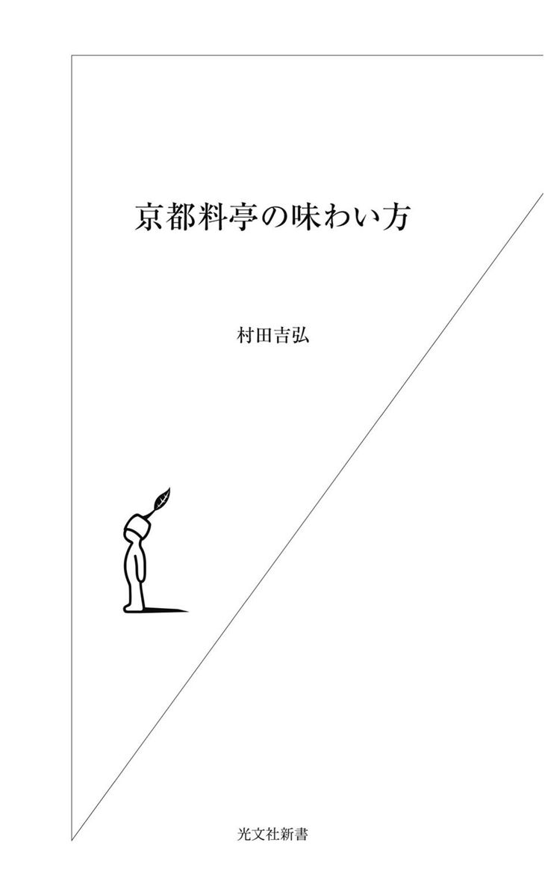

| 京都料亭の味わい方 | |
| 村田 吉弘 | |
| (2004) | |

目次
「料亭」ってどんなところですかと聞かれると、僕は「基本は飯屋です」と答えます。
「料亭」という言葉の響きから、何かおおっぴらにはできない密室のような場所を連想する人がいますが、本来はそういうところと違います。基本は飯屋なんです。
となると、割烹や定食屋と同じやないかという話になりますが、その通りです。おいしい料理をお客さんに気持ちよく食べていただき、喜んでもらいたいという気持ちはまったく一緒です。
ただ、違ごうてるところは「料亭」にとって料理は商品の一部であって、すべてではないところです。
建物の構えや庭の佇まい、床の間の掛け軸や置物など調度品の贅沢さ、生けてある花の風情、女将の挨拶や立ち居振る舞いなど、すべての要素を複合的に楽しめる飲食の場が料亭だと僕は考えてます。
いわば大人のアミューズメントパークやないでしょうか。
それはフランスでいえば、ちょうど三ツ星レストランのような場所だと僕はイメージしてます。食事を提供する場でありながら、日常とはかけ離れた異空間とでもいったらええんでしょうか。
僕は京都の料理屋の三代目として生まれ、小さい時から家業を見て育ってきました。大学時代、ヨーロッパを長く旅した時に、フランス料理のあまりのおいしさにショックを受けると同時に、日本料理という名の似ても似つかぬ料理の数々に愕然とし、「日本料理を世界中に広めること」を自分のライフワークにしようと決心しました。
大学卒業後、よその店で板前修業をし、二十五歳の時に、親父から借金をして木屋町でカウンター六席のささやかな割烹を始めました。カウンターで料理を作りながら、さまざまなお客さんとの会話を通して、料理人としていろいろ勉強させてもろたと思います。その後、二十八歳の時に店を移転・拡張、三十五歳の時に「露庵菊乃井」のビルを建てました。
四十の厄年の時、親父に呼ばれて、「厄というのは自分の身体の具合を心配する年と違うねん。厄というのは世の中の役に立つ年になったということや。今度はもうちょっと社会に役立つように外に出て行け」とぐっと背中を押されました。
当時、僕は朝から晩まで店の調理場にへばりついて働いてました。今にして思うと井の中の蛙やった。
親父の言葉をきっかけに、雑誌の取材を受け、テレビの料理番組にも出演し、料理講習会の講師を務め、外食産業の顧問や店のプロデュースの依頼を引き受けながら、京都から外の世界へ少しずつ飛んでみました。
生まれてこのかた、ほとんど京都しか知らないといってもいい僕は、こうして外の世界に出ることによって、逆に京都のことがよう見えるようになったし、仕事で東京に出かけるなかで、東京のことも徐々にわかるようになったんです。
そのなかで、一番ショックやったんは、京都と東京では、料亭のイメージがあまりにも違うということでした。
東京の人は「料亭は政治家が集まって密談をするところ」とか、もっと極端にいえば「政治家にわいろを渡す場所」と思うてる。なんや知らんけど、東京では「料亭」が悪者扱いされとる。
料亭が政治家がらみの金銭授受の舞台としてマスコミで報道され、社会的に非難を受けてることは知ってます。そやけど、それはごく一部の話。
おそらくおおかたの東京の料亭は値段が高すぎて、普通の人が行くにはあまりにも敷居が高く、自分らが踏み込めない世界と思うてるから、想像、いや妄想がどんどんふくらんで、そういうイメージになったんと違いますか。それって、本来の料亭とは違うんや。少なくとも京都の料亭の姿とはまったく違う。京都の料亭は、普通の人が、普通に働いてちょっと贅沢しよかという時に、行ける場所なんやから。
京都では、日常とはちょっと違う雰囲気のところで食事がしたい、心を遊ばせたい、そういう時の選択肢のひとつに、料亭が入ります。そやから料亭には、お客さんを楽しませようとする仕掛けがあちこちにないとあかん。それが料亭の務めです。そういう仕掛けがあるさかい、僕は「大人のアミューズメントパーク」と呼んでるんです。
そういうふうに楽しんでもらえる、僕らしい料亭を東京につくりたい、そう思いたったのは十年前。
しかし、「料亭」を開くというのは、そないに簡単にできることではありません。テナントビルに入るのとわけが違いますから。
土地を買うて、数寄屋造りの建物を建てて、庭をつくって、器をぎょうさんそろえて、掛け軸を新たに買い足して、大勢の料理人を抱えて......。
十年かけて、こつこつと準備をしてきました。そして、とうとう僕は五十二歳にして、ごっつい借金をしょいこんで、東京に「料亭」をつくってしまいました。こんなご時世に、アホちゃうかと思われるかもしれへん。だれから頼まれたわけやないし、採算が合うかどうかもわからへん。しかし、この十年間、僕なりに考えに考えた末のことなんです。
何が僕をここまでつき動かしたのか。この本に全部書きました。僕ら京都の料亭が長いこと、生き残ってこられた知恵みたいなもんも含めて、料亭とはどんな仕事なのかについても書きました。
この本を読んで、みなさんが今まで持っていた料亭のイメージが少しでも変わってくれれば、僕としては、ほんまにうれしいです。
菊乃井 村田吉弘
料亭の基本は「飯屋」です。そやから、当然のことながら、お客さんは食事にやって来はります。拝観料をもろて、館の中を見せて、それで終わりという商売をしてるわけではありません。
「料亭」に来はるお客さんは、食事を提供する「飯屋」を会場にしてはいるものの、食事以外にも目的があって集まることが普通です。たとえば結納や還暦のお祝いや法事、あるいは商談や見合いの席、同窓会や着物の展示会、長唄の発表会など......。東京あたりならホテルを会場にするような集まりを料亭で行うのは、京都ではそれほど珍しいことではないんです。
京都の料亭は、町衆のみなさんがちょっと贅沢をしたいなという時に、使こうてもらえる価格設定にしてますさかいに、そないに敷居の高い場所ではありません。料亭というと、一人五万円とか十万円もとられると誤解してる人がいるようですが、そんなに高いところは京都にはありません。これ、ほんまのことですよ。普通の人が普通に働いて、ハレの日や何かのお祝いの時、あるいは自分へのご褒美として、ちょっと無理すれば行けるような価格帯です。
僕の店を例にあげて、具体的に説明しましょう。
京都に二カ所、お店があります。高台寺そばの「菊乃井本店」は料亭であり、木屋町の「露庵菊乃井」は割烹です。
夜の料理のコースの値段を比べると、本店は一万五千円から、木屋町は一万円から。もちろん昼はどちらの店も、もっと安い価格設定になってます。
コストパフォーマンスを考えると、本店のほうが絶対に得やっていうお客さんはぎょうさんいてます。料理だけではなく、雰囲気やサービスなどをトータルで考えると、本店のほうが得やというわけです。
本店は基本的には個室の座敷です。窓からは庭が眺められ、床の間には季節の花が生けられ、それなりの調度品が飾られている。女将が挨拶にきて、仲居さんが料理をとりわけてくれる......。割烹とはまるで異なる空間で、ほかのお客さんらのことはまったく気にせず、自分らでゆったりと静かに食事ができます。
一方の割烹は、料亭の「静」と対極をなし、「動」を楽しむにはまさに恰好の場です。カウンターごしに、料理人が刺身をひいたり、魚を焼いたりするさまを逐次、目で追いながら、時には料理人たちと会話をしながら、活気のある雰囲気のなかで食事ができます。
同じ「飯屋」でありながら、雰囲気が全然違う。ということは、それぞれの空間の楽しみ方が違うということになります。
料亭と割烹の違いは、後ほど詳しくお話ししますが、割烹は「即興の妙」、料亭は「完結の妙」とでもいったらええんでしょうか。
「完結の妙」を楽しんでいただくために、料亭は料理以外に、お客さんを楽しませる仕掛けを多く用意し、お客さんをお待ちしてます。
そやから僕はそれを「料亭は大人のアミューズメントパークや」という言葉で表現してるんです。
僕は普段、自分のことを「飯屋」というてます。別に卑下してるんでもなんでもなく、自分の仕事の基本を忘れたくないと思うてるから、そう表現するんです。
ついこの間、こんなことがありました。
京都で菓子屋を営んでる後輩に向かって、「饅頭屋」というたら、彼がプーッとふくれるんです。
「先輩、『饅頭屋』いわんといて下さい。うちは『菓子屋』ですから」
「『菓子屋』と『饅頭屋』とはどう違うねん？」
「菓子は菓子司というて、お茶席で使われる菓子を作ってるところです。饅頭屋にはそないな菓子は作れまへんやろ」
「そやけど、上用饅頭は饅頭というんちゃうか」
「そうです」
「ほんなら、上用饅頭は菓子ではないんか」
「菓子です」
「ほんなら『饅頭屋』と『菓子屋』とどう違うねん」
「......ほんだら先輩とこは『飯屋』ですか」
「そうや。僕とこは『飯屋』と普段からいうてるやないか」
「『料亭』やないですか」
「『料亭』は『飯屋』なんや。まあ、それはええけども、この頃、△△の豆大福うまいやん」
「あれは僕らとは違う職種です。あれは餅屋がする仕事ですさかいに。一緒にせんでください......」
東京の人らにはピンときいひんかもしれへんけど、京都では、菓子屋、饅頭屋、餅屋という一応の区別があります。同じ饅頭という名前であっても、菓子屋が作る饅頭、饅頭屋が作る饅頭、餅屋が作る饅頭では、なされてる「仕事」が違うんです。もし目の前に、三十種類の饅頭が並んでいても、京都人なら「これはお饅、これは餅、これは菓子」というふうに、だいたい分けられるはずです。洋菓子でいえば、同じシュークリームでも、有名パティシエが作るものとそうではないものが見ただけでわかるのと同じ感覚です。
僕の後輩が、「餅屋とは違う」というた背景には、「餅屋」の豆大福がなんぼ人気があっておいしうても、茶席の主菓子で出てくることは絶対にない、餅屋とは格が違うという妙なプライドがあるわけです。
しかし、僕にいわせれば、饅頭もろくに作れへん人間が、自分は「饅頭屋」ではないとか、「餅屋」とは違うというのはおかしい。
そういうことを言いだすのは、だいたい二代目とか三代目に多いねん。現場のことが何もでけへんのに、プライドだけは高い。うちを何屋と思うてくれてんねんみたいな感覚です。
実際、京都にはそういうところが多いんですよ。
「それは饅頭屋の仕事やから、うちはこんなんようしまへん」というのではなく、お客さんがそういうもんを作ってほしいと言わはったら、饅頭を「菓子屋」の仕事にするために、自分やったらどうするかを考えるのがプロフェッショナルやないかと僕は思います。
たとえば、僕の店で「この子が急に親子丼を食べたいというてんねんけど、親子丼を作ってもらえへんかなあ」と、懐石料理を食べに来はったお客さんからいわれたとします。
「うちを何屋と思うてまんねん。丼屋とちゃいまっせ」というたら、あきまへん。親子丼を「菊乃井流」にちゃんと作って、「はい、坊ちゃん、親子丼を作りましたよ」といわなあかん。それを親が見て、「さすが菊乃井さんやな。親子丼が、ここではこんななるかぁ」といわれるようなもんを作るのがプロの仕事やと思います。
「料亭」ってすごいなあと思うてもうて初めて「料亭」なんと違うかな。
「料亭である」ことが「料亭」の値打ちではないんや。「料亭」の値打ちは、「料亭」が施すしつらえ、作る料理、もてなすサービスにあると思うてます。「料亭」は、そういう「値打ちを探す愉しみ」があちこちに潜んでる場所です。僕が「大人が遊べるアミューズメントパークや」といってはばからない理由はここにあります。
ミステリーツアーならぬ、料亭の値打ち体験ツアーにおでかけください。それにはちょっと大人のお財布が必要やけど。
以前、本店にある芸能人が予約をしてやって来ました。ところが、バミューダにサンダル履き、キャップをかぶって、黒いサングラスをかけて、肩から鞄をクロスにかけて、まるで海にでも遊びに行くような恰好やったんです。
「すんませんけど、座敷にお上げすることはできまへん」と、お断りしました。
どんなに有名な人かわからんけど、海の家に行くならよろしいで。でも、そんな恰好の人を店に入れて、廊下でほかのお客さんがその姿を見はったら、どう思うやろ。
たとえば、結納のお席の方ならきちっと正装してらっしゃるわけで、そういうお客さんにしてみれば、「ここはなんちゅう店や。あんな恰好のあんな客まで入れんねん」と思わはるでしょう。
その瞬間に、「菊乃井」を選んでくれはったお客さんの期待感を裏切ることになると思うんです。だから断らざるをえない。
断るということは、座敷をひとつ無駄にすることで、店の売り上げがなくなるわけやから、数字だけをみればそんな恰好のお客でも入れたほうがええねんけども、ほかのお客さんを失望させるわけにはいかんねん。
おじいちゃんの還暦のお祝いをしよういうて家族が集まる席では、小いちゃい男の子でさえ、きちっとした恰好で来るわけです。ましてや大人ならば、その程度の常識は持ってほしいなと思います。男性ならジャケットを着てネクタイを締める。スニーカーではなく、ちゃんと靴を履くという程度のことです。
玄関で靴をどっち向きに脱いだらええのかとか、どこでコートを脱いだらええのかとか、そんなことをお客さんが心配する必要は一切ありません。お客さんは楽しむために、来はったんやから、もっと大らかに構えはってええんです。何かあったら店のもんに、言いつければよろし。
よく「料亭」に行った時のマナーを教えてほしいといわれますが、「料亭」だからこうしなくてはいけないとか、「居酒屋」だからこうしてもいいというような話は基本的にはないはずです。
僕らはお客さんのための食事を作ってるわけですから、その人がお箸より手で食べたほうがおいしいと思わはったら、手で食べてもろうても、いっこうに構わないんです。焼きあがった鮎を手で持って食べたとしても、それがチャーミングに見えれば、何もマナー違反じゃない。
ただし、人間は一人で生きてるわけではないですから、他の人が自分の行為なり仕草を見て、非常に気分が悪くなるようなことは、せんほうがええ。それがマナーやと思います。「ほんまに行儀が悪いなあ。なんちゅう人や」と思われるようなことは、せんほうがええ。
ただ料亭の場合は個室ですから、そのグループが、その人の行動によって気分が悪くならなかったらええんです。
たとえば、ヘビースモーカーのお客さんが家族と一緒に来はったとする。そして、食事中にもかかわらず、タバコをスパスパ吸う。そのお客さんは、平たくいえばマナー違反です。食事中に、タバコを吸う奴あるかいな、マナーがなってないなぁと普通は思われます。
そやけども、「だから、僕はこうやってタバコを吸いながら、ご飯が食べられる個室を選んだんだよ」と本人が考え、さらに「お父さんが気分よく食べられるのなら、私たちは一向にかまわない」と家族が理解してるなら、そのご主人は別にマナー違反でもなんでもないわけです。
お椀の蓋の置き方とか、お箸の置き方とか、そんなことはどうでもええ。そんなマニュアルみたいなことはナンセンスです。食べ手側は給仕する人に対して、気を遣う必要はない。そうではなく、器を下げる人間がお客さんの会話を中断させることなく、スマートに下げるにはどうしたらええかを考えればええんです。
そんなことより、一緒に食事してる相手が気分悪くならないように、相手に恥かかせへんようにするにはどうすればええかを考えるべきやと思います。
本来マナーというのは、店に対してどうのというものではなく、一緒に食事してる相手と楽しい時間を共有しようという気持ちから生まれたものであり、それがない人がマナー違反やということに尽きるんやから。お客さん対料亭ではなく、お客さん同士の問題です。
「鮎はね、こうして骨抜きするんだよ。君は何にも知らないねぇ」というた時点で、そいつがマナー違反やという話です。
ちなみに、よく聞かれる質問に、座敷の上座と下座の位置関係があります。床の間を背にするのが上座で、出入り口に近いほうが下座という基本ルールは一応あります。もし、どこが上座かわからなかったら、仲居に「お客様には、こちらに座っていただいていいですか」と聞けばええと思います。
ただ、上座、下座にこだわると、座敷によっては、お客さんがせっかくの庭を背に座らなあかんという時も出てきます。そういう時は、「上座と下座が逆さまになりますけど、庭が見えるほうがよろしいでしょうか」と相手に聞いて、下座に座ってもらってもかまいません。
上座、下座にかかわらず、わからへんことがあったら、なんでも仲居に聞いてください。料理のことでも、器のことでも、一応は答えられるように教育してるつもりですさかいに。しかも、うちの仲居はあちこちの座敷をかけもちしてるわけではなく、お帰りにならはるまで、担当した座敷のお客さんのためだけに待機してますから。
「聞くのは恥ずかしい。恥をかくのは嫌だ」と思うのはおかしなことです。
知ったかぶりが一番、恥をかくんではないやろか。
料亭の基本は「飯屋」ですが、料亭が割烹や居酒屋と異なるのは、料理が商品の一部である点です。さらにいうならば、料亭にとって大事なのは「格」です。その「格」を理解すれば、おのずと店もお客さんも、互いにふるまうべき態度が決まってくるんやないかと思うんです。
春休みになると、京都には大勢の女子大生たちが卒業旅行でみえます。本店ではお昼にお弁当をお出ししてますから、それを目当てに彼女たちも来てくれます。たいていは数人のグループで行動してますから、最初はキャーキャー、ペチャクチャとうるさいんですけど、玄関に入り、座敷に通され、座ってるうちに、空気とか雰囲気を察知するんか、たちまちしゅんとおとなしくなり、行儀がよくなります。
彼女らが明らかにカルチャーショックを受けてるのがわかります。人間はそういう経験を積んで大人になっていくわけやけど、彼女たちが感じた雰囲気こそが、「格」やないかと思うてます。
「格」は日本人の生活のなかにずいぶんたくさんあります。たとえば人の格の「人格」、お寺の「格」、器にも「格」があります。
湯呑みよりはぐいのみのほうが、格が上やし、さらに茶碗のほうが格上といわれてます。
焼き物の世界でいわれる「一楽、二萩、三唐津」、これも格やと思います。大切なお客さんを迎える時には、楽の茶碗でもてなし自分の気持ちを表すわけです。
立派な細工が施された土瓶と、雑に作られた香炉がある。どっちが格上かいうたら、香炉が上です。香炉は床の間に置くものですが、土瓶を床の間に置いたら笑われます。
着物でもそうです。格式のあるところへ出かける時には、木綿よりもウール、ウールよりも絹というふうに、きっちりとした格付けがあります。
人間関係でもそういうことがありますやん。
たとえば会社対会社の商談。
「どなたがお見えになりますか」
「部長と一緒に寄せてもらいます」
となれば、普通は商談相手のほうも部長が出てきはります。部長が出てこず、課長が対応すると失礼にあたるわけです。
国と国の会談もそうで、大臣が公式に訪問したら相手国も大臣が応対せんことには、話にならん。
「ものがわかる」とか「ものがわからん」とか、よういうじゃないですか。日本の文化のなかでは、ものの「格」を理解してる人のことを「ものがわかる」というように思います。
植物でも、松竹梅という序列があります。なんで松の位が高いのか。「そんなん誰が決めたん」と、うちの子供に聞かれたことがあります。
「それはそういうもんなんや」
「何でなん？」
「何でも。そういうもんには理屈がないねん」
と僕は答えましたが、そういうことっていろんなもんにあります。
今日はホテルのメインダイニングで、お呼ばれして食事に行くんやという時に、昔やったら「何着てこう、お母さん」という話になります。自分の着てるもんで、家に恥かかしたらあかん、親に恥かかしたらあかんということで、それなりに気を遣ったもんです。
今日び、そういう意識が薄くなってきてるのを、うちの子を見ても感じます。
「どこ行くのん？」
「ホテルのレストランに行くんや」
「ちゃんとして行きなさい」
「ちゃんとするってどうするの？」
「スカートはきなさい」
「いややん、そんなん。なんでズボンやったらあかんのん？」
「何でもあかんねや。ワンピースかスーツを着なさい」
「そんなんないしぃ。そんなダサい恰好、かなわん」
とかいうてます。
今の日本の世の中は、なんでもかんでもゴチャゴチャにしてしまう傾向があると思います。
高度経済成長時代、働きづめに働いて、金のある奴が偉いねんみたいな風潮になり、「格」やら序列が乱れてしもうた。
昔は、「料亭」と「割烹」は違うねんみたいなことはみんなが知っていたわけです。何が違うのみたいな話っていうのは、昔はありえへんかった。「『レストラン』と『ビストロ』の違いって何？」みたいなことと一緒です。それって、フランス人に聞いたら、えらいびっくりするはずです。そんなん違って当たり前、日本人はそんなことも知らんのかということになると思います。
「住み分けがない世の中が公平な世の中や」と錯覚し、シャッフルしたから、ごちゃごちゃになってしもうたんです。
誰もが公平にものを買える世の中がええと思うてしもうたんや。そやから子供にルイ・ヴィトンのバッグを持たす親が現れたり、犬の鎖までルイ・ヴィトンを選んだり、ワンルームに住むＯＬが金無垢のロレックスを買うてしまうんや。
格同士がつりあっていれば、ええんですが、格がつりあわないから、ちんけなものになってしまう。
現代は、昔のようにきっちりとした住み分けが必要な時代になってきてると思います。住み分けいうても、けっして差別をするわけではなく、身の程をわきまえることが大人やということです。
そういう意味で、子供たちに「格」を理解させるきっかけとして、僕は料亭がもっとクローズアップされてもええと思うてます。ヨーロッパでは、子供が成人に近くなったら、親が子供をエスコートしてちゃんとしたレストランに連れていき、食事をさせる。そういう場所をきちんと見せて体験させておくわけです。
子供が二十歳になったら、親はちゃんとしたとこできちんとした服装で、ちゃんとした日本料理を食べさせる責任があるんやないやろか。社会人として、大人としてのたしなみとして必要なことやからです。子供が社会に出て、遠くない将来、そういう席に出ることがあるかもしれない。その時に戸惑わないように、場慣れさせておくことが大事です。
「格」を体験することによって、新しい世界への扉が開かれるかもしれません。
ドアを開かないことには何も始まらない。「料亭」は、ノックするぐらいの力は持ってると信じてます。
僕が作ってる料理をあえてジャンルわけするならば、懐石料理の流れを汲んだ京料理──「京懐石」といえます。
「懐石」とは懐の石という意味です。昔、修行中のお坊さんが、空腹を凌ぐために温めた石を懐に抱いたことにこの言葉のルーツがあります。そこから転じて、「懐石」とは空腹を凌ぐための軽いスナック的な食事、という意味で使われるようになりました。
現代に伝わる懐石料理の形式は、茶の湯の祖、千利休が確立したもので、本来、茶の湯の席でお茶に招待した側（亭主）が、お客に出す食事のことを指します。
抹茶のなかでとくに濃茶は香りが高く味わい深いものですが、濃くてどろっとしてますから、空腹時に飲むには強すぎることがあります。そやさかいに、それまでに、ちょっとした「虫養い」を入れとこかというのが、懐石の始まりです。「虫養い」とは、腹の虫を養う、つまり小腹を満たすという意味です。つまり、ひと碗のお茶をおいしくいただくために、お腹をちょっと満たすのが懐石料理の役割です。
さて、懐石料理とは別に「会席料理」という言葉があります。音が同じなので紛らわしいのですが、こちらはだれかをもてなしたり、だれかと会う時に供される食事を意味します。早い話が宴会などで供される料理のことですね。本来、僕らが作ってる料理は、意味としてはこちらのほうがふさわしいのやとは思いますが、なんやら「会席料理」と表現するよりも「懐石料理」のほうが高級感があるということで、懐石のほうが頻繁に使われるようになったんだと思います。
また、「懐石」と「会席」は音が同じで区別しにくいので、茶の湯の席で供される本来の意味での「懐石」を「茶懐石」ともいいます。
海外にも「懐石」という言葉は浸透してます。フランス語の辞書にも、「カイセキ・キュイジーヌ」という言葉で紹介されており、「懐の石」についての解説が載ってます。その言い回しが非常に詩的で、いかにもフランス人らしくて、こっちが気恥ずかしくなるほどです。とはいえ、フランスでも日本料理というくくりを超えて、「懐石料理」をクローズアップしてくれたことはほんまにうれしい気がします。
お茶と食事をさしあげるためにお客を招く茶事は、簡単に説明しますと、次のように行われます。
まず待合で、もてなす側の「亭主」がお客を迎えます。お客は蹲（茶室の庭先にある石の手水鉢のこと）で手を洗い、茶室に案内され、食事となります。
食事は、一汁三菜（みそ汁、向付、煮物椀、焼物）を基本に、現代は強肴として二、三の料理が加わり、箸洗いと八寸、そして菓子を出すというのがひとつの流れとなってます。表千家、裏千家など流派によって、料理の盛り付け位置や膳出し（最初の膳）の飯の形など、少し違いはありますが、基本のスタイルは同じといってもええと思います。
食事がすむと、客は茶室を出て、その後再び茶室に入ります。そうしてメインイベントである濃茶を亭主が点て、炭を改めて薄茶をさしあげ、茶事は終了します。
僕が店で提供してる「京懐石」は、料理の基本的な部分は「懐石料理」の伝統に則ってますが、セレモニーとしての茶懐石ではなく、あくまで食事を楽しむ料理に変えてあります。
というのは茶懐石の場合、最初に供されるのは、一口のごはんと二口で飲みきる量のみそ汁、向付とよばれる一品です。しかし、食事に行って、いきなりごはんとみそ汁を出されたらどうでしょう。そうやって食べたいかというとそうではない。それはあくまで濃茶を楽しむためのスタイルであり、茶事というセレモニーを楽しむために受け継がれてきた伝統の方法です。ですから、普通に食事を楽しめるように、現代風にアレンジしてます。
店では、大きな流れとして、
先付→八寸→向付→煮物→焼物→強肴→ご飯→デザート
という順序で料理をお出ししてます。月によっては、焼物と強肴の間に一、二品入れることもあります。
それぞれ簡単に説明しておきましょう。
【先付】
最初に出される料理のことで、小鉢などに盛られます。お通しとか突き出しにあたります。
【八寸】
八寸（約二十四センチ）四方の杉木地の盆に盛ることからこう名づけられました。主に海の幸、山の幸を盛り込んだ酒の肴です。
【向付】
膳（折敷）の向こう正面に載せることからこの名前がついてます。「向」「お向う」とも呼ばれてます。茶懐石の場合、元々、向付としてなますを供していたようです。京懐石の場合はたいてい刺身（造り）がそれに当たります。
【煮物】
茶懐石の場合は、基本的に味噌仕立てになりますが、料理屋の場合は、具と汁のたっぷり入った椀ものになります。ぐじ（甘鯛）や鱧、フグ、鯛、松茸や筍など旬の素材を存分に盛り込み、澄ましに仕立てたものが中心となります。
【焼物】
旬の魚のほかに、豆腐や茄子、筍の田楽やふろふき大根など、季節に応じてアレンジしてます。
【強肴】
本来は、八寸のあと、さらに酒を進める時に出す料理のことをいいます。主に炊き合わせや和え物、酢の物、珍味などを供します。
【ご飯】
季節の炊き込みご飯を供します。
僕のポリシーは、食べたあとの充実感です。見た目がきれいで、品はいいけど量が少なくて、あとで何か食べにいかなならんというような内容ではあかんと思うのです。緩急を考え、ボリューム感のバランスを見ながら献立を考え、お客さんに満足していただくことをいつも念頭に置いてます。
春、夏、秋、冬の献立例をあげると、次のようになります。
一月の献立
先 付 赤飯蒸しべっ甲あん掛け 生雲丹
うぐいす菜 山葵
八 寸 サーモン花弁寿司、人参・牛芽・蕪 小川唐墨
千車唐粕漬け 豆慈姑 子持昆布
ごまめ結び 黒豆松葉刺し
向 付 車海老 鯛 鮪 梅人参 胡瓜松葉 山葵
煮物椀 百合根万寿 鶉丸
結び青味大根人 参薄葛木の芽あん
焼 物 魴鰹奉書焼き 蛤 金柑甘煮
酢 肴 菜種 白魚 土佐酢ゼリー 小梅人参・大根
生子このわた掛け あられ柚子
ガラサ灘老いくら糀和え
強 肴 丸鍋 粟麩 焼葱 露生姜
御 飯 蒸し寿司 焼穴子 金糸玉子 海苔
小梅大根・人参・柚子
止 椀 白味噌仕立て 亀甲小芋 ゆで小豆 辛子
水 物 恋仁豆腐 苺ソース キウイソース
四月の献立
先 付 鯛白子酒蒸し 生このこ ぽん酢掛け
春蘭 レモン汁
八 寸 鯛木の芽寿司 蕨烏賊 一寸豆
蛍烏賊塩辛 蝶々長芋 飯蛸
花弁百合根 花弁独活
花見団子、飽・海老・アボカド
向 付 車海老 鯛 鮪
水前寺海老 より独活、人参 山葵
蓋 物 甘鯛桜花蒸し 蕨露生姜 ぶぶあられ
焼 物 豆腐田楽 木の芽味噌 白味噌
紅鱒木の芽焼き 姫皮山椒
酢 肴 新もずく 長芋素麺 生雲丹 たらの芽
強 肴 若竹煮 鯛真子 菜種 木の芽
御 飯 筍寿司
春の物 菜種漬け 昆布大根
止 椀 うぐいす仕立て
揚げ海老真丈 花弁独活
水 物 ココナッツシャーベット 苺 粒あん
七月の献立
先 付 生雲丹豆腐 喰い出し 針海苔 山葵
八 寸 鱧寿司 はじかみ 甘鯛胡瓜巻き
川海老 べっ甲生姜 蛸の子
大徳寺麩・青瓜雷干しの胡麻酢和え
向 村 車海老 鯛 鰹落とし 水前寺海苔
山 葵 梅肉
蓋 物 豚角煮 じゃが芋あん 冬瓜 三度豆
焼 物 鮎塩焼き 新甘藷甘煮 蓼酢
中猪ロ トマトスープ あられ胡瓜
汲み上げ湯葉 花穂紫蘇 浅月
冷し鉢 鱧煮凍り 小芋 焼茄子
田中唐辛子
強 肴 順才鍋 鱧 三ツ葉 振り柚子
御 飯 鱧御飯 叩き木の芽
止 椀 合わせ味噌仕立て
揚げ粟麩 ささがき牛芽 三ツ葉
香の物 胡瓜 茄子 どぼ漬け
水 物 葛切り 黒蜜シヤーベット
十月の献立
先 村 蕪風呂吹き 胡桃味噌 叩き胡桃
八 寸 鯛菊花寿司 鱧八幡巻 焼き目栗茶巾
ガラサ海老老酒漬け 鱒の子 海老松風
いちょう芋 松葉ソーメン 塩粉吹き銀杏
向 付 鯛 鮪 車海老 あしらい一式
煮 焼 土瓶蒸し 鱧 松茸 三ツ葉 酢立
焼 物 子持鮎塩焼 むかご松葉刺し 蓼酢
ロ取り 一、サーモン絹田巻紫菊花・菊菜浸し
一、柿、大根、胡瓜のなます針柚子
一、大徳寺麩、占地の胡麻酢掛け
一、フォアグラ、壬生菜酢立
一、鯛の鰹肝酒盗和え 長芋 花穂紫蘇 大葉
一、烏賊の粕漬け 煎り玉子
強 肴 穴子宝楽焼 百合根 人参 木耳 ふり柚子
御 飯 松茸御飯 色三ツ葉
止 椀 巻き湯波 三ツ葉 滑子
春の物 蕪と蕪菜の浅漬 柴漬 塩昆布
水 物 洋梨コンポート 洋梨ソルベ ザクロ
よく「京料理」という言葉も使われますが、極端な話、京都にある料理はみんな京料理といって差し支えないと思います。おばんざいも、精進料理も京料理です。
実は、僕は京料理のルーツは韓国料理やないかと思うてます。
エーッと驚かれるのはようわかります。裏付けとなる文献があるでなし、単に僕のイメージでいうてるだけですけど。なぜこんなことを考えるようになったかというと、韓国の料理の手法と京料理の手法が似てるからです。極端な話、唐辛子やニンニクの使い方が違うだけで、共通点が多いように思うんです。
実はこう考えるに至ったのは、韓国の山寺の尼さんが作る精進料理との出会いがきっかけでした。ＮＨＫの「きょうの料理」のディレクターから、韓国料理研究家のチェ・チウンさんと一緒に韓国で精進料理を食べはったら、韓国料理に対しての考え方がすごく変わったということを聞いて、ぜひ一緒に連れてってほしいと頼んだんです。
そうして、慶尚南道にある双磎寺の尼さんであるソンジェさんを紹介してもらいました。『ソンジェ・スニムの精進料理 ２２９もの自然な味』という料理本を韓国で出版し、いまは韓国の精進料理の第一人者としてひっぱりだこの存在やと聞いてます。
これまで二回ほど韓国に伺いましたが、ほんまに驚いた。正直いうて、韓国料理というと、焼肉やキムチというイメージしかなかったんですが、最初におじゃました時は、ちょうど春やったから、山菜が中心でした。京都でいえば、「韓国版摘み草料理」という趣で、それまでのイメージが一気にくつがえされたんです。
ヤマゴボウをゴマで和えたもん、ふきのとうを油で炒めたもん。さらにおひたしに、ごま油と醤油をかけたもん。いわゆるナムルです。京都でもよく「煮びたし」や「和える」という調理方法を用います。
たとえば、青唐辛子をさっとあぶって、漬け汁に漬けておく、あるいは青菜を豆腐の衣で和えるなど、京都のおばんざいと同じ手法で作られた料理をこの山寺で数々ご馳走になりました。京都に戻ったんやないかと錯覚を起こすほどでした。
そして極め付きが、最後のお茶菓子でした。見かけは京都の落雁そっくり。えらいびっくりして聞いてみると、松の花粉を練ったものだそうで、上品な甘みがあるんです。形も、京都の落雁と同様、押し型で花を象ってます。その時、僕は京都の落雁のルーツはこれやと閃いたんです。京都では、韓国のように松の花粉がそないにぎょうさんとれへんから、豆の粉をひいて、砂糖を入れて、よう似たもんを作ったんと違いますか。
ソンジェさんが作る料理は、にんにくは一切使いません。戒律が厳しく、肉類は一切食べないし、ネギ、ニラも食べはらへん。砂糖も一切使わない。甘みは梨の汁を絞って煮詰めたもんと蜂蜜だそうです。僕にとってはえらいカルチャーショックやった。
とはいえ、本当に京料理のルーツが韓国にあったとしても、不思議でも何でもありません。今の京都の文化の基礎をつくらはったのは、大陸から渡ってきた帰化人やないですか。西陣織も、友禅も、陶芸も、才能のある技術者たちが朝鮮半島から日本に渡り、技術を伝えたということは明白な事実です。その技術者たちが料理人も一緒に連れてきたと考えるのは自然なことやないでしょうか。自分らが普段食べ慣れてるもんを食べたいと思うのは不自然なことではありません。確固たる証拠は何もないんやけど、状況を考えるとそうやないかと僕は勝手に思うてるんです。
さらに、唐辛子は日本が韓国へもたらしたという説もあるやないですか。豊臣秀吉の朝鮮出兵（一五九二年～九三年）の時に、朝鮮半島は寒い所やから足袋の先に唐辛子を詰めて温めるために、日本から唐辛子を持参したという話もあります。ポルトガル船が日本と朝鮮半島にほぼ同時期にもたらしたという説もあるようで、その真偽のほどはよくわかりませんけど。もし、ちゃんとした学問的な裏づけがあるなら、ぜひ知りたいなと思うてます。
ルーツはともかく、京都の料理の特徴をもう少しわかりやすくするために、大阪と江戸の料理と比べてみましょう。そこには歴然とした違いがあります。
まず、大阪と京都ですが、地理的にはほんまに近いにもかかわらず、出汁のとり方がまったく違ごうてます。それは使用する昆布の種類の違いによります。
京都には、十四世紀ごろの北国船ルートで利尻昆布が、大阪へはその後に開かれた北前船ルートにより羅臼昆布がもたらされました。
大阪で出汁をとるのに使われる羅臼昆布は、北海道・知床半島の羅臼町周辺で採れるもので、味は濃厚で香りが高く、出汁の色が濃いのが特徴です。うま味のもとであるグルタミン酸がぎょうさん抽出できるかわりに、臭みやぬめりがたくさん出るので、昆布を一晩水に漬けておきます。昆布を取りだして、浸しておいた水を沸かし、鰹節を入れて、ぐらっときたら火を止めて、これを出汁汁とします。鰹節の削りは京都よりもちょっと分厚く、血合いを削り落としてない本節を使います。
一方、京都の場合は、利尻昆布を使います。稚内沿岸、利尻島、礼文島周辺で採れる昆布がそれです。水に昆布を入れ、温度を上げて、沸点近くまでもっていって、火を止めてから、昆布を取りだして、鰹節を入れます。鰹節は、血合い抜きのものをこれ以上薄く削れへんという〇・三ミリにして使います。もちろんコストのことがありますから、店によって使う材料の質はいろいろかもしれませんが。
東京には、もともと江戸料理が根付いてました。昆布は日高を使います。昆布を水から入れて沸かして、ぐらぐら炊く。その後、昆布を引きだしてから、鰹節を入れます。鰹節は大阪よりもさらにぶ厚く、もちろん血合い入りです。そして、ひと煮立ちさせて、火を止めます。
関西の水は軟水やから昆布のうま味を容易に引きだすことができますが、関東の水は硬水やから出汁が出にくいさかいに昆布をぐらぐら炊き、鰹節からイノシン酸をしっかりと出す、つまり鰹節の香りと味をしっかり効かせるわけです。
同時に鰹の生臭みを抑えるために、濃口醤油の香りでバランスをとるため、江戸の出汁は色が濃く、関西の出汁は色が薄いのです。
昆布の種類の違いは、結局、船のルートの違いによるものだし、水の質も違うさかいに、料理の手法が全然違うもんになってしもうた。
江戸に懐石料理がないかといえば、そんなことはありません。江戸千家もあれば、遠州流もある。武家茶の文化は、京都よりも、江戸のほうに、たくさん残ってるぐらいです。
江戸料理を代表する料亭がかつての「八百膳」です。文化・文政の頃（一八〇四～三〇年）に町人文化の延長線上で花開いた、江戸の料亭です。江戸前の魚介類はもちろん、江戸の経済力を生かし、全国の産物を早飛脚などで取り寄せて料理する高級店でした。その「八百膳」が残した料理書に掲載されてる料理が、江戸料理であるといっても過言ではありません。
現在、江戸料理の典型的な例としてわかりやすいのは、僕は佃煮だと思います。関西の佃煮とはまったく違ごうて、しっかりした濃い味でぴっちりと煮ているのが特徴です。
だしまきも関西とは全然違います。江戸のだしまきは砂糖が入っていて、京都人の僕には相当に甘く感じられます。東京の人はお茶請けに食べたりしてはるようですね。
ほんまに残念なことに、こういう江戸料理の文化を今に伝える料亭は、少しずつ消えつつあるようです。
料亭の「仕事」をより理解していただくために、「割烹」の料理と比べて、その仕事の違いを説明してみましょう。料理を作るスタンスの違いがすべてを語るといってもいいかもしれません。
スポーツにたとえれば、「料亭」は棒高跳びであり、「割烹」は走り高跳びです。棒高跳びと走り高跳びは、同じ高跳び種目ですが、助走の仕方も違うし、跳び方も違う。跳ぶ高さもまったく違う。「跳ぶ」という行為は一緒ですが、まったく異なる種目です。「料亭」と「割烹」の料理もそれとまったく同じことがいえます。「跳ぶ」、つまり「料理を作る」という行為は同じですが、異なる手法で行う仕事ということになります。
では具体的に説明しましょう。
「料亭」では、予約をいただいた時点で、その席がどういうことを目的にした集まりなのか、把握するのが第一です。おめでたい席なら赤飯を用意し、仏事なら仏事用の器に替え、掛け軸や花も替えるという具合に、席の目的に応じて事前の準備が必要やからです。
当日は、予約をいただいてるお客さんたちのために、女将が座敷を確認して、ふさわしい季節の花を席に生けて、軸を掛け替え、床の間の置物を替えるなど、しつらえを整えます。玄関には水を撒き、仲居はお客さんがお部屋に入る予定の三十分前にはお香を焚いておきます。
調理場といえば、予約の時間から逆算して、いつの時点で出汁をひいて、いつ野菜を炊くのか、すべて段取りをしておきます。
「お客さんが、おみえになりました」という合図で、すべて手順通りに料理を作り、仲居が運ぶ。つまり「料亭」の仕事とは、その席の目的に応じて舞台を整え、満足して帰っていただくというハッピーエンドの「脚本」を練り、その脚本どおりに女将が指示を出し、仲居、調理場の人間たちがそれに従い、同じ目標に向かって予定通りに動くというものです。
一方の「割烹」は、「料亭」とは異なり、即興の妙が店側に求められます。
お客さんからの電話予約の時点では、その方が「接待の席やから」とかいわない限り、店はどういう目的の食事か当日までわからないのが普通です。
そうして当日、予約しはったお客さんが二人おみえになったとします。そのうちお一人が、つい二、三日前に接待で来てはった方で、今日は奥さんを連れて来はったとしましょう。そうすると、同じ献立を出すわけにはいきまへんから、パパッとすぐに変えなあかん。
あるいは鰹の旬やから鰹を食べてもらいたいと考えていた時に、おなじみさんから、「すまんけど、今の時期はどこへ行っても鰹が出るさかい、鰹はやめてや」といわれたら、「わかりました」というて別のもんを出さなあかん。
あるいは「ねぎを抜いといてや」とか、「鯛をちょっと薄造りにしといてくれや」とか、「ひらめの縁側をちょっと多い目にくれや」という具合に、お客さんはカウンターでいろいろ言わはるわけですから、機転をきかす必要があります。とくに、おなじみさんになればなるほど、オーダーメードで料理を素早く仕上げていくことが要求されます。
「即興の妙を忘れたらあかん」
これは、京都の割烹の草分け「たん熊」の先代の栗栖正一さんにいわれたことです。「割烹」のあるべき姿をズバリ言いあらわしてる言葉やと思うて、いつでも忘れんようにしてます。
もちろん料理だけではありません。お客さんが、「いやあ、今日は実はちょっと嬉しいことがあってなぁ」と言わはったら、料理を作りながら、カウンターごしにお喋りのお相手もせなあかん。
割烹は、カウンターが大事な「舞台」です。お客さんはその舞台を楽しみに来はることが多いんです。その舞台を十分に楽しんでいただくためには、目の前のお客さんの目を楽しませながら料理を作ることも大事です。事前に仕込んでおいたもんを器に盛り付けるだけでは、お客さんはつまらんからね。
そやから、たとえば、カウンターのまな板の上で、海老がパッと跳ねるとします。
「いやあ、勢いええなあ」
「お造りに、これを出しまっさかいに」
お客さんの目の前で、海老の頭をはずして皮を剥いて、お造りにするプロセスをすべて見せる、いわばライブパフォーマンスです。一方、料亭の場合は、お客さんが来はる前に、海老の下処理をちゃんとしておき、冷水で洗って準備万端整えておく。ライブ感が全然違います。
ほんまは料亭のやり方のほうが海老の身がよう締まって、おいしい加減になってるわけやけど、それは別として、割烹のお客さんは、料理人が自分の目の前で自分のために料理をしてくれるのを楽しみに来はる。
しかも、そういうお客さんが、カウンターのこっちに二人、あっちに三人という具合に別々にいはる。食事を始める時間もバラバラやし、食べはるスピードも違う。
店の奥の調理場で料理を作ってるのと違ごうて、食事の進行度合いが一瞬にしてわかるわけですから、もしお客さんの食べはるスピードが速すぎて、次の料理を出すまでの間があきそうな場合、
「ちょっと待っとくれやっしゃ。今やってまっさかいに。すんまへんな、遅うなって」
「ええで、ええで」
と声をかけなあかん。何もいわんと、ほっといたら怒らはる。僕らの料理はどないなってんねんって思わはるのは当然です。
このように、あっちのお客さん、こっちのお客さんと、目配りしながら、やらなあかんというのは、かなりエネルギーが要ります。
若い頃は、お客さんとの接し方について、親父からぎょうさん叱られました。時々、無理難題、滅茶苦茶なことを言いよる人がいて、僕は短気やったから、すぐにカチンときて、「金いらんから、帰ってくれ」というてしまったこともあります。その時は先代にずいぶんと叱られました。
「お前はバカか。金払ろうて帰ってもらえ。帰ってくれというた時点で、勝負はお前の負けや」
どんないやな客であっても、最後はにこにこ笑ろうて「おおきに、また来るわ」といわしたらお前の勝ちやというてはった。
割烹にはマニュアルは何もなく、すべて臨機応変に対応することが肝心です。料亭は舞台が整ってますが、割烹は一人舞台のようなもんです。お客さんの反応を見ながら、演じ方も何もかも変えなあかん。それがでけへんならお客さんを満足させられへん。
さらに、料亭と割烹の料理の違いを一言でいうならば、温度が違う。たとえばお椀の温度は、約十度違います。
料亭も割烹もお椀に熱々を張るのは同じです。お椀に張りあがった時は、九十度ぐらい。割烹ではそれをすぐに目の前のお客さんに出すことができますが、料亭の場合、仲居さんが調理場を出て、廊下を通って座敷に向かい、座って襖を開けて、座って襖を閉めて、お客さんの左脇へ行って、左脇からお出しして、どうぞというまでに十度下がる。八十度でもかなり熱いですし、仮に七十五度とか六十度でも、人間の舌は熱く感じます。ぬるいとはなりませんから、もちろん許される範囲やけど、この温度の違いは大きい。
鮎でもそうでっせ。おおげさにいえば、「アッチッチ、アッチッチ」と大騒ぎして、食べると唇の上の皮が剥けるぐらい熱い鮎は、なんぼ頑張っても「料亭」では出せへん。目の前で焼かん限り無理です。目の前で焼きたてのアツアツを食べられるのは、「割烹」だけです。
「割烹」で、お客さんが「今日は鮎をぎょうさんくれや」と言わはったとしましょう。もし五匹出すとしたら、僕らはまず二匹焼いて出して、ちょっと間をあけて二匹焼いて出して、またちょっと間をあけて一匹焼いて出します。五匹いっぺんに焼いて出したら、一匹目を食べてる間に、残りがどんどん冷めていきますから。食べる時の温度帯は、「料亭」では真似でけへんわけです。
そのかわりに「料亭」でしか、絶対にでけへん仕事もあります。
料亭なら、器に凝ることで、お客さんの目を楽しませることができます。たとえば、割烹では鮎を一人ずつの皿に分けてお出ししますが、料亭なら大きなお皿に盛り込むことで、迫力のある料理に仕立てることができます。
先々代の永楽が焼いた芭蕉皿は、そういった演出には恰好の皿です。芭蕉というのはバナナの葉のことで、その名の通り、バナナの葉の形をし、葉脈が染付けで描かれた、長くて大きい皿です。そこに笹の葉を敷いて、鮎を右に五匹、真ん中に三匹、左に二匹盛り込んで、青竹をシュッとつけて、座敷に持っていったら、「ワァーッ」という歓声が間違いなくあがります。
ところが、「割烹」でまったく同じものをカウンターのお客さんのところへ持っていっても、歓声どころか、その皿、どこに置くねんみたいな話になる。
料亭のテーブルは広々として、一人当たりの占有面積が大きいさかい、ダイナミックな演出が思いっきりできる。春やったら、筍とわかめを炊いたんがごっつい鉢に盛り込まれてボーンと出てきたら、たいていのお客さんは驚かはります。それを仲居さんがひとりひとりにお取りわけする。
その「ワァーッ」とか「スゴーイ」とか、お客さんに驚いてもらうことが、料亭の仕事では非常に大事なことなんです。「やっぱりさすがやな」とお客さんは思わはる。料亭の仕事に期待されてるのは、「ええもん見させてもろた」とお客さんに満足していただくことです。お客さんは料理だけではなく、そういう部分にもお金を払ってると僕は思うてます。
「料亭」も「割烹」も基本はどちらも「飯屋」です。しかし、棒高跳びと走り高跳びの例やないですけど、種目、つまり職種が違う。それぞれに求められてる仕事が違うんやね。
それは料理だけと違いますよ。お客さんのお出迎えから違いまっしゃろ。
たとえば「料亭」ならば、玄関でタクシーを降りると、下足のおじさんがすぐに駆け寄ってきて、「おいでやすぅ。お待ち申し上げておりました」というて、「どうぞ、こちらへ」と案内してくれる。
玄関上がりには大きな石が埋め込められ、上がり口には季節の軸が掛けられてる。お香の香りが漂い、仲居さんが座って、「おいでやすぅ」と挨拶してくれる。靴を脱いで上がり、畳廊下づたいに歩いて、座敷へ案内される。
「なかなか、気分がええなあ」みたいな感じやないですか。
「割烹」の場合、がらっと扉を開けると、「おいでやすっ。どうぞ」といわれて、カウンターの席に通され、すぐに「飲み物、何にしましょ」といわれ、食事に入る。
どちらがいい悪いではなく、まったく異なる空間なのです。
さらに付け加えると、「料亭」と「割烹」では、お客さんの気楽さも違います。
友だちと食事するには、割烹のほうが堅苦しくなくてええということもあるようです。嫁はんに「今日ちょっとうまいもん食いたいなぁ。料亭行こか」いうて、飯を食いに料亭へ行く人はあんまりいいひんと思います。「うまい魚を食いたいし、ちょっと行こかぁ」というて、割烹を予約するのは普通です。
一方、「割烹」ではなく「料亭」を予約する時もあります。
「昔、お世話になった恩師が東京から来はったんで、料亭を予約しようやないか」
目上の人を招待する時には、相手に対しての敬意を、設営した場所で表現せんと駄目なわけやから、こういう場合は「割烹」よりも「料亭」が向いてるように思います。そやから店側も、お客さんがどういう期待を持って来はったのか、十分に認識したうえで仕事をしないと、なんやピントがずれたおかしなことになってしまうと思います。
料亭の料理が演出過多になってしもうては、元も子もありませんが、割烹とは違う工夫が絶対に必要です。僕らは料亭ならではの仕事をすることに、全力を傾けてるつもりです。
京都の料亭の主人は、たいがい自ら包丁を握る料理人でもあります。フランス料理でいえば、オーナーシェフに当たります。経営者であり、なおかつ調理場の陣頭指揮をとることで、自分の店を守ってきたといっていいのではないやろか。ここが京都の老舗料亭の知恵やないかと思います。
僕の祖父の時代は、料亭の主人というたら、ある意味で旦那衆やった。ちょうど僕らの親父の世代から、自分らが包丁を握らんことには、家業が危ういことになると気がついたんです。
かつてテレビを持ってる家が町内に一軒しかないというような時代に、祖父は運転手つきの車に乗ってました。「旦那はんが、お出かけになります」となると、アメリカのスチュードベーカーとかいう、羽みたいなのが付いたピカピカの車が、すぐに玄関に横付けされる。
祖父が三つ揃いの背広を着て、帽子を被って、ステッキを持って、外出していたのを子供心に覚えてます。株と骨董はよう買うてはりましたなぁ。何人かの陶芸家のパトロンになって、ぎょうさん器も買うてた。謡を習い、夜はお茶屋で遊ぶというような毎日でした。当時の料亭の主人はほんまに優雅やったようです。今の僕の立場からすれば、うらやましいぐらい。
とはいえ、道楽ばかりにうつつをぬかしていたわけではなく、毎日、館の中を歩いては、その日の客の顔ぶれに合わせて、座敷の軸を掛け替え、床の間の置物を調え、お客さんを迎えるための雰囲気づくりをしていたように思います。
掃除をきちんとしてないと仲居頭を叱っていたし、畳が少しでも汚れると「すぐに畳屋を呼んで、畳の表替えをしなさい」と指示する。夕食では、その日の料理のいくつかを試食して、盛り付けや味つけを常にチェックし、もし気に入らんことがあれば料理長に注意してました。いうてみれば、祖父は料亭の総合プロデューサー的な立場やったんです。
ところが、僕の親父の代から主人自ら包丁を持つようになった。なぜそうなったかというと、「飯屋」にとって一番大事な要素である料理人の処遇にいつも頭を悩ませていたからです。主人と料理人との間の確執というてもいいかもしれません。
当時の料亭では、料理人を雇って料理を作らせるというのが当たり前でした。しかも今のように、自分の店で料理人を育てるという考え方ではなく、料理人を専門に紹介してくれる紹介所に頼んで派遣してもらうというシステムやったんです。しかも料理長だけではなく、その手となり足となって働く部下もまとめて紹介してもらうことが多かった。
たとえば、「料理長以下五人のセットで、ええ人を回して下さい」というふうに依頼し、紹介料としてその人らの一カ月の給料分を、その紹介所に支払うというシステムです。
料理人たちはそうして職を得て、店側は必要な料理人を確保できる。しかし、当時は料理人は売り手市場やったから、その店が気に入らんかったら、すぐに辞めてしまいます。辞めてもすぐに新しい職場が見つかるから、ちっとも我慢がない。
「気に入らんから、辞めさせてもらいますわぁ」
「あそこねえ、私には合いまへんし、よそ、かわらして下さい」
と再び紹介所にかけこめば、
「ほな、わかった。今度ここへ行ってくれるかぁ」
「わかりました」
ということの繰り返し。
もし、店の主人と喧嘩でもしようものなら、「総あがり」というて、料理長がすべての料理人を引き連れて辞めてしまうこともようありました。そうなると調理場に誰もおらんことになるわけやから、店は、お客さんの予約があっても料理が出せない。飯屋なのに飯が作れないという状況に陥るわけです。もしすぐに新しい料理長が見つかったとしても、同じ献立なのに作るもんがまったく違う。料亭という箱は一緒やけど、前とは中身がまるで違ごうてしまうわけです。
そんなふうに料理人に辞められたら困るから、主人は言いたいことも言えずに我慢せざるをえない。店の主人の弱みにつけこんで、いつのまにか立場が逆転し、どっちが主人かわからへんような態度の料理人がたくさん出てくる始末。店の営業時間中に、当然のように晩酌しながら仲居さんに給仕つけてもろうてご飯を食べる。まだ営業が終わってないのに、帰ってしまう料理長もいました。若い子やらがみんな手を止めて、調理場の入り口にズラッと並んで、「ご苦労はんでしたっ」みたいな感じの世界はほんまにあったんです。
もしかしたら、まだ今でもそういうことをしてる店もあるかもしれません。しかし、今の京都の料亭では、そういう光景は見られないはずです。
なぜかというと、僕らの祖父たちが、こんなことではあかん。店を続けるには、身内を調理場に入れんとあかんと思うたんです。フランス料理でいえば、パトロンとシェフのシステムを捨て、息子をオーナーシェフにした。それがちょうど僕の親父やらの時代からです。「中村楼」さん、「瓢亭」さん......みんなそうです。それまで旦那衆やった料亭の主人たちが、料理人を兼ねるようになった。その流れをくんでるさかい、京都では、料亭の当主が包丁を持つのは、当たり前なんです。
僕の小さい頃を思いだすと、祖父と親父では食卓で食べるものがまるで違ってました。
祖父の食べるもんは調理場で作ったもんで、親父はお袋が作ったもんを食べてる。親父は、調理場で作ったもんは商品やから自分の食卓には載せんという主義やったんです。
「元治（親父の名前）、お前、ちょっとこれを食うてみなさい。味が濃いやないか」
「まあ、こんなもんやぁ」
「何をいうとんねん、お前は。こんなもん、誰が食うても辛いがな。美味ない」
祖父はいうてみたら評論家であり、親父は現場で包丁を持ってる人間です。
「お前は馬鹿ですか。経営者のくせに、調理場の肩ばっかり持ってどうするんですかぁ。実際にちゃんと食うて、味をみてみなさい」
こんな会話はしょっちゅうです。味つけのことでよう喧嘩してました。祖父と親父は経営者という立場は一緒でも、仕事へのかかわり方が違っていて、こういう衝突は多々あったんです。おそらく京都のほかの料亭でも、似たようなことがあったんやないかな。
では、次に料亭で使う料理の材料をどういうふうに仕入れるかをお話ししましょう。
食材の仕入れは、料理長の責任です。献立はだいたい月単位で、僕が内容を決めて替え、料理長が原価計算をします。とくに大事なのは魚の値段で、事前に魚屋と値段の交渉をする必要があります。これは料理長の大事な仕事です。
僕の店では、主材料となる鯛や鱧、ぐじなどは明石の浜から直接仕入れ、それ以外の魚は京都の中央市場で仕入れてます。もし相場通りに仕入れるとなると、安い時もあれば高い時もあって値段が安定しません。店で鯛を出すのに時価というわけにはいかへん。同じ料理を、仕入れ値が違うというて、毎日、金額を変えるわけにもいきません。そこで、値段を安定させるために、一カ月にこのぐらいの量を仕入れるから、この値段でできるかということを事前に魚屋と交渉してから、献立を決定します。
たとえば鱧は、夏場にはずっと使う、京都の料亭では絶対にはずせない食材です。とくに、「鱧祭り」とも呼ばれる祇園祭のある七月は、鱧の相場が急に跳ね上がります。その時点だけをピンポイントで見れば、魚屋は相場よりも安い値段で僕の店に納めることになりますが、一年を通してみれば、コンスタントに注文が入るという安心感があるわけです。つまり、「いつもうちの鱧を使こうてくれはんねん。逆ざやの時があっても、高い時もあるんやから、ならせばええやん」という発想になるわけです。
野菜の値段の交渉も魚と同じで、来月はこの野菜をこれだけ使うとわかった時点で、値段を交渉します。そやから「走り」であろうと、最盛期であろうと、ピークが過ぎようと、安定供給してもらえるわけです。
僕は、原価率を決めて、それを超えないようにと料理長に指示してます。相当細かく計算しますね。
意外に値段の高いのが「あしらいのもの」です。
たとえば、焼いた魚などに添えるハジカミショウガは、時期によっては一本百円もする。それでは予算をオーバーしてしまうので、ハジカミショウガをやめて、菊花蕪に変更します。主材料の質を落としたり、食材の種類を変えたりしなくても、あしらいをちょこちょこっと入れ替える工夫だけで、百円といわず三百円も変わる。何も値段が高い時に、わざわざハジカミショウガを使う必要はないわけです。
さらにお客さんがたくさん来てくれはったら、材料が伸びてくんねん。「伸びてくる」というのは、材料費が五千円かかるもんが、四千五百円でできたり、四千二百円でできたりすることです。数が多く出ることで、無駄がなくなり、原価が安くなっていくわけです。逆に暇な店は無駄が出てしまうから値段を高く設定せざるをえない。そうするとまたお客さんが減るという悪循環になってしまう。
そやから、お客さんに迷惑をかけずに喜んでもらうためには、どんなに老舗であろうと、暖簾の力に甘えずに常に企業努力をし続けることが重要やと思います。
魚や野菜の話をしましたが、仕入れに関して、老舗の強みというか、長年の信用の賜というべきものが、昆布です。
昆布は、福井の奥井海生堂から仕入れてます。ここは日本でも指折りの高級昆布を取り扱い、永平寺御用達であり、同時に京料理を支えている昆布商として知られてます。僕の店では北海道利尻産の香深の一等の昆布を仕入れて使こうてます。これはほんまに量が少なく、全生産量の九八パーセントを奥井海生堂が押さえてると聞いてます。
こういう上等な昆布は、海産物問屋が一代にして買えるもんと違います。何代にもわたる漁師と奥井さんの信頼関係があって初めて仕入れることができる。その貴重なものを奥井さんから分けてもらえるのは、これまた信頼関係があってこそです。
奥井さんのところでは、毎年、漁師さんから一等から六等まで、全部のランクのものをコンスタントに一定量買わはるそうです。
このランクの違いは何かといえば、たとえば、一等と二等の差はこういうことです。
利尻の昆布にはところどころに穴が空いてます。それは、昆布を餌とするウニが食べた跡です。穴が空いてるために、乾燥させると折れやすい。折れずにきれいなものが一等、折れてしまったものが二等です。そもそも一等は極端に少なく、二等もそんなぎょうさん出るもんと違うみたいです。
一等と二等では、値段が倍も違いますが、実は一等の昆布は、逆ざやなんやそうです。逆ざやでも、奥井さんが僕らのような料亭に一等の昆布を納めてくれるというのは、昔から取引をしてる店に、迷惑はかけられへんと思うてはるからです。一等の昆布は、京都の料亭の「顔」やから、京料理を自分のとこが支えるという自負心があるわけです。そやから逆ざやでも納めなしょうがない。そのかわり生産量の安定してる三等から六等の昆布でバランスをとるという姿勢を、ずっととってはります。
そのうえ昆布の商いは手間暇のかかるビジネスです。昆布は、仕入れてすぐにお金になるわけではありません。温度と湿度を一定にした蔵に一年から二年、昆布を寝かせるんです。この乾燥時間が短いと、出汁に昆布のいきり（生ぐさみ）が出て濁ってしまいます。そやから、時間をかけて、枯れささなあかんわけです。ワインと同じで、昆布も熟成が必要なんです。
一方、出汁に欠かすことのできない鰹節は、幸い僕の叔父が乾物屋をしてますさかいに、鹿児島県枕崎市の本節の血合い抜きをそこから仕入れて使こうてます。出汁をひく量が半端やないさかい、調理場で手で鰹節を削っていては埒があかんから、毎朝、出汁をひく時間に合わせて、叔父のところに電話して、五百グラムに小分けして二袋とか、三袋という具合に、削りたてを用意してもらい、調理場の若いもんが取りに行きます。夕方の出汁も、やはり同じように出汁をひく時間を見計らって取りに行きます。やはり鰹は削りたてのほうがおいしい出汁が出ますから、朝、夕の二回に分けて頼みます。
昆布も鰹も、僕の先々代からのお付き合いです。これが老舗の財産のひとつやと思います。
「利尻の一等の昆布をうちにも分けてください」と取引のまったくない人が頼んでも、品物の数に限りがあるさかい、断られてしまう。
鰹節も同様です。
「枕崎の鰹の血合いを抜いて、本節を作ってほしい」と、新規のお客さんから頼まれても、そないに手間のかかることは商売として成り立たへんから、無理やと断られるはずです。
僕らが譲ってもらえるのは、昔からの取引があるからです。長い歳月をかけて、そんだけの物が入ってくるルートを築いてきました。そのルートを、代々受け継いでいくことが大事で、これも老舗の知恵やないかと思います。
もちろん年によって、昆布や鰹節には出来、不出来があります。みんな自然の恵みなんやから、それはそれで仕方がない。そういう出来、不出来のバランスをとるのが、僕らの仕事やと思うてます。
僕の代からお付き合いを始めた仕入れルートもあります。それは、醤油とみりんです。これを僕の孫、ひ孫の代へと受け継いでいけるように、信頼関係を築きつつあるという段階です。
昔は、店に醤油屋が来て、大きな瓶を届けてくれたものです。調理場の人間がその栓をポンと抜いて、片口に移してる光景を覚えてます。昔の醤油には次第に白いカビが生えてきて、ずっと浮いとった。それが、僕が小さい時見ていた醤油です。みりんにも同じように、白いカビがいっぱいついてました。そういえば、今の醤油やみりんにはそういうカビがつかん。どうしてかなとふと不思議に思うたのが、今から二十年ぐらい前のことです。
そもそも醤油って、いったい何やろ。
大豆を塩と麹で発酵させて、それを三年ぐらい寝かして絞ったものが醤油です。そんな手間と時間のかかるもんが、一升八百八十円でできんのやろか。そういう醤油の瓶のラベルを見ると、カラメルとか香料が含まれてると書かれてる。こんなんおかしいと思うて、ちゃんとした醤油を探しはじめたのがきっかけです。
その結果、滋賀県の「丸中醤油」にたどりつきました。
蔵を訪ねたら、百年前の杉樽を使って醸造してました。蔵の天井に醤油の麹菌がびっちりついてるのを見て、ああこれだと思いました。三年間かけて作った醤油を手絞りしてはるんです。
その蔵のおじいさん（当主）に、念のため、聞いてみました。
「有機で作ってはるんですか？」
「有機って、何や？」
「農薬とか使ってない大豆を使ってはるんですか？」
「近所の農家に作ってもろてる大豆で、農薬とかはかけんといてくれというて作ってます」
「それやったら、有機の認定を受けはったら、どうですか？」
「いや、そんなん、いらんのや」
わざわざ「有機」といわんでも、昔からの伝統的な方法で作っているんやという、いい意味での「プライド」と「心意気」を感じました。
たまり醤油を仕入れてる愛知県の「伝兵衛」もそうです。なめたら、びっくりしまっせ。うま味が凝縮してほんまにうまい。
この家には、「昔通りの作り方でたまりを作れへんのやったら、販売することはまかりならぬ」というような曾爺さんからの遺言があるそうで、そやさかいに、昔ながらの方法を守って作ってます。自分とこの暖簾にかけて、ええ加減なことは絶対にでけへんと思うてるみたいです。
こういう姿勢と志が、料亭の仕事を支えてると思いますし、料亭自体にも同じことが要求されてると常に戒めてます。
みりんもそうです。
ほんまは「美醂酎」と書くんやそうで、もともとは飲みもんやったんやないかな。もち米と麹と米焼酎からみりんができるわけやから、本来みりんの原価は酒より高くなって当たり前。ところが、世の中に出回ってるみりんの中には、砂糖水にアルコールを添加したようなものもある。みりんという名前で売られてはいるけども、まったく違うシロモノです。
そこで、ちゃんとした製法で納得のいくみりんを作ってるところを、一所懸命探したわけです。そういうところが何軒かありました。そのなかで、僕は白扇酒造の「福来みりん」が一番、おいしいと思うた。そら、値段も高いんです。
料理に使うだけでなく、飲んでもおいしい。フランスの貴腐ワイン、ソーテルヌに匹敵するぐらい上品な甘みがあって、なめらかです。僕は夏に氷を入れてよう飲んでます。
飲んでまずいようなもんを、煮汁の中に入れて、うまなるわけがない。材料ももちろん大事やけど、調味料にも気を配ることは当然のことやと思うてます。
僕が店にいなくてもだれもなんにも困らへんかもしれんけど、女将がいなければ店のもんは途方に暮れると思います。料亭の「顔」は主人でのうて、女将だからです。営業中に何かことがおこった時の決定権は女将にすべてゆだねてあります。調理場の人間やら、仲居やら店のもんは、自分たちのボスである女将の采配に従わなくてはなりません。
女将は料亭の最高責任者であり、料亭のスタイルの象徴が女将であると思うてます。おそらくお客さんは女将を見ただけで、その店のスタイルを敏感に感じとる、そんな存在やないやろか。
僕のところは、家内が女将です。三年前にお袋からバトンタッチされて女将となり、お袋は今は大女将として時々座敷に挨拶に出てます。
僕の家では、先々代からの方針で、子どもが中学に上がるまでは座敷に出ないで、子育てに集中することになってます。とはいえ、店の忙しい時は、洗い場を手伝ったり、帳場で予約の電話を受けたり、仲居と一緒に器の棚卸をしたり、お袋のかわりに花を生けたり軸を掛け替えたり......という具合に、嫁いでから座敷に出るまでの間、気がついたら一通りのことはわかるようになっていたようです。
家内は京都の呉服屋の娘ですさかいに、商売のことはなんとなくわかってはいたものの、こういう世界ではまったくの素人やから、どうお客さんに接したらいいのか、最初はずいぶん悩んだこともあったようです。僕はおおげさに考えんと、上司が自分の家に来たら奥さんとしてどうもてなすか、どう接するかという延長線上で考えればええんやないかとアドバイスしました。そういう気持ちが根底にあれば、おのずと何をどうすべきかが見えてくると思うたんです。
お袋は話好きやから、お客さんによっては座敷に長いこといて、お喋りをするということもありましたが、僕は家内には、座敷に長居は無用やというてます。家族だけでゆっくり楽しみたいという人もいるし、商談や接待の席もある。女将がその邪魔をするようではあかん。かといってほったらかしでは失礼なことになる。
そやから「気遣いすれどもおかまいせず」。これが「菊乃井」の女将のスタイルであり、店全体のスタイルになってます。
では、女将はどんな仕事をしてるのか。女将に直接話してもらいましょう。
お客様はごはんを食べに来てはりますので、それをスムーズに楽しんでいただくために、お手伝いをさしてもらおうと思うて接してます。お客様と主人の間に入って、主人がどういう思いで料理をお客様にお出ししたいかをお伝えできたらとも思うてます。
初めていらっしゃるお客様はたいてい緊張しはりますから、それを解きほぐすのが女将の務めだと考えてます。お玄関から入ってもうて、お座敷に入らはります。おそらく心地いい緊張感かと思いますが、それは一瞬でいいと思います。
お客様がそろわはったら、私はきちっとご挨拶を述べさせてもろて、一膳目を持ち出します。折敷の上にお手元とグラス、先付を載せて、お一人ずつに私と仲居が運びます。もしお酒を飲まはるお席なら、たとえばビールをつぎながらちょっとお話をさせてもらうと、次第に和気藹々のムードになりますし、そういう雰囲気をつくらないかんと思うてます。
ある程度ほぐれたなと思えば下がります。お話がはずんで長居してしまうと、ほかのお座敷のお客様にご挨拶ができなくなるからです。どんなに有名な方でも社会的にえらいお客さまでも、「菊乃井」に入っていただく以上は一緒なので、ご贔屓することなく、どのお座敷にもご挨拶は均等にしたいという思いがあります。
座敷は十室ありますから、始まる時間が重なる時は大変です。走り回ってます。それでもご挨拶が遅くなることもありますが、私の都合でお客様をお待たせするのは大変失礼なので、そういう場合は、仲居が一膳目を持ち出します。そういう座敷は、仲居からすぐに私に報告がきます。たとえば「顔あわせのようですよ」とか、「お子さんのお誕生日やそうです」というような情報があれば、ご挨拶で顔を出した時に、会話がスムーズに運ぶからです。
主人は「飯屋や」というてますから、ごはんの時には必ずよそうようにしてます。大勢さんの場合と、白いごはんの場合は、調理場で盛り付けて出しますから私の出番はないのですが、炊き込みご飯の時はよそいます。主人の料理は量が結構ありますさかいに、量を加減しながらよそいます。
本来は女将が予約を受け、玄関でお出迎えし、お座敷にご案内し、料理を運び、お見送りをするということをすべてやるべきなんやと思いますが、そうなると私ひとりでは行き届かへんから、仲居や帳場に手伝ってもらってるわけです。そやから私自身、なるべくお客様のことを把握しておかないとあかんと思うております。知らなかったではすまされんわけです。
そうなると、予約の電話を最初に受ける帳場の役目がとても大事になります。帳場は会計も仕事のひとつですが、実は電話の応対も非常に重要です。予約の電話の受け答えで、嫌って予約をしないお客様もなかにはいはりますし、あるいは「何軒か電話して、あんたのとこが一番感じがよかったから予約をします」というお客様もいてはるぐらいです。
帳場の人間は、何度もおみえいただいてるお客様であっても、顔を合わせることはないので、顔の見えない相手と親しくしゃべらせてもうて、その方の情報をある程度知っておくことが大事です。そうかというて、根掘り葉掘り聞くのもだめ。「なんであんたにそんなことをいわんとあかんの？」となる。お客様にしてみたら、それは当然のことやと思います。
そやから帳場には、会話を上手に、さりげなく、それでいて情報はきちっと把握することが要求されます。たとえば、お客様が二十人でと予約してきはったら、「おめでたのお席ですか？」と一言添えると、「いやいや、法事なんや」となります。法事であってもそういうてくれはらへんお客様もいはりますから。仲居が最初に入ってきたお客様を見て、「黒を着てはりますから、法事やないでしょうか」と慌てることになってしまいます。法事の時は私も黒い帯をしめないとあかんし、料理の器も替えなあかん。急にそういうことが発覚すると現場は大変ですさかいに、事前の情報収集は大事です。
若女将として座敷に出た当初は、やはり戸惑いの連続でした。ただ、幸いなことに、私には主人の母という大先輩がいますので、まず真似てみることからスタートしました。伝統を受け継いでいくというのは、模倣から始めるのが一番やと思うんです。それを積み重ねてくうちに、たとえば主人の好みとか母の好みがわかってきて、それが次第に自分の好みになってる。ふと気づいたら自分が「菊乃井」のカラーに染まっていたという感じです。
母からは「口がいきとどかへん」とか「あんたは言葉が足らんよ」とよく叱られました。言葉は女将の武器といっていいかもしれません。
私自身、若い時は「沈黙は金なり」と思うてましたし、でしゃばるのが好きではないので、どうしても言葉足らずになってました。そやから、お嫁に来た当初から、「こういう時には、こういうふうに言うもんなんや」と母から教わってはまた叱られることの繰り返し。こっちも若いから、叱られてしゅんとしたり、泣きそうになったり、いろいろありましたが、座敷でお客様と会話をするのが日常になってくると、母の教えがとても役立ち、ほんまに感謝してます。今でも、仕事が終わって、湯船につかりながら「あのお客様にはこう言うたほうがよかった」と反省する毎日です。
座敷に出る時は、貴金属や時計は一切、身につけません。作家さんが作られた大事な器を使こうてますから。ある時、結婚指輪が器にぶつかって、カチンと音がしたんです。お客様には聞こえへんかったかもしれませんが、あっと思うたんです。それから一切、身につけるのをやめました。
着物は控え目なものを選びます。着物のお客様や芸子さんが入られますから、その人たちよりけっして目立ってはいけません。でしゃばらず控え目にさせていただき、かといってじじむそうなってもいけません。ごはんを気持ちよく食べてもらわないといけませんので、季節感のある、やわらかめの色めのものを着るように心がけてます。
着物と帯は必ず母に選んでもらいます。一人で買うことはしません。母は「この着物ならこの帯がええ」というふうにコーディネートをいろいろ教えてくれはります。
知らないことは母にも、私の部下である仲居頭にもなんでも聞きます。片意地はらんとこ、知ったかぶりはあかんといつも自分に言い聞かせてます。普通の会社勤めとは違って、場所柄、祇園に近いということもあり、素人ではわからない習慣や行事がたくさんあります。仲居頭は私よりも年上でキャリアも古いですから、わからないことは全部彼女に聞きます。聞くのは恥だとは思うてません。黙って知らん顔して、年いってから知らんわぁというのがもっと恥ずかしいと思いますから。
仲居頭とはよく話し合い、かなり密に連絡をとりあって、店やお客様の情報を共有してます。そうしないと、お客様に何か聞かれた時に、どう答えていいかわからへん。そんなこと知りまへんわというのではあかんと思いますから。また主人の思いをお客様に伝えないといけませんから、板前さんともようしゃべります。
さて、仲居頭といろいろ話をしてるうちに思いついたのが「報告書」です。
ある日、ふと気づくとお抹茶の茶碗の数がえらく減ってました。作家さんによる高い器なら、割った本人は絶対に報告してくれますが、それほど値がはらないものは、割ったことを報告する人間としない人間がいることに気がついたんです。これはあかんと思うて報告書を作らせた。報告書の目的は、割った本人を責めるのではなく、なぜ器が欠けたかを思いださせるためです。書きながら、こういうことをしたんやなあと反省する。
その報告書を見ると、それぞれの性格が読めます。横着な子やなとか、年いってるわりにはもうひとつやなとか、そんなんがわかるし、見えてくる。主人や先代、先々代が一生懸命に集めてきた器ですし、なかにはもう二度と手に入らないものも実際にはあるんです。形あるものですから、割れてしまうことはいたしかたないことですが、大きなものでも小さなものでも報告書に書くことを義務づけてから、自覚が芽生えたのか、欠かす頻度が全体的に少なくなりました。
蔵に入ってる器は板前が管理してますし、仲居はお湯のみ係、お箸係、グラス係という具合に全部係が決まってますから、もしだれかがグラスを一個割ると、現在のグラスの在庫数はいくつとすぐに数字が出てくるシステムになって、管理が行き届くようになりました。
もうひとつ、仲居頭とのミーティングをしてる時に、やらなあかんと思うたのは、サービスのマニュアル作りです。まだ作成中の段階です。長年勤めてくれた仲居頭を、定年後も引き止めていたんですが、いよいよ退職することになりました。私自身、知らないこともたくさんあるので、今のうちに忘れんように、マニュアルにしておいたほうがええなあと思うたんです。
たとえば「あの器はお客様の右に置くんや」と言葉で伝えても、身体で覚えるのには時間がかかるもんです。そやから仲居が出勤した瞬間からやるべきことを、全部細かく書いてます。新しく仲居が入社してきても、そのマニュアルを渡してそれを頭に入れてサービスをしてくれればと思います。
仲居が勝手に自分流のサービスをしてしまえば、「菊乃井」のスタイルが変わることになりますから、そうならないようにするためのひとつの方法がマニュアル作りだと思うております。
母の時代とは手法が違えども、「菊乃井」のスタイルを維持することにはかわりがないように思います。菊乃井のカラーを守るのが、女将としての私の大事な役目ですから。
（菊乃井女将 村田京子）
料亭がどんな気持ちで、何を考えてサービスをしてるかということは、ほんまに重要です。「料亭」と呼ばれるためには、とくにここが肝心です。もてなす心がなければ、料亭はただの「古い箱」ですさかいに。
一流のホテルは、部屋が広いから一流というわけではけっしてないですよね。サービスの質でその真価が問われてるわけです。一流ホテルになればなるほど、お客さんのたいていの要望は聞いてくれるはずです。寒いから電気毛布がほしいといえば用意してくれるし、喉が痛いから加湿器を入れてほしいと頼めば、すぐに対応してくれます。料亭もこの考え方とまったく一緒で、自分らのサービスにプライドを持ってます。
そやから、電話予約の時に、日程と人数だけではのうて、席の目的やら、自分らのメンバーの構成や年齢など、なるべく細かい情報を店側に知らせておいたほうがより適切なサービスが受けられます。たとえば、歯が悪いからあんまりかたいもんが食べられないとか、生ものが苦手やとか、事前に情報として店に伝えておいたほうがええですね。
あるいは、時期に合わせて蟹を少し入れてほしいとか、鮎を献立に加えてほしいとか、料理に関する要望をいうてもらってもかまいません。「初めて来んのに、そんないろんな注文つけて」とはけっして思いませんから、希望は言いはったほうがよろし。あとは予算との相談です。
行き方がわからなければ、地図をファックスしてもらえばええんです。面倒がらずに絶対にしてくれます。そんなこともせえへん「料亭」はありまへん。
もし帰りがけに急に雨に降られたとしても、「貸してもらえる傘はないですか」と聞いたら、「はい、これをお持ち下さい」とお応えします。必ず用意してあるもんなんです。
それだけのお金を頂戴してるわけですから、それぐらいは「料亭」としては当然あってしかるべきです。もちろん、晴天やのに傘を頂戴といわれても困るけど......。
「料亭」としての自覚があればあるほど、サービスはよりきめ細かになっていきます。
たとえば、事前に献立をファックスで送ってほしいと頼めば、もちろん要望どおりに対応します。
それは、ちょうどフランスの三ツ星レストランに予約する時と同じです。たとえば、レストランに予約を入れた時点で、そこのメートル・ドテル（給仕長）にだいたいの予算と希望を伝えて、事前にメニューを送ってほしいと頼みます。送られてきたＦＡＸのメニューには、たいがいメイン料理に、いくつかの候補が書かれてます。そこでたとえば、前日にも鳩を食べる予定やから、この夜のメインは仔羊にしてほしいと書いて送り返します。希望すればワインを事前に決めておくことだってできます。
一ツ星、二ツ星、三ツ星と星の数が増えるにしたがって、料金は高くなりますが、それに比例して、サービスのグレードも高くなるのがフランスでは常識です。「料亭」はフランスでいえば、三ツ星にあたるところやさかいに、まったく同様です。きちんと対応してこそ、料亭なのです。
ただし、基本的に「料亭」にはメニューを置いてません。
なぜだと思いますか。
それは「出てきた時のお楽しみ」にしてほしいという気持ちがあるからです。献立を見れば、次に出てくるものがわかってしまう。次は鮎やとわかったら、演出として面白ない場合もあるわけです。
たとえば、仲居さんが大きい蓋もんを持ってくれば、何が入ってんやろと期待がふくらみます。蓋を開けたら、湯気がワァーッとあがって、焼かれた鮎がビャーッと何本も立ってたら、「オオーーッ、鮎ぅ」みたいな感じになります。しかし、あらかじめ次に出てくるもんがわかっていたら、「あんなごっついの持って来はったけど、鮎が入ってんねん」となる。これじゃ面白ないじゃないですか。
そやから、「メニューはありませんか」とお客さんに聞かれたら、僕のところでは、「いや、お持ちできますけども、食べられる時の楽しみにしましょか、それともやはり今、お持ちしましょうか」と聞くように、仲居を教育してます。
お客さんによっては、病気で胃を切って、あまりたくさん食べられないから、最初に献立を見て何を食べるかを自分で決めておかんとあかんという人もいます。そういうケースで、今日の献立がほしいと頼まれたら、もちろんすぐに持っていきます。要は、食べ手の状況によって、いかようにでも対応できるのです。
また「料亭」では、料理についても、ある程度のことは対応できます。
たとえば、食事のしめは季節の炊き込みご飯にするのが普通ですが、それをうどんにしてほしいとか、僕は炊き込みが嫌やから、白いご飯にしてくれとか、雑炊にしてほしいとか、そういう要望はどんどんいうてもらってかまいません。
また歯が悪いから、刺身は薄造りにしてほしいといわれればやります。「うちはそんなことしません」とは言いません。ただ、五十人規模の宴会で、全員薄造りにしてほしいといわれると、ちょっと困りますけど......。たいがいの要求に対応できるのが「料亭」やと思います。
ただ、それを勘違いしてはあかん。
献立に蟹が入ってる時に、仲居に「ちょっとじゃまくさいから、蟹ほじって」と頼むのは違いまっせ。そういう区別がちゃんとできる大人の方に来ていただきたいと思うてます。
「料亭」は、大人が楽しんで、くつろいでいただくために、さまざまな要望に応える努力をしてるんです。
料亭の建物の基本は、日本伝統の建築である数寄屋造りです。建築も施工も京都の人間にお願いしてます。詳しいことは第五章の東京店のところでお話しします。どういう過程を経て、東京で数寄屋の建物が完成したか、それを読んでいただくと、数寄屋の特徴もおわかりいただけると思います。
僕は、「菊乃井本店」、木屋町の「露庵菊乃井」、東京・赤坂の「菊乃井」の三軒のお店を持ってますが、全部茶室をそなえてます。
懐石料理を出すからというて、必ずしもすべての料亭に茶室があるとは限りません。茶室があるということは、当然のことながら、釜をかけて、茶事ができるわけです。店の設備の一環として、主人が必要だと思えば、つくればええ。茶会をやらんというのやったら、別につくらんでもええと思います。ただ、京都の料亭には、茶室があるところが多いように思います。お茶のお家元が京都在住やから茶人も多く、ほかの土地よりもお茶事が催される機会が多いからかもしれません。
本店にはもともと茶室があったんですが、ほとんど使っておらず、一時は物置になっとった時期もあります。庵号もなく、ただ炉を切ってあるだけみたいな茶室やったから、僕の好みに合う茶室につくり替えたんです。
薄暗い茶室はいややから、明るい茶室をイメージしました。茶室としては非常に変わった茶室です。
普通、茶室は四畳半ですが、お客さんにはもう少しゆったりしてもらいたいから、六畳にしました。明るい茶室にするために、庭に面してる窓は障子の縦の長さと同じ全面無反射ガラス。昼間でも、ガラスがはめこまれてるようには見えません。
わざわざアメリカでつくってもらって船で運び、発注してから届くまで一年もかかりました。
普通、お客さんはかがんで（蹲って）手水を使うのですが、その必要はないと考え、「蹲」を高く据えた「立ち蹲」にしてます。縁側は竹です。
天井にはこだわりました。低い天井はいややったから、掛込天井はやめにしたんです。掛込天井とは、屋外のひさしがそのまま室内に入った、勾配のついた天井のことで、そうすると狭く感じるので、真っ平の網代天井にしました。黒部の杉を使こうてます。
柱の材質にもかなりこだわりました。普通、京都やったら北山丸太を選ぶところですが、アテの木を使ってます。アテの木、つまり、あすなろの木です。あすなろは、「明日、檜になろう。明日、檜になろう」と思うてる木です。しかし、一生、檜にはなれへん。そのあすなろの精神が僕はええと思い、使こうてみました。ただ、あすなろは節だらけでそのうえかたい。それを削るのに、大工さんにはたいへん難儀をかけたみたいです。
木屋町の茶室は、四畳枡床です。枡床とは、床の間の形式のひとつで、半間四方の真四角な床を敷いてます。しかも「逆勝手」で、作法が反対になります。つまり、火をおこす炉は、普通、部屋の左側にあるのですが、この茶室では右側にあり、水差しなど物の置かれてる位置が、普段お稽古をしてる場所とすべて逆になるんです。そやから慣れた人でないとお点前がちょっとやりにくい。
なぜ逆勝手にしたかといえば、普通に左に炉を切ってしまうと、ここで食事をする時に、仲居が給仕しに入るのに、炉をまたいだり踏んだりせなあかんので具合が悪いからです。料理屋には料理屋の茶室があってしかるべきという考えで、こうしてしもうた。僕はなんでもそうやけど、普通のもんをつくりたない。常に、特徴のあるもんをつくりたいと思うてます。
この茶室は毎日のように、食事や茶事に、お客さんに使こうてもろてます。茶室は普通の座敷に比べてコンパクトにできてますが、四畳半の茶室で五名で食事をしても、そう狭くは感じないはずです。むしろ接待や商談の場合、広い部屋よりも、茶室のほうが互いの席も近く、コミュニケーションがスムーズになるというお客さんもいて、わざわざ茶室を指定しはります。
茶室というのは、つくった人の人となりがわかるもんやと思います。逆にいえば、どういう考えでつくったのかがわかるようなもんでないとあかん。
僕は本店の茶室は「明歴庵」、木屋町の茶室は「露庵」と名づけました。「明歴歴露堂堂」という言葉から庵号をとってます。この言葉は、木屋町の店ができる時に、京都、天龍寺の平田精耕管長（後述）からいただいたものです。禅の言葉だそうで「隠しごとをせんとすべてを明らかに、自分を露にして堂々としていなさい」という意味で、以来、僕の座右の銘となってます。
僕にとって茶室とは、その茶室をつくった当主の考えを表すシンボルみたいなもんです。
僕のあとに四代目、五代目、さらには六代目と代が続いていくわけですが、当然、彼・彼女らのほとんどは僕を見ることもないし、僕と向かい合って喋ることもない。考え方も知らんわけです。そやけども「明歴歴露堂堂」という一行から庵号をつけた茶室を見れば、「菊乃井」のあり方や僕の生き方がわかるはずやと思うのです。「菊乃井」の根本的な精神が反映されるように、僕は茶室をつくったつもりです。
それと同じように、先代の僕の親父と先々代の祖父の教えを、本店の建物の随所に見つけることができるし、彼らが買うてきた器からも読みとることができる。なるほどということはぎょうさんあります。これが代を継いでいくうえでの知恵かもしれません。「こういうふうに考えてはってんなあ」というのが、代を継いだ人間にはわかる。
具体例をあげると、大正の終わり頃に祖父がつくった広間がまさにそうです。ごっつい太い柱があるんやけど、何の木を使こうたのか見ただけではわからへん。そやから数寄屋大工の棟梁の中村義明さん（第五章で詳述）に「削ってもええから、これ何の木か調べてほしい」と頼んだんです。
答えは「一位」の木でした。こんだけ太い一位の木は珍しい。座敷の広さから考えても、床柱が太いというてはった。それを聞いた時、僕は祖父の意図がすぐにわかりました。
「おじいちゃんは、この広間をつくって、一位になりたかったんやろなあ。京都で一位やといわれたかったんやろなあ」と理解したんです。そやから、思い切りよく、ごっつい太い床柱にしたに違いない。
祖父と僕は、性格がよう似てるさかいにわかる。絶えず上を目指すというアッパー志向です。常に上へ、上へ行こうという意思が強い。茶室にあすなろの木を使こうた姿勢と同じです。
一方、僕の親父は穏やかな人で、わき目をふらんと真っ直ぐに現状を維持することを考える。祖父と親父は、ちょうど「緩急」のバランスがとれてる。アッパー志向が二代続くと、次の代でスコーンと落ちて潰れてしまうような気がします。祖父と親父が一緒に仕事をしていた様子を思いだすと、祖父がガンガン上へ行こうとするのを、親父が「まあまあ」と牽制をする。そのええ頃合を計りながら、商売していたと思います。
ここで、僕が師と仰ぐ天龍寺の平田精耕管長のことについて少しお話しします。
平田管長は、世界的な哲学者です。ドイツ語で講義をしはるぐらいの方です。そして、天龍寺というたら、京都五山（天龍寺、相国寺、建仁寺、東福寺、万寿寺）の一番の格上です。五山とは、室町時代初期に、禅宗の保護と統制を行うために、格式の高い寺を五つ、幕府が選んだことに由来してます。
葬式や結婚式など、京都で何か大きなことがある時は、五山の順番に管長さんが並ばはります。京都では、こういう格付けがしっかりなされていて、それがいまだに生きてます。
平田管長と知りあったのは、「一滴会」という茶会に入ったのがご縁でした。「京都料理芽生会」という料理の研究会のメンバーからお声をかけていただいたんです。「瓢亭」の十四代目当主の高橋英一さんや、摘草料理の料亭・旅館として有名な「美山荘」主人の故・中東吉次さんに誘われて、僕もメンバーに加えてもらいました。
料理屋の主人たちがお茶のお稽古をするのは、形や所作を覚えるというよりも、お茶の精神を学ぶためやと思います。利休さんの心を学ぶわけです。茶人の持つ美的な感覚やら季節の表現の仕方、もてなしの心など、お茶を通して学ぶことがたくさんありますから。
その「一滴会」の副会長が、「石川つづれ」という綴れ屋さんの社長の石川公三さんで、僕よりもずいぶんと年上やねんけども、同じ大学出身ということで、いろいろ可愛がってもろて、それがご縁で石川さんと面識のある管長さんとお会いするチャンスに恵まれました。
「大接心に来なさい」
大接心とは、十二月八日にお釈迦様が悟りを開かれたことにちなみ、十二月一日から八日の間、座禅を組む修行のことで、僧侶に混じって僕も、寒風が吹き荒ぶなか、天龍寺で座禅を組みました。悟りは開けませんでしたけど。
天龍寺の僧堂で食事によばれたこともあります。僕が三十五歳ぐらいの時でしょうか。木屋町の料理長と一緒においでと誘われました。大根を炊いたんと菜の花の辛し和えと、湯豆腐がその晩の献立でした。大きな土鍋に豆腐が一丁丸ごと入ってる。鍋が少しずつ煮えてきたら、ちょっと待っとれというて、庭に出て行かはった。ふきのとうを二つ三つとって来はって、グズグズ煮えてきた豆腐の上にパッとおいたら、春の香りが立ち昇ったんです。
さあ、酒を飲め、豆腐を食べろというてくれるんですが、こっちはそんなえらいお坊さんと一緒に食事をしたことがないからコチンコチンに緊張するばかり。ましてや、今日のごちそうにはどんな意味があるのか、いくら考えてもわからない。それは悩んだね。
もうちょっと年をいってから、「あれはどんな意味やったんですか」と聞いたら、「なんも意味ない。いつもわしにご飯を作ってくれるさかいに、一度ごはんを食べさせようと思うただけや」というてはったんですが、まあそうではないと思うわぁ。当時、僕は木屋町の店で、素材よりも技巧に走っていたところがあったから、もっと素材を素直に見なさいということを暗にいうてはったんかと思いますが、いまだにあの夕食の謎は解けてません。
『京料理から』（柴田書店）という僕の料理本の序文も管長からいただきました。本の表紙に描かれた円相について、次のように書いておられます。
「円相とは何一つ無い無心の相なのである。（中略）一度既成のものを全部破り捨て、根元の處へ帰る處が円相の示す世界である。今回村田君が出した料理の本には一寸そうした料理哲学が秘められている」
僕は、管長さんのこの言葉を胸に刻み、思い出しながら料理を作ってます。（参照元へ戻る）
庭は料亭にとって大事な要素です。料亭のスタイルが庭にも現れてるからです。いくら座敷が立派でも庭が貧相だったり、手入れが行き届いていなければ、そこでバランスが崩れ、総合的な娯楽施設とはいえなくなります。
本店は、玄関のところ、つまり前側には桜の木、後ろ側には紅葉が植えられ、周囲を竹林で囲むようなデザインにしてあります。幸い円山公園に近いロケーションのため、桜の木も多く、緑に包まれてますので、それを借景にしながら、周りの風景に溶け込みながらも、個性は主張したいと思うております。
うちの場合、お客さんが歩き回れるような庭はありません。すべて坪庭形式で、座敷の雰囲気に合わせて趣を変えてます。自画自賛になってしまいますが、部屋から眺めるに値する庭をつくってるつもりです。
実は、僕は先々代がつくった庭を全部つくり変えてしもうたんです。先々代は勢いのええもんが好きやったから、滝が真っ直ぐにドーッと落ちてきてるとか、やたら大きい石がごろんとあるとか、枝振りのええ松がどんとあるとか、存在感のあるもんが多かった。それはそれで先々代の持つ力強さが庭にも反映されていてわかりやすいんですが、お客さんにくつろいでいただくということを考えれば、僕はもう少し遊びのある庭のデザインがええなあと思うたんです。そやから祖父の時代の滝をやめて、石でできた樋を何本も埋めて、庭のあちこちから回廊式に水がちょろちょろと出るような庭に変えたんです。以前よりも雰囲気がやわらかくなって、なごめる空間になったと思います。
僕も先々代同様、ある程度ダイナミックなもんは好きですが、それに加えてストーリー性を持たせたいと考えてます。
たとえばここは渓谷のようやなぁとか、この手すりから糸を垂らしたら釣りができそうやなあとか、庭を見た時に、何かもうひとつの情景が浮かぶような、別のシチュエーションを思い浮かべられるような庭がええ。単に「庭をつくりました」というだけでは面白ない。想像力を刺激するような庭でないとあかん。料理もいろいろ工夫してお客さんに喜んでもらおうとしてるわけやから、庭もそれなりの工夫をせなあかんでしょ。
そやからその座敷にマッチングした庭にすることも料亭の仕事のひとつやと考えてます。座敷の延長線上の空間に庭があると思いますから、その空間づくりのためには座敷と庭のバランスが大事です。庭に銘木が植えられてるかどうかはどうでもええ。アイディアが大事です。その点、ずっとお願いしてる京都の庭師、明貫厚さんは面白いもんをつくりよるよ。
たとえば本店の「蘭の間」の庭。椿の生垣になってます。最初、僕は椿だけでは雰囲気がかたくなるからいややというて、かなりもめたんですが、彼がどうしてもやらせてほしいというので、言う通りにしてみたんです。どっちが施主かわからんぐらい、彼と意見調整をするのは大変やけど、春になって椿が咲いたら滅茶苦茶きれいやし、お客さんが喜ばはる。成功やったと思うてます。
庭の手入れはほんまにお金がかかります。でも、お客さんはそうは思うてへんのが、ちょっと悔しいところ。でもやらなしょうがない。三カ月に一度くらいの割り合いで、庭師が来ます。とくに木がのびる初夏は大変で、うちのお袋は古い人間ですさかいに、祇園祭前には必ず済ませないとあかんと言います。
木が多いということは落ち葉も半端な量ではなくて大変です。あんだけの桜があれば、葉っぱはどれだけ落ちよるか。朝、昼、夜と日に三度掃いても間に合わん。笹も四月に葉を落とすから、それも掃除せんとあかん。玄関まわりの掃除は下足のおじさんの役目です。店の営業は十二時からですが、朝の十時に出勤して、草をむしったり、掃除をしてます。
ちなみに、この下足番を僕らは「お玄関さん」と呼んでいます。お客さんがおみえになった時に最初に接する、いわば「菊乃井の顔」やから、能力がないと勤まりません。
玄関でお客さんの靴を預かる、雨が降っていれば車でおみえになったお客さんのために、傘をさしかけて濡れないようにする、というようなことをしてるだけではありません。お客さんの顔を覚えておき、「今日は晴れてよかったですね。前回おみえになった時はえらい雨でしたから」ということを言いながら、帳場にどこどこの席のお客さんがお着きですとか、あるいは大広間三十名さんのお席、あとお二人まだですというような連絡をします。
玄関に必ず一人は仲居がスタンバイして、お客さんをお座敷にお通ししますが、大広間にお客さんが大勢いる場合はバタバタして、仲居がいない瞬間もあります。そういう時こそ「お玄関さん」の力は大きい。というのは、「おいでやす。ようこそ」というて、お客さんと会話をかわしながら、仲居がそのお客さんを迎えに来るまでの間をつなぐ必要があるからです。お客さんを玄関に立たせたまま、放っておくわけにはいきませんさかい、機転のきかない、会話のできない人はこの仕事には向きませんね。
「料亭」のしつらえは大事です。この「しつらえ」には、床の間の軸や置物、花も含まれます。
床の間には軸を必ず掛けます。円山応挙クラスの江戸時代にルーツがあるような超名品である必要はないものの、それなりに値打ちのある、季節の軸が掛かってることが大切です。
どの筋の専門家が来ても、「うーん、ええなあ」とか、「なるほどなあ」と納得していただかなくてはいけないのが、「料亭」のしつらえです。掛け軸に限らず、置物もそう。そういう古いもんもぎょうさん買うてます。
古美術の買い方は祖父から学びました。昔は軸屋さんが、大きな風呂敷包みを背負って来てはった。
祖父が座敷に座って、
「それ、掛けてみい。うーん。それ外して、次。ああ、それええなあ。それ誰や」
「円山応挙の弟子の○○のものです」
「何ぼやねん」
「このくらいです」
「ふぅん、そんなんあかん。この値段やったら置いとけ」
「大将、そんなん、それは無理ですわぁ」
「ほんだら、持って帰れ」
祖父の横に座って、一部始終を見ていた僕はあとで聞きます。
「おじいさん、あれ要らんかったん？」
「あれは要んねや。そやけど、あんなんいうといたら、持って来よる。明日、持って来よるさかい、見てみい」
そうすると、祖父がいったとおりに翌日、
「いうてはったその値段にさしてもうときます」
と持って来はるのです。
「なぁ、やっぱり持って来よったやろ」
僕が小学校に上がる前やから、五つとか六つの時の光景です。
ほしそうな顔をしたらあかん。そんなもん要らんし、どうでもええっていうような顔しておくと、向こうは売りたいねんから、絶対に売りよるというてました。
古美術商が来る時は、「吉弘、ちょっと来なさい」と必ず祖父に呼ばれてました。妹やらには、「あんたらはよろしい」と言わはる。長男の僕にだけ、そばにおいてその様子を見させていたんです。
僕の親父は、祖父とはまったく正反対で、そういうことに対して拒絶反応を示しとった。親父は、祖父が骨董品を次から次へと買うことに対して反発があったんだと思います。
親父は現場で、鯛が何ぼでどうやというような細かい計算をしてます。しかも毎日、調理場でみんなの働きぶりを見てるから、もうちょっと労働条件を改善したってほしいと祖父に掛け合っていたようです。
しかし、祖父は経営者やから、親父のいうことには耳を貸さない。
「そんなもんはせんでもよろし。何を考えとんのや。お前は経営者ですよ」
でも、親父にしてみれば、そんな高い軸を買うてんのやったら、できるやないかと思う。祖父も親父も経営者側やねんけども、立場が違うと、ものの見方も違ごうてきます。
「お父さん、またそんな高いもん、買わはったんですか」という親父のクレームに対して、祖父は「お前には関係ないことや」の一言。当主が絶対的な権力を持ってる家業やから、議論にならんのです。
とはいえ、こうして祖父が集めた器は、今の僕にとってはほんまにありがたい。いま買うたり、同じもんを作ったりすることは絶対にできないからです。
僕も古い器をよう買うてます。
そのひとつに、金沢から取り寄せたお膳の組みセットがあります。昔の漆器には、現代的で格好いいものがたくさんありますが、これもそのひとつ。明治天皇のご巡幸（一八七八年）の時に、ご一行様用に作られたものだそうです。金沢の古美術屋から連絡があり、見本を取り寄せたら、ええもんやった。全部買いました。お膳に五つ椀、おひつ、ひつ台（おひつの台のこと）、しゃもじが全部セットになってる「供揃え」で、その数は二十一人分。桐の箱に入っとんねん。研ぎ出しの蒔絵という、でこぼこしてへん蒔絵が付いていて、デザインがほんまにきれいで、モダンなんです。
それを京都の塗り屋に見せたら、「こんなこと、今はもうできしまへんで」というんです。もし、いま同じように作るとしたら、それこそ何千万もかかるということでした。
別に僕は骨董自慢をしてるわけではありません。僕は骨董の収集を趣味としてるのではなく、店で使うということを前提にしてますので、ある程度の数がそろわんと買わん。十セットではあかん。二十セット以上のものしか買いません。この間も、出入りの骨董屋から、永楽さんの金襴手の蓋もんが二十客売りに出たという連絡がありました。金で模様が描かれてる蓋つきの器で、かなりゴージャス。ものを見たらかなりええもんやったから買いました。そしたら、その後たまたま同じものが十セット出たのでそれも買い足し、都合三十客そろえました。
これだけ古いもんがそろえられるのは、京都という地の利が大きいかもしれません。代がかわったけど、息子らが古いものに興味がなく、家と蔵を取り壊してマンションにするから、蔵ごと買ってくれという依頼が京都の骨董屋には結構多いようです。
明時代の芙蓉手の器も集めてます。芙蓉の花が絵付けされた器で、きれいなもんです。明の王朝は二百七十年も続いてますから、初期と後期とでは相当に時代が違いますが、芙蓉手は同じ寸法の同じ柄と決まってるので、器が作られた時期がちょっとずつずれても、それはそれで味わい深く、骨董品としての器の価値があります。
そういう時期違いのものが三十個まとめて売りに出たことがありましたので、僕はすぐに買いました。だれかが一個ずつコツコツと集めはって、三十のところでなんらかの事情があって、売りに出された。それを引継ぎ、僕も今後、売りに出たということを聞けば買い足して、もっと数を増やしていきたいと思うてます。
古いもんを買う時は、思い切りが必要です。僕のお袋（大女将）はだめ。高いもんを買う時に、ちびらはる。中途半端なもんを買うたらあかん。ものすごい安物を買うか、ちゃんと残るようなもんを買うか、どっちかなんです。
「こんなん買うてきた」
「お母はん、うちの店で、こんなもん使えますか？」
「使えますがな。安かってん」
「安かっても、こんなもん、あきまへんがな」
「一万五千円やってん」
「十五万円でも、ええさかいに、もうちょっと、ちゃんとしたもんを買うてください。そうせんと、お金がもったいない」
ええ軸は一本、三百万も四百万もするわけですが、お袋が「これ、どうやろな？」というてくるもんは、やっぱり何十万程度のもんやね。何十万程度のものは、床の間には掛けられへんのや。
「お母はん、それ、五十年先の孫の代まで残したいようなもんですか？」とか、「京都博物館の館長さんとか来はった時に、これ出して、恥ずかしないか」と僕はいつもお袋にいうんです。
美術関係の人が「菊乃井」に来はった時に、お椀ひとつみて、「いやあ、これきれいやなあ。だれがデザインしたんや」というぐらいのものは出したい。そないに高い漆器でなくても、「ええデザインやな」とか「よう考えたるな」とか、何かそういうことがなかったら、あかんのです。
日本料理の楽しみのひとつに、季節感を味わうということがありますが、料理だけではなく、玄関や床の間に飾られた花で、もうそろそろ秋やなとか、季節の移ろいを感じていただきたいと僕らは考えてます。そやから花はほんまに大事です。花を選んだり、生けるのは女将の大事な役目です。
玄関の花にはインパクトをもたせます。たとえば、五月なら菖蒲を百本近くも生けて華やかさを演出します。逆に座敷は一輪挿しのような楚々とした雰囲気のものがええ。このメリハリが大事なんです。僕も女将も、派手な花は好きではないので、床の間には茶花を生けます。ただ、最近は、洋花の人気に押され、茶花の種類がめっきり減ってるのが女将の悩みの種です。
床の間には玄関の花と重ならない種類のものを生けます。しかも、軸との兼ね合いを考慮する必要があります。軸に椿が描かれていたら、椿の花は生けられないし、菊の軸なら、菊は生けられない。
本来、花の軸を掛けた時は花は生けないほうがええんですが、堅苦しい雰囲気にならんように四季の花が入ってる軸が多く、しかもお客さんは何も禅をしに来てはるわけではないんやから、花の軸を掛けても床の間に花を生けたほうがええと判断してます。最低限、軸の花と生ける花の種類と色めが重ならんように気をつけてるようです。
また、おみなえしや百合のように香りが強い花も避けるようにしてます。
女将は、調理場が献立を変える時期を必ず確認して、それに合わせてまず軸を変えます。新しい季節の献立に変わると、軸もまたその季節に合うたもんを選んで掛けます。それに合わせて花も変えていくという具合に、料理、軸、花をうまいこと連動させて、季節を表現します。
料理も花も、季節をちょっと早取りしてます。床の間に登場する花を、ごく一部ですが、あげてみましょう。
一月 若松 千両 結び柳に藪椿 御用松
二月 蝋梅 猫柳 連ぎょう 山しゅゆ 木瓜
三月 桃 都忘れ 菜の花 こでまり 乙女椿
四月 ななかまど 山吹 花筏 山梨 深山南天
五月 鉄仙 利休草 なでしこ しもつけ草 紅花
六月 ほたる袋 夏はぜ 深山南天 まいずる草 桔梗 笹ゆり
七月 檜扇 雲仙つつじ とらの尾 紫蘭 りんどう
八月 木いちご 錦こう木 縞ほととぎす 金香木 鷺草
九月 ななかまど 折鶴蘭 吾木香 ほととぎす
十月 鶴梅もどき 糸菊 さんざし もみじ狩り 藤袴
十一月 千日香木 土佐水木 寒菊 あざみ ハンカチの木
十二月 山州の実 白玉椿 わびすけ あわもり草 赤木瓜
座敷の広さと花器のバランスも大事です。狭いのに花器が大きいのもおかしいし、逆も変なもんです。部屋の大きさに合わせて花器を選びます。
さらに、花器は衣替えをします。六月中旬ぐらいからお座敷を夏のしつらえに変えますから、その前に、花器を土ものから籠ものに衣替えします。十月の初めまでが籠になります。
玄関の花器も、梅雨の時は、雨傘の形の花器にしたり、初夏には青竹の器を使ったりと女将は趣向を凝らしてます。
家内の代になって、花当番をつくりました。家内は、僕の用事で泊まりで外出したりすることも多く、毎日、コンスタントに花の状態を見ることができません。かといって放ったらかしにするわけにもいかん。そこで花当番が水をやり、花の状態を毎日女将に報告します。それに応じて、女将が花屋に電話をして仕入れます。
夏は、部屋の冷房を切ると、とたんに花がだめになるので、毎日のように花屋に電話してますよ。花の入荷状況を確認しながら、座敷にふさわしい花をうまいこと生けてると思います。
十年前、僕はある外食産業の顧問を引き受けたことがきっかけで、東京に出張する機会が増えました。ところが、東京には僕が行きたい和食の店が少ない。一日目は寿司屋でええ。そやけど、二日目も寿司というのはかなわん。生ものばっかり食べてると、腹が冷えるような気がします。かといってフランス料理とかイタリア料理とか、そんなんばっかり食べるのは嫌になってくる。
普通に煮炊きした野菜を食べたい。春やったら、筍を炊いたんを食いたいと思うわけです。若竹煮でもええし、筍の上に鰹節がバッとかかってるだけでもええ。そういうもんを食いたいと思うた時に、東京では行くとこないねん、なんぼ探しても。
東京の人は、筍を食べたかったら、どこへ行かはんのやろなと思うて、何人かに聞きました。
「筍、食べたかったら、どうするの？」
「筍は食べないなあ」
夏やったら、鮎が食いたい。でも、焼きたての鮎を食わせてくれるところもなかなかない。
秋やったら、秋刀魚。大根おろしがついて、醤油をかけたら、ジュッというくらいの焼きたてを白飯と味噌汁で食べたい思うてもなかなかない。定食屋にあるかもしれないと思うて、熱心に探したこともあるねんけども、東京には定食屋自体があまりない。チェーン店の定食屋にも行きましたが、「違う、こんなん」という感じでした。
刺身も食いたいけども、お椀も飲みたい、ちょっと野菜の煮たもんも食いたいと思うた時に、行きたいと思うとこがほんまに限られてる。もちろん高いお金を払えば、あるかもしれん。しかし、普通のもんが普通にない悲しさを、僕はひしひしと感じました。東京はえらいとこやなあと思いました。東京には日本の食い物がないねん。
居酒屋にも行きました。ポテトのチーズ焼きとか、餅ピザとか、納豆餃子とか、そんなもんはぎょうさんある。でも僕は、骨付きのソーセージを食いながら、酒は飲めんねん。
京都では考えられないことやから、驚きました。
そこで、今度は東京の人らが食事に行くところを観察しはじめたんです。たとえば子育てから解放されて、ちょっと生活に余裕ができた女の人やらは、外ではいったい何を食べてはんのやろ。京都では、五十代、六十代の女性同士が昼間に、料亭の座敷でおしゃべりをしながら、ゆっくりお昼ご飯を食べることはそれほど珍しいことではありません。
東京の人って、どこへ行ってはるのやろ。寿司では早いこと済みすぎるわけですから、彼女たちは、結局、ホテルのフレンチのランチとか、中華のランチとかに行ってはるわけです。しかし、ほんまにそんなん食べたいんやろか。京都人の僕から見ると、かわいそうやなと思うねん。
一方では、東京には小じゃれたもんはぎょうさんあるねん。一粒三百五十円もするチョコレートを売ってる店とか......。どうなってんのやろ、ここはと思うたんです。
東京は接待の店も偏ってまっせ。関西の人が東京で、接待で鰻屋に連れて行かれたいうて、びっくりしてはることが実は多いんです。鰻屋やいうても、接待側はかなりの値段を払うてはるわけですが、接待された側は実際のところ、あまり満足してへんのです。関西では鰻とか天麩羅、寿司は昼に食うもんで、接待の場所としてはめったに使わない。江戸の食べもんと関西の食べもんの違いかもしれません。そのうえ、いくら高級な店でも、カウンターでは関西の人やったら、そんなに接待されたという気にならないんです。むしろえらい簡単に済まされたような気になる。
東京では、高級フランス料理店がよく接待の場所として使われてるようです。たとえば、銀座の「ロオジエ」。関西の人間は、「おおーっ、すごいなあ」と思うはずです。料理のレベルの高さとサービスのよさ、ゴージャスな雰囲気はハレの日にふさわしいレストランやと思います。
では、この「ロオジエ」クラスにあたる、つまり料理、サービス、豪華さの三拍子がそろった日本料理の店が、東京にあるのでしょうか。あるとしても「ロオジエ」より値段が張るのではないでしょうか。「ロオジエ」の夜のコースは一万六千円からですが、これは京都でいえば料亭の値段とほぼ同じです。
なぜ日本の首都・東京には、普通の人がちょっとお金をかけて、贅沢しようとした時に行けるような料亭なり、日本料理の店が少ないんだろうか。
店側が「お客さんの思い」に対して、鈍感すぎるんやないでしょうか。一回の食事に一万六千円も払うお客さんは、どんな思いでその店の敷居をまたいでるのか、ようわかっていないのと違いますか。お客さんの気持ちに敏感やったら、そうそう無茶はできまへんで。
自分の代だけではなく、子供、孫、ひ孫とその店を引き継いでいこうとすれば、なおさらのことです。
しかも、東京の店は京都と比べて、概して短い期間でしか、ものを考えていないと思います。今、ここでお客さんが入ってくれさえすればええ。儲けて、二年、三年経ったら、その店は閉めて、違う業態に変えていけばええやんという気持ちがあるんやないやろか。そういう刹那的な考えでは、東京には根っこのある日本料理店がなかなかできまへん。
よく日本料理の料理人は外国で作られてる日本料理を頭から否定します。確かに首を傾げたくなるようなもんもありますが、斬新な発想に刺激を受けることも事実です。
たとえば、ニューヨークのノブさんの作らはる料理。ニューヨークに根っこのある日本料理やと思います。彼はニューヨーカーの好みに合うように、喜んでもらえるように、日本料理を変貌させていかはった。僕はノブさんを尊敬してます。ノブさんの料理を見てると、その根底には、日本料理の精神や日本料理に対する思いを感じます。そやさかいにフュージョンできたんです。これも立派な日本料理と思います。
フュージョンはええけども、コンフュージョンはだめなんや。料理に携わるマインド次第で、フュージョンになるか、コンフュージョンになるかが分かれます。
東京にある和食みたいなもんは、何かコンフュージョンの傾向にあるんやないかと感じてきました。根っこの部分がないねん。この思いが、東京に料亭をつくろうと思うた僕の原点です。
「東京に料亭をつくりたい」と思いはじめて十年。店を開くにあたって、綿密に長期計画を立て実行に移したわけではないんですが、結果的には、自分に与えられた仕事をこなしていくことで、徐々にステップを上がっていったように思います。
僕にとって、東京の食のマーケットを見ることができた最初の大きなチャンスが、「御蔵」という店のプロデュースでした。フクナガ・ティー・アンド・フーズという会社から依頼されて、「御蔵」を銀座にプロデュースしたことに始まります。一九九六年のことでした。
テーマは京の田舎料理とし、豆腐と京野菜を中心とした会席を三千八百円から食べられる店を考えました。ある程度の居住性があって、京料理の雰囲気みたいなもんが味わえるのがコンセプトです。値段の安さと、東京にいながらにして京都のエッセンスが味わえるというのが女性の人気を呼んだようで、成功をおさめました、その後、渋谷店と大阪の阪急店と展開し、いずれも繁盛店になってます。
銀座店の最初の頃のメニューは、豆腐が中心やったんです。しかし、開店から五年も経つと時代が変わり、京都のおいしい豆腐は、東京のデパートでも簡単に買えるようになってしもうた。そこで京野菜中心の献立に大幅に方向転換したんです。ちょうど京野菜ブームとあいまって、お客さんがますます増えたように思います。
開店以来、ずっとコース三千八百円という低価格で提供してます。なぜそういう価格帯で和食を提供できるかというたら、一番お金のかかる椀と刺身を抜いたからです。
一般的に、日本料理で一番大事なのは、椀とサシ（刺身）といわれてます。刺身とお椀抜きで懐石はできません。しかし、料理人がそう思うてるほど、お客さんは気にしてへんと感じたんです。とくに女性はそうやないかと思うたんです。
羊羹みたいな鮪の赤身のまずい刺身が出てくるんやったら、そんなんなくてもええ、おいしい野菜のほうがええという話になるんやないか。さらに品数が十三品もあるけど何も食べるもんないなぁというよりは、五品ぐらいでおいしいもんを、ちょこちょこと食べさせてくれたほうが、ヘルシーやしうれしいというのが女性らの本音やないかと考えたんです。
刺身とお椀がない日本料理を銀座のど真ん中で出すなんて、料理人としてプライドが許さんと思えば、出せないわけです。しかし、値段を抑えつつ、お客さんに喜んでもらうためには、時に料理人は自分のなかの常識や、固定観念を捨て去って、献立を考えることも大事やと思います。
さらに価格を抑える工夫として、料理をレシピで管理してます。客単価を考えれば、本格的に日本料理の修業を積んだ料理人を何人も雇えませんから、アルバイトでも作れるように、僕はすべての料理について細かいレシピを作りました。材料と調味料の分量をすべて書いて、その通りに作るというシステムを作ったんです。そやから、値段に見合う、そこそこの味にちゃんとなってると僕は自負してます。
「御蔵」が「菊乃井」の経営やと、勘違いしてはる方もいらっしゃいますが、あくまで僕は企業から依頼されて、客単価に見合う店をプロデュースしたに過ぎません。料理の値段と内容、店の雰囲気、サービスのすべてが釣り合いがとれてるから、お客さんもそれなりに満足して帰りはるし、リピートしてくれはるのやと思うてます。
「御蔵」の出現で、東京で、それに追随する店が次第に増えてきました。釜でご飯を炊くのを売りものにする店、煮炊きした野菜をメインにする店など、そういう和食の店が増えてきたんです。僕の真似して......とはけっして思いません。むしろ「やった！」と思うてます。
僕がつくった店のコンセプトが、お客さんに支持され、受け入れられる。それが新しい傾向になれば、そこには必ず金儲けだけを考えるヤツが参入してくる。彼らは食に対しての「思い」や「信念」は何ものうて、あるのは金儲けしたいという「情熱」だけや。そやから、ただ「箱」だけをつくって、それと似たようなことをやればええと思うとるだけです。それはそれでええねん。その中で淘汰されていったり、新しいものが出てくればええわけです。その段階で、僕はひとつの成功を見たなと思うてます。
「御蔵」のプロデュースに続いて、アークヒルズで高級回転寿司店「ＵＯＫＩ」のプロデュースをすることになりました。一九九八年のことです。
実は以前に、回転寿司で考えさせられることがあったんです。僕の子どもが、幼稚園の年長さんの頃の話です。
「お誕生日にどこでも連れて行ってあげるよ」
「回ってる寿司屋に行きたい。プリンも回ってるし、メロンも回ってんのや」
「......それは、お父さん、行けへんな」
というたら、かみさんが、
「どこでも連れて行ってあげるというたのに。そんなん、子供に嘘ついたらあかんわぁ」
しぶしぶ出かけることになりました。
「先に入ってくれ」とかみさんと子供にいうて、僕はサングラスをかけて帽子をかぶって、コソコソと隠れるようにしてその店に入り、そうして「金、お前、払とけよ」とかみさんにいうて、逃げるように店から出たんです。
「ああ、よかった、だれにも会わへんで......」
冷静に考えると、僕の行動はほんまにおかしなことです。子どもが誕生日に回転寿司に行きたいというさかい、連れて行って寿司もプリンも食べさせた。金もちゃんと払うた。しかし、なんで僕はこんなにコソコソと逃げ隠れせなならんのや。
これは、おかしい。ここに来てる他の人らにも、多かれ少なかれそういう思いがあるのと違うやろか。こんなところで子どもにご飯を食べささなならんのは、親として情けないという思いがあるのやないか。みんな無言で、鶏小屋の鶏みたいに黙々と食べてる。ニコッともせんと。誰も楽しそうに食べてない。これは違うなぁと感じたんです。
ある外食産業の資料によると、ほとんどの日本人の年収は四百万から六百万円の範囲に含まれるそうです。年収一千万円以上の人は、日本の総人口の三パーセントしかいいひん。
年収四百万の人は嫁はんと小さい子どもが一人、六百万ぐらいの人は、子どもが学校に通ってるというような年齢層です。どらちにしても、外食に使える費用は一軒あたり一カ月で一万円程度という数字がはじき出されてました。
この数字は正直いってショックやった。一万円で自分の子どもに腹一杯、寿司を食わそと思うたら、回転寿司に行かなければしょうがないわけです。ほならいっそのこと、寿司の原点に立ち返ったらええやないか。寿司は元々江戸市中で屋台で営業していた「ファーストフード」だったわけですから。
もちろん寿司の楽しみは、「空気を握る」といわれるような職人の技とか、ネタの素晴らしさにもありますが、ここではいったんそういうことを置いといて、寿司の原点であるファーストフードに戻したらええんやないかなと思うたんです。
その当時、僕はたまたま魚を扱う会社の社長さんと知り合いになりました。その社長は、奥さんと二人でリヤカーを引いて、毎日、魚を売り歩いたというのが原点だったそうです。
「安くて新鮮な魚を、お客さんの元へどうやったら届けることができるかだけを考えてここまでやってきた。こんなに大きな企業になったのは、周囲の人々のおかげです」というてはりました。
やがて、この会社と組んで、回転寿司のプロジェクトを立ち上げることが決まりました。その背景には「魚屋も寿司屋も、安くて新鮮な魚を食べてもらいたいという気持ちは同じ」というのがありました。
前述したように、場所は、東京・赤坂のアークヒルズという、外資系企業が多くテナントとして入居してる高層ビルの三階です。思い切って全面ガラス張りの明るい店にしました。女性一人でも入れる雰囲気、そして、家族を連れて行っても恥ずかしくない雰囲気の回転寿司にすればええと思うたんです。
僕ら料理人でもさっと入れる。そこでだれかに会うても、
「こんにちは」
「こんなとこで、食べてはるんですか？」
「おいしいでしょう、ここ」
と堂々といえるような回転寿司であればええ。
ネタのレベルがどうこうというよりも、これまでになかった新しい発想の回転寿司をつくることで、この業界に風穴を空けることが、僕にはものすごく重要なことやった。新しいコンセプトの回転寿司の出現が業界に刺激を与え、また新たな発想の店ができる......。それが、やがては大手をふって世界の舞台に乗り込んでいける、そんな素晴らしい回転寿司が登場することにつながればええと僕は思うてましたし、ひとつのきっかけをつくることができたんやないかと自負してます。
さらに、僕にとっては新しい分野の仕事が続きます。
機内食の監修というまったく未知の分野に挑戦するチャンスが飛び込んできました。
飛行機の機内は狭くて、当たり前のことですけど、どこにも行けへん。とくにエコノミークラスに乗ったら、苦痛以外の何物でもないわけです。ところが、身動きもままならない、非常に不自由な環境で、食べることだけが楽しみみたいな状況で、なんであんなまずいもんを食わすねんというのがあった。
一九九八年にシンガポールエアラインから仕事の依頼があった時に、僕がかかわることで、機内食が少しでもましになんのやったら、やろかと引き受けました。シンガポールエアラインは、国際的にもファーストエアラインやし、影響力が大きい。
結局、エコノミーからファーストクラスまで、これまで六年間やらせてもろてます（二〇〇四年七月現在）。やっとちょっとようなってきたと思います。
これがきっかけとなって、ほかの飛行機会社も追随してきた。ＪＡＬ、カンタスもしかり。世界を駆けめぐる和食は、ちょっとずつええ方向に向いてきた。これはありがたいことやと思うてます。
結果的に、僕はずいぶんと料亭という枠をはみ出て、新しい世界に首をつっこんでることになります。こんな話をすると、大胆な男のように思われるかもしれへんけど、実はほんまは小心者です。親父に「もっと外に出ろ」とハッパをかけられなければ、ずっと京都にとどまっていたはずです。僕は臆病な人間やから、ほんまは新しい世界に首をつっこむのは苦手でした。最初は、料亭の枠を超えて仕事をすることに戸惑いも多々ありました。
しかし、外から仕事の依頼を受けた時に、これも「日本料理を世界に広げる」という自分のライフワークの一環やといつも考えながらやってきたんです。「御蔵」にしても高級回転寿司にしても機内食にしても、世の中の人が「和食に対して潜在的に求めてるもの」を僕なりの形にできたと思います。
ほかの企業さんとタッグを組むことで、期せずして東京という巨大な食マーケットを見ることができました。ほんまにありがたいことです。
こうして僕は仕事の枠を徐々に広げていきましたが、一番手ごたえを感じたのはデパ地下進出です。これが東京店をつくる大きな足がかりになったといえます。
ずいぶん以前に、渋谷のあるデパートから、「菊乃井」のブランドで惣菜を売りたいという話を持ちかけられました。うちは店の名前を貸すだけで、実際に作るのは惣菜専門の会社。いったんは承諾してやってみたものの、結局はうまくいきませんでした。僕がレシピを出して、それを作ってもらうというシステムやったんやけども、「菊乃井」の名前では、ようお客さんに出さんというシロモノばかりやったんです。結局、「これはあかん。お客さんに迷惑がかかる」と思うて、すぐに中止しました。
これがきっかけで、デパートの食料品売り場で売られてる商品を冷静に観察してみたんです。本当にそのブランドが手がけてるのかどうか。調理場がないのに、惣菜が売り場に並んでる。かつて僕のところがそうやったように、結局、惣菜専門の会社が作ったもんを仕入れて、その店の名前のシールを貼って売っとるんではないやろか。
こういう商売は論外としても、これからの時代、料亭が生き残るには物販にも力を入れていかなければならないと思いはじめていたのも事実です。
僕らのような料亭は、一晩でせいぜい五十人のお客さんしか迎えられません。すべて個室やからひとつの座敷に入れる人数は限られてるし、一晩で二回転させるわけにもいかん。毎晩営業しても限界があるわけです。
そやけど、お客さんをちゃんとお迎えするには、料理人や仲居など、従業員を少なくとも五十人ぐらいは抱えないと満足してもらえへん。しかも千坪近くある館を維持していかなければならん。普通に考えれば採算が合うわけない。儲かるわけがないんです。僕らの経営が成り立ってるのは、先祖からの土地があって、償却が終わった家と土地があるからです。そういう条件が満たされて、初めてできる商売です。これはフランスの三つ星レストランの状況とまったく同じです。しかし、これからの時代、そうはいかん。物販を手がけていかないと、どんどん経営がしんどくなっていくんやないかと思うようになったんです。
料亭は、食の集大成的なところですから、売ろうと思えばなんでも売れる立場にあります。総菜や弁当、漬け物、甘味、調味料に至るまで、自分の店のブランドとして売れます。そのかわり、ちゃんとした物を適正な値段で売らんと、話にならんわけですが。
僕のところが渋谷のデパートから撤退した途端に、二子玉川の高島屋から、お呼びがかかりました。正直な話、同じ高島屋でも日本橋の本店よりも、二子玉川のほうがありがたかった。最初に本店に出店したら一遍に多くの人目にさらされますから、まず二子玉川のようなロケーションで、商品のクォリティと品揃えを確実にしたかったんです。
二子玉川の高島屋への出店にはこんな経緯がありました。
僕の親しい知り合いが二子玉川店の店長やった時に、遊びに行ったんです。一通り地下食料品売場を見て歩いたあと、店長室に顔を出しました。当時は今ほど食品の産地表示が厳しくいわれる時代ではありませんでしたが、僕には、あまりにも「黒豚」という表示が多すぎるように感じられたんです。
「あんなん、たくさん黒豚がいること自体、おかしいと思わへんか。調べたんか？」
業者を信頼してるという説明でしたが、僕は納得できません。
「お客さんは、高島屋はんを信用して買うてるわけや。高島屋が信頼のブランドやからや。ちゃんと商品を調べないとあかん。そうせんと、デパートはテナントを入れる単なる不動産屋と変わりないやないか」
親しい仲だからこそ、かなり手厳しく指摘しました。そうしたら、
「実は先輩（彼は僕をこう呼びます。学校は違うねんけど）、ここを今度、リニューアルする予定なんです。先輩がこうやと思うことをやったらどうですか」
と逆に、勧められてしまいました。話の行きがかり上、「よっしゃ、やったる」というて、始めたのがきっかけでしたが、僕のなかに物販に一石を投じたいという気持ちがあったのも事実です。
一昔前なら、「惣菜を作るのは自分の仕事やない」と断っていたかもしれません。しかし、そういう料簡の狭いことではあかんと気づいたきっかけがありました。
ＮＨＫの「きょうの料理」に出演を依頼された時のことです。僕が考えていた献立は「鯛めし」でした。ところが、打ち合わせの時に、ディレクターから「そういうものは普通の人には作れないんじゃありませんか。もうちょっと家庭でできそうな料理にかえてほしい」といわれたんです。
内心「僕は惣菜屋と違うねんから、そんなもん作れへん」と思うてました。そしたら、「村田さんがいつもいっておられる『世の中のためになる』というのは、どういうことなんですか」と、やんわり聞かれました。
そやなぁ。ＮＨＫの料理番組で、明石の鯛を使って鯛めしを作りましょうというたところで、そんな高級素材はなかなか手に入れへん。そんなんをテレビで作って披露したところでしょうがない。番組を見てくれる人に、僕の教えたことがわかりやすくて、おいしいもんが自分で作れてよかったと喜んでもらえるのが、「世の中の人のためになる」仕事なんや。
「自分はいつでもこれやねん。これしかあかんねん」というてたら、何も仕事にならへん。仕事というのは、その場所によってやるべきことが違って当然。そう気がついたことが、デパ地下進出のベースになってると思います。
僕は、デパ地下であろうとなんであろうとええ加減なことはしたくはない。やる以上は恥ずかしくないようにびしっとやりたい。そやから今、東京のデパ地下に三店舗出店してますが、どの店舗も売り場のすぐ隣にキッチンがあり、料理人が必ずスタンバイしてます。ただし、そこでは最終の仕上げをするだけで、調理の大部分は横浜の日吉にある「セントラルキッチン」と僕らが呼ぶ調理場で行ってました。
今考えると、この「セントラルキッチン」が東京に店をつくる大事な足がかりになったんです。
東京店の計画がまだ具体的ではなかった段階では、京都の本店と木屋町の店から料理人を半年の交代で「セントラルキッチン」へ送り込んでました。料理人たちからすれば、京都を離れて東京へ行くのは、「島流し」にでも遭うた感じやったみたいです。懐石料理を習って、将来独立したいと思うて「菊乃井」に修業に来てるのに、半年もずっとおかずや弁当ばかりを作るんでは、なんのための修業かわからん。半年も京都にいいひんだら、その間に、ほかの連中が自分の知らんことを覚えとるのではないかというあせりを持つわけです。
そやけど、おかずや弁当を作るのも大事な修業のうちだと僕は思います。独立しようと思うたら、弁当も作れへんとあかんでしょう。懐石は作れるけども、おからひとつ炊けへんというようなのはだめです。しかも接客もできんとうまくいきません。何でも経験です。たとえ半坪でもおばんざいを売ればなんとか商売はできるわけですから。「いろんなことを覚えといたほうが自分のためにはええんちゃうか」というたら、それはそれでようわかってくれたみたいです。
今、デパ地下は高島屋の二子玉川店と日本橋本店、東急東横店の三店舗に出店し、おかげさまでお客さんにも喜んでいただけてるようです。この三店舗が売り上げ的に成功をおさめたことが、東京店の開店に加速をつけたと思います。
東京でのデパ地下の仕事が本格化したため、東京在住できっちりと仕事を管理する人間──ゼネラルマネージャーを置きました。僕は普段京都にいますので、いつでも僕が出て行かんと埒が明かんという状態では、機動力が低下するし、対応が遅れると思うたんです。
彼女は統括責任者として、毎月、売上げをちゃんと確保し、百貨店やベンダーとの商談や営業を行い、料理長や副料理長とのミーティングをこなし、東京で起こってることを絶えず僕に報告するのが仕事です。
惣菜の献立がしばらく変わってないと気づけば、僕に指摘される前に、「もう春よ。いつまで冬の惣菜を出してるの」という指示を出すわけです。いってみれば中間管理職やから、嫌な役回りです。おそらく調理場では口うるさがられてるんやないかな。彼女の立場は、憎まれてなんぼですが、ストレスは溜まるやろな。
僕らのような仕事で、彼女のような役回りの人間を置くのは、かなり珍しいのではないでしょうか。
料亭の場合、普通は主人と女将が管理職を務めます。そやから、同じ女性でも女将のいうことは素直に聞くけど、ほかの人間やったら許しがたいみたいなところがある。
そのうえ調理場の人間は、料理もできん口だけの人間のいうことには絶対に耳を貸しません。その点、うちのゼネラルマネージャーは、京都調理師学校の先生をずっとしてました。実は、東京店の料理長、副料理長とも自分の生徒やった。それでもぶつぶついうんです。
彼女がプロパーと違うのも、調理場の人間にとって抵抗があったようです。「菊乃井」の料理人はすべて子飼いの人間たちです。いわば「菊乃井」チームです。そこへ突然、よそから知らん人間が割り込んできて、あれこれ料理に口を出すのが許せなかったんやと思います。自分たちが卒業した料理学校の先生であっても、それは別なんです。
ましてやそういう人間が数字で管理しようとすると、軋轢は必ず生じます。しかし、そういう役回りは絶対に必要やった。
僕と店の人間の間に一人おいたことで、組織としての自覚が芽生えたように思います。家業としての「料亭」ではなく、企業としての「料亭」を考えていくうえで、ゼネラルマネージャーの存在は重要やと思うてます。
それにしても、なぜ割烹ではなく、料亭なのか、その理由をお話ししましょう。
僕が木屋町に「露庵」という割烹を開いた一九七六年当時は、これからは「料亭」なんてあかん、料亭は時代遅れの商売になると実は思うてました。それは料理のことしか考えていなかったからです。
前にも触れましたが、割烹ならば、すぐ目の前のお客さんにできたてホヤホヤ、熱々の料理を出せますが、料亭ではそうはいきません。調理場から座敷まで長い廊下を通って、仲居さんが料理を運ぶわけやから、料理人が求める完璧なタイミングからは微妙にずれてしまう。だからおいしいものは出せないと考えていたんです。
そのうえ、座敷のお客さんがお喋りに夢中になってはったら、いつ食べはんのかわからへんけども、邪魔せんように料理を出すこともあるわけです。僕ら料理人にしてみたら、一生懸命作ったんやから、はよう食べてほしい。
思うようなスピードでお客さんが食べてくれはらへんからというて、仲居に、
「あの座敷はどないなってんねや！ 次の料理、もう行かへんのかいな」
「いやぁ、まだ全然手つけてはらしません」
「はよう、手をつけるようにいうてきてくれっ！」
とはいえまへん。
ややこしい商談の最中に、
「はよ、食べとぅおくれやすと、うちの若大将がいうてますぅ」とかいうたら、
「アホちゃうか。おまえんとこは」
となります。
料理人としての思いは、今日の明石の鯛は脂がのって抜群やし、出す間際にひいたんやから、はよ食べてほしい。でも、お客さんにしてみれば、鯛よりも、今、この話のほうがもっと重要なんやというのは当然あるわけです。
しかし、当時の僕にはお客さんの都合よりも、自分の料理の都合を優先してもらいたいという気持ちがどこかにありました。思い上がりですね。お客さんはおいしいものを食べに来てはるのやから、料理をおいしく食べてもらうのに一番都合がいいのは、お客さんとの距離が短い「割烹」や、と思うたんです。
ただし、僕は割烹を開くにあたり、これまでの「割烹」と同じような仕事はしたくなかった。よその「割烹」とは全然違うやり方をしようと考えました。そこで大胆にも、「料亭」のように手の込んだもんを、お客さんが来はってから、前仕込みなしで出そうと決めたんです。料亭の仕事を割烹に持ち込んだといっていいかもしれません。それができるようなシステムをつくったんです。
たとえば、寒い時期にお客さんがカウンター席に座らはったら、温かい小蓋もんのお通しを出して、次に盛り込みの八寸を出すという具合です。従来の「割烹」では手の込んだ前菜を出すことは少なく、たいていはさっと和えたもんを小鉢で出す程度でした。
さらに、ご飯をお客さんの食べはる時間に合わせて炊いて出すという、料亭の仕事を割烹に取り入れました。
「『飯屋』は飯が肝心なんや。飯を一番大切にせなあかん。飯が一番おいしいのは炊きたてで蒸れ上がりの状態や」
そう考えたんです。
このように、基本的にすべての料理を作り置きしないとなると、料理人の数が要ります。そやから今でも木屋町の店の調理場には料理人が十五人もいます。向こう板、煮方、揚方、焼方、八寸場、追い回しなどそれぞれの持ち場に一人は絶対いるわけやから、お客さんが一人で来はっても全員が動かなあかん。
おしぼりが出て、お飲みもん聞いてる間に、八寸を盛るもんは八寸を盛る。造りをひくもんは造りをひいて、お客さんの食べはるスピード加減を見ながら盛り付ける。お椀の担当のもんは、鱧やったら、鱧の骨切りをして、葛をうって準備をしておく。焼きもんは串回しして、遠火の弱火にかかる寸前にまでしておく。そうして、順番にお出しするわけです。できあがる時間差を計算しながら、並行して調理が進んでいく。
お客さんの状況や食べるスピードに合わせて料理が作れ、ベストな状態でお客さんに食べていただくことを徹底して考えた結果、このシステムに行き当たったわけです。そやからどこの割烹よりもうまいはずなんや。
ところが、そういうふうに徹底して「割烹」の世界に身を置いてみて、実は見えたことがありました。
カウンターごしにお客さんと接してるうちに、お客さんは、料理を食べに来てはいるけど、料理がすべてではないことがわかった。「楽しむため」に来はってるという当たり前のことに気づいたんです。料理ばかりがおいしかったらええわけではなくて、いろいろな要素が組み合わさって、今日は楽しかったとなる。
久しぶりに会った友達と一緒に食事したいし、いろんな話もしたい。そやから出てくるたびに「オオーッ！」と驚かんならんような料理では、邪魔になってしょうがない。もうちょっと普通に、「いや、なかなかこれおいしいなあ」って言いながら、「ところでなあ......」と会話が続けられるような程度がええんです。料理が出てくるたびに、話が中断するようなもんとは違うほうがええと感じた。
「この器は永楽の何代目の......」とか、「鯛はどこどこの何々の鯛で」とかいうても、「ああ、そうか。わかったから、もうええわ」とか、「今こっち、喋ってるから、そないに別に食べもんのことばっかりいうてもうても、いらんねん」みたいな話です。
意気込んで割烹を始めた当初は、料理人側の作ってる思いとか考え方を、お客さんに聞いてほしいてしょうがなかった。「これはこう思うて、こうやって作って、こういう器にこうして盛ったんです」と、わざわざいうてました。そやけど、興味のあるお客さんは別にして、そうでない人にはまるで関係ない。
当時の僕は、お客さんのために料理を作っていたんではなくて、自分のために作っていたんやと思います。その思いをお客さんに押し付けていた。今思うとほんまに恥ずかしい。僕は相当に子供やった。「木を見て森を見ず」という言葉がありますが、「僕は料理を見て、客を見ず」の状態やった。
そして改めてお客さんが外で食事をする気持ちを考えました。うどんやラーメンを食べるのと違ごうて、ある程度のお金を一食に支払うというのは「ハレ」の日の行為なんや。ハレの日であるからこそ、お客さんは目一杯楽しみたいと思うてる。料理はお目当てのひとつではあっても、すべてではない。
「食は食のみに完結すべし」と思うてたのが、「食は食のみに完結せず」ということに気づいたんです。そう気づいた時に、僕が小さい頃から育ってきた料亭という業態は、それこそ人を楽しませる要素をあちこちに持ってるんやないかと思うた。
若い時には、料亭なんてこれからは時代遅れになると思うてたのが、料亭やからこそお客さんの目的に応じて対応できるし、喜んでもらえる業態やと悟ったんです。
食の世界が成熟すればするほど、ますます料亭が必要とされます。つまり、日本は、生命を維持するために食べる時代から、ハートを満たすために食べるという転換期に入ってるんです。そのためには「料亭」が要ります。「レストラン」がヨーロッパにあるように、日本には「料亭」が要るんですよ。
それで僕は従来とは異なる、新しい形の料亭を東京につくろうと思うたんです。
僕は二十歳の時に、自分のライフワークは「日本料理を世界に広げること」と決めて、それ以来、その思いとともに動いてます。
愚直の一念といわれようが、何といわれようが、それは鉛筆でいうたら、芯の部分に、ずうっとあるわけです。ちょっとかっこよくいうと、僕の人生の信念みたいなもんです。その思いを変えたら、僕の人生はいったい何やったんやろうという話になるやん。信念は貫き通したい。
そないなことをライフワークにしていなければ、京都だけでやっとったらええねん、食えるわけやし。そのほうが傷がつかへん。そやけど、この愚直の一念を胸に抱いてる限り、東京に出て行かんことには、話にならへん。世界に日本料理を認めてもらうためには、京都におっていくら情報発信をしたところで、限界があるんです。
東京は世界の三大都市のひとつで、日本中の人口の五分の一ぐらいが住んでるわけですから、東京で認められへんかったら、世界にはとうてい認められへん。日本料理が世界に出て行く一歩として、東京に出てないとあかん。
なぜなら、日本料理をとりまく環境が急激に変わりつつあるからです。
南米のチリに回転寿司ができ、「カイセキ」という言葉が世界中で独り歩きを始め、タイ式の日本料理とか、韓国式日本料理とか、日本料理のニーズが、世界中で高まってきてるなか、なぜ東京に、真っ当な値段で食べさせてくれる日本料理店が少ないのか。
世界全体の料理の志向は「モア・ヘルシー」であり、それを実現するためには「ノン・クリーム」「ノン・バター」「ノン・モアオイル」が不可欠です。そうなれば、遅かれ早かれ、日本料理にもっとスポットライトが当たるに決まってます。
このように世界中で、日本料理のブームが起ころうとしてる時に、日本の首都、東京に真っ当な日本料理店が少ないのは不幸なことです。人口対比で考えるとほんまに少ないのではないでしょうか。
宮参りに、喜寿の祝いに、法事にも使こうてもらえるような、京都では当たり前の「料亭」が東京には少ないから、法事を中華料理でやらんならんみたいになってしまう。
そやから僕は、普通の人が、ちょっと無理したら行けるぐらいの値段帯の「アミューズメントパーク」を東京につくろうと思うたんです。
僕が先陣をきって東京のマーケットに風穴を空けて、採算が合うてお客さんがいっぱい入ってくれはったら、それに追随する人が必ず出てくるはずです。そして、おいしい日本料理を食べさせてくれる店が京都だけでなく東京にもぎょうさんあるという話になれば、東京は世界に通ずる巨大都市ですから、日本料理は世界に出て行ける可能性が高くなると僕は読んでるんです。
日本の一地方都市である京都に、また来てくださいというても、日本料理は世界にはなかなか出て行けない。
フランス料理かてそうでしょう。
パリよりもリヨンのほうがおいしいよといわれていても、外国から来る人は、パリにおいしいフランス料理があると思うのが普通じゃないですか。それと同じように、日本で一番おいしい日本料理は、東京にあるのやろと思うわけです。そやから僕は東京に店を出す決心をしたんです。
こうして、東京に料亭をつくることがどうしても必要やという結論に至ったわけですが、そう簡単にはいきません。思いはあっても、問題は資金です。金ができるようにするためには、どうしたらええかということを考えました。
商売は一か八かではうまくいきません。一時的にお客さんを集められても、次の瞬間にだれもいなければ意味がないですから、ジグソーパズルをはめこんでいくように徐々にやっていかんと無理です。
今にして思うと、そのジグソーパズルのひとつひとつのピースが、「御蔵」や「ＵＯＫＩ」の経験であり、デパ地下の物販、セントラルキッチン、ゼネラルマネージャーでした。
そもそもデパートの物販がなければ、東京で料亭を始めることなどできなかったと思います。なぜかといえば、東京で料亭を開いても、別に儲かる話でも何でもないんです。なんでそんなことせんならんの、しんどい目するだけやんみたいな気持ちが半分。どうしてもやらなしょうがないと思う気持ちが半分です。
儲けることを考えれば、値段を高く設定すればええんです。そやけど、そうなると僕がいってきたことと、やることが違ってしまう。それは僕の信念に反することやから、絶対にいやなんね。
価格設定のことをお話ししましょう。
国際的に、食べ物の値段の上限は明らかに存在します。世界的に最高の店といわれてるフランスの三つ星よりも高い値段で認められるものは、この世にないと僕は信じてます。
ミシュランの三つ星で、予約が取れないほど人気のある「アラン・パッサール」がなんぼかかるかというと、一万五千円から二万円。高いワインを飲んだら、また別やけども、たいていその間におさまるわけです。世界中からＶＩＰが集まるような店でもこの値段でっせ。この価格帯が高級店の世界標準価格といっていいわけです。
東京の「ロオジエ」も「オテル・ド・ミクニ」もだいたいこの価格帯に入ってますよね。そうなると、東京にある一部の日本料理の店は高すぎると思わへん？
この値段帯を超えるようなもんは、世界の常識では通用しない範疇に入るものです。料亭を生きたかたちにするには、世界的に通ずる値段帯で営業をしなければあかんというのが僕のポリシーです。
東京の料亭のプロジェクトは、資本投下がすごいうえに、京都から材料を運んだりするデリバリーコストがかなりかかるので、僕の代では、商売にはならないというのが正直なところです。それがわかっていても、東京に店をつくってしまったのは、アミューズメントパークと呼べる料亭が東京には必要であると同時に、これからは料亭の時代やと考えたからです。
そして、僕の代でつくったことで、孫の時代、ひ孫の時代と、「菊乃井」が生きてける足がかりになればと思うてます。
料亭をつくるに当たって、テナントビルに入居するという選択肢は僕の中にはまったくありませんでした。
テナントビルの場合、そこで何年、商売できるやろか。
東京はあちこち再開発が進み、新しいテナントビルが次々と話題になります。そういうビルに入居したら、最初はええんでしょうけど、次に別の地区に新しいビルが出現すると、お客さんはサーッとそっちのほうに流れてしまう。テナントビルの寿命はどんどん短くなってるように思います。十五年もすれば、かなり古びたイメージを持たれるはずです。
「菊乃井」がどこかのテナントビルに入居したら、僕のお客さんたちは、「菊乃井は本腰を入れて、東京でやる気はない」と思わはるはずです。儲かるうちはそのビルで営業をして、ビル自体の魅力が失せて吸引力がなくなったら、撤退するんやと思われるのと違いますか。僕はそんな短いスパンで、料亭をつくろうと思うてるわけと違います。
三代目の当主としての仕事やから、そこに五十年、百年いんと話にならん。僕の孫、ひ孫......と代々継いでいけるものをつくろうとしてるさかい、テナントビルという選択肢はなくなるのは当然のことです。
最初、僕は条件が合えば、居ぬきの料亭を買ってもええやないかと考えてました。しかし、いくつかの物件を実際に見て、見事に僕の期待は打ち砕かれました。
実は、東京では料亭が結構売りに出てました。表向きは、普通に営業をしていながらも、買い手を探していたんです。景気のええ時は一客三万とか五万とか取っていたようですが、ここにきて店を人手に渡さざるをえんという経済状況に陥ってるところが多いと不動産屋から聞きました。
そやから僕はそれをそのまま買うてしまえば、建物を新たに建てんでも済むし、うまいこといけば、すぐにでも営業ができるやないかと、もくろんだわけです。
早速、そんななかの一軒の料亭を見に出かけました。場所は赤坂です。佇まいはそれなりの雰囲気なのですが、中に入ってびっくりしました。
麻雀ルームに、エーッ！ カラオケルーム......？
僕たち料理人にとって一番大事な調理場は、ここはどこやねんという狭さ。そこに松花堂の弁当箱がうず高く積まれていました。
「仕出しも、しはるんですか？」
「いえ、仕出しはしません」
「この弁当箱は、何ですか？」
「お客様が、麻雀しながら食べるから、弁当に詰めてくれとおっしゃるんです」
「ほなら、お客さんは麻雀しながら、ここで料理を食べはるんですか？」
「そうです」
「.........」
メニューを見せてもらったら、肉じゃがや、切り干し大根の炊いたんとか、そんなんが書いてありました。こんなん、料亭っていわへん。
もう一カ所は、東京ではかなり名前が知られてる料亭ということで、期待して行ったんです。ところが、ここもまたびっくりでした。座敷ではなく、洋間やったんです。
広々とした部屋の中に、大きな応接セットが据えられて、料亭というよりは、高級クラブという雰囲気。部屋の中に馬蹄型のカウンターがあり、そこで板前が料理を作るらしいのです。料理というても、その設備からして、作りおきのものを温めるとか、ちょっと炒める程度の簡単なものだということはすぐに想像がつきます。
もちろんここも、お決まりのようにカラオケ設備を完備してました。ほかの部屋の客人たちと顔を合わすことがないように、トイレもその一角にありました。そういう大きな部屋が三つほどあり、すべて防音装置が施され、世間とはまったく隔絶された仕様になっていました。
この二軒とも、東京では「料亭」と呼ばれてるところ。おそらく政治家やその周辺の人たちがサロンとして使ってるところやないかと推測できます。
そのかわりに、なんぼ請求されても、お客さんたちは文句を言いはらへん。そやから、へたに一般の人に入ってこられたらややこしくなってかなわんから、表向きは、たとえば一客五万円とか十万円とか高くいうて、部外者を断っていたんと違いますか。超高級会員制クラブのようなもんです。
もちろん、事と次第によっては、こういう密閉された場所を必要としてる人もいるとは思いまっせ。人に聞かれたくない話をしなければならんこともあるやろし、人の目に触れないところで、仲間同士の息抜きも必要やろ。
しかし、そういうところを「料亭」と呼んではあかん。京都やったら「席貸し屋」、つまりお茶屋です。もちろん東京のように高くはありませんけど。
お茶屋では、仕出し料理をつまみながら商談もできるし、麻雀もカラオケもできる。芸者衆を呼んで踊りや唄を楽しむこともできますが、「食事に行こうか」という場所ではありません。そこが料亭とは異なるところです。料亭は、料理が楽しみの要素のひとつになってます。そやから、京都の「お茶屋」と「料亭」は、全く違う業種で、ちゃんと住み分けができてるんです。
僕が東京の一部の料亭の実態を見て愕然とし、同じ「料亭」という名前で呼ばれるのに腹を立てるのも、わかっていただけるのではないやろか。
もちろん、東京にも、本来の意味での「料亭」はちゃんと存続してます。「金田中」さん、「つきぢ田村」さん、「和幸」さんなど、きばっていはります。
しかし、売りに出ていた〝料亭〟は、首を傾げたくなるような内容のもんばかり。逆に、そんなんやから、売りに出さざるをえんようになったのかもしれんけど。
なんでそんなことになってしもうたのか。
それは、政治家だけを自分のところのお客さんと限定したからやと思います。政治家やその周辺の人々から喜んでもらうことだけを考えた結果、本来の料亭からかけ離れたものになってしもうた。
もちろん、僕は政治家を目の敵にしてるわけではありません。「菊乃井」にもそういうお客さんは来はりますし、ご贔屓にしてくれますさかいに大事な顧客です。しかし、政治家やその周辺の人々は、お客さんの一部であって、すべてではない。
政治家であろうが、大企業の社長であろうが、もしも座敷に上がってカラオケしたいとか、飯食いながら麻雀したいといわれれば、京都の料亭なら、「ほならお茶屋さん紹介しますよって」というはずです。料亭として、できんもんはできんと断ってきたから、生き残ってきたと思うてます。
またこんな物件もありました。メインストリートに面した、鉄筋コンクリート建て。半分が料亭、半分がテナントビル。この料亭を買うてもろたら、横のテナントビル、これもついてますみたいな......。そんなおまけ、いらん。どないせいというねん。おそらくバブルの時代に、銀行か不動産屋の甘いささやきにのって行きついた先がそれなんや。
僕が見た限りの話ではありますが、その時に売りに出されていた〝料亭〟は、全部潰して、いったん更地にしてから建て直さなあかんという状態でした。
そんな物件をいくつも見たところで埒が明かん。東京に、僕らしい料亭をつくるには、土地を探したほうがええ。地べたを買うて都心に立地せんことには、東京へ行く値打ちがないという結論に達したんです。
「都心」と言いましたが、僕は京都の人間やから、どこが都心なのか、最初はよくわかりませんでした。最終的に、赤坂に土地を見つけることができたんやけども、はじめから赤坂を狙ろうてたわけやないんです。
京都は、地域による商売上のイメージの格差というのはそれほどありません。ところが東京というところは、地域によってイメージがかなり違うようで、驚きました。出店場所をひとつ間違うと、なかなかお客さんが来ないということを不動産屋からアドバイスされ、土地を探しはじめたんです。
最初は、「金持ちがいそうなところというたら、田園調布やろ」ということで、実は田園調布で土地を探そうと考えてました。
そしたら、僕の店のお客さんから、「田園調布は住むところであり、そういう住宅地では基本的に接待はしないんだよ」といわれました。
僕がつくろうとしてる店には、プライベートで楽しもうというお客さんだけでなく、当然、接待で使おうというお客さんも来はる。そうすると、いろいろな目的を持ったお客さんにとって都合のええ場所を選ばなければならん。接待という観点からみれば、都心からの移動時間が読めないエリアは向かないということなんです。接待相手のお客さんに都心から三十分以上も移動してもらうようではあかん。
「まさか電車で来てくださいというわけにはいかないだろう。そうすると当然、車での移動になるわけだから、渋滞のリスクが生じてしまう。時間が読めないのが一番の問題だよ」
と指摘されました。
接待は夕方六時過ぎからというのが多いようです。そうなると、もてなすホスト側が、少なくても三十分前には店に到着していないとあかん。五時に会社を出たとしても、移動時間が読めなければ、お客さんのほうが先に着く可能性もある。えらい目に遭うぞ。そんなリスクの高いとこでは、接待の席を設営せえへんのやということなんです。
さらに住宅街に店をつくると、基本的に、家族で食事に出かけるという目的に限定されてしまう。料亭というのは幅広い客層が特徴やから、最初から限定されるエリアは立地条件としてはよくないだろうということでした。
「ほなら、どこがよろしいんやん？」
「昔から、銀座、赤坂、六本木というぐらいだから、やっぱり真ん中に限るよ。そこらへんなら、どこからでもたいてい二、三十分以内で行けるから」
こうアドバイスしてくれました。ほんまにありがたいことです。
僕は東京の事情はわからへんから、いろいろ聞くわけです。東京というのは、立地をひとつ間違ごうたら、おしまいらしい。店の場所によって、来はるお客さんの層が決まってしまう。ということは商売の面からみれば、客単価が決まってしまう。
「銀座でこの値段やったら安い」というような判断をするのだそうです。京都にはそんな発想はありません。「河原町やったら、この値段は安いわぁ」とか思わへん。
麹町も見に行ったし、神谷町のあたりも見ましたが、もうひとつ、ピンときいひん。不動産屋さんにも何軒も声をかけてあって、「こんな物件でましたが、どうですか」というてきはるたびに見に行きました。白金あたりも行きました。しかし、ええとこは、すぐに売れる。考える間もなく売れてしまう。
ある日、赤坂にいい物件があるということで、見に行きました。銀行の不良債権の土地で、駐車場になってました。周辺の雰囲気もなかなかよくて、気にいったんですが、到底、値段が合わんかった。僕の手には届かないものだったんです。
「この値段やったら、買う」というて、不動産屋さんに値段をさしときました。そしたら、「村田さん、これって断ってるような値段です。話にならないですよ。固定資産の評価額よりも下になります」と呆れられました。
「そやかて、僕にはこれしか金ないねんから、それでなかったらでけへん」
いくら気にいった土地であろうと、総予算は決まってます。なんぼでもええしというようなもんでもない。あかんもんはあかんでしゃあないと思うてたら、最終的にそれで売ってくれるという話になりました。
「八卦見で、方角を見たんですか」と聞かれますが、全然そんなことはしなかった。『京都人は変わらない』（光文社新書）で書いたように、お袋にいおうものなら「方角は大事でっせ」となって、それはもう難儀なことやから、お袋には決まるまで何もいわへんかった。そんなんいうてたら、いつ土地が見つかるかわからへんし、商売にならへん。
それでのうても、場所を決めて最終的にお袋に報告したら、年回りが悪いと猛反対されました。僕は二〇〇四年の二月まで年回りが悪かったんやそうです。
「そんな時に、土地を買うたりしたら、あんた、死ぬえ。死んだらあかんさかいに、一年先に延ばしぃ」
かみさんも「やめときというてはんのと違ごうて、一年先に延ばしてというてはんねんさかいに、なんでそれぐらいのこと、聞かはらしまへんねん」というんです。
わからんわけではないけども、こういうものは水もんやから、「もう一年、待ってもらえまっか」というてられへん。
ええなあと思うもんは、二度とないかもしれん。何年もずっと探していて、やっとここやったらと思うたとこが見つかったんやから、いま買わなあかんのとちゃうか。そやけど、年回りが悪いといわれると、こっちも気持ちが悪い。
自分の身だけにふりかかるんやったら自業自得やけど、自分の子どもとか嫁さんに、何かが起こると、かなわん。店にしょうもないことが起こっても、かなわん。みんながやめとけということは、やめといたほうがええと、いったんは断ろうと思うたんです。
そしたら、ある人から、「いったん別の人に買うてもろて、年回りがよくなったら買いとったらどうや」というアイディアを授かりました。そやさかいに、まず別の人に買うてもらい、そして改めて二〇〇四年の二月三日以降に、僕が買い直したんです。かなり手間がかかりましたが、それしかないねんな、方法としては。
買うた土地は、百六十坪あります。ただし、幅五メートル、長さ二十メートルの引き込みがあります。道路から二十メートルも奥まってるのが、場所はええのに、なかなか買い手の付かなかった理由です。僕にしてみたら、その引き込みがあったから、そこを買うたんです。これほどありがたい地形はなかった。
この二十メートルの引き込みが「異空間」へのアプローチ、つまりは京都への入り口やと考えたんです。
東京の店の設計は小谷敏夫さん、施工は中村義明さんにお願いしました。二十年来の仕事仲間です。「露庵菊乃井」を建て替える時に、中村さんから小谷さんを紹介していただいたのがご縁の始まりです。
小谷さんは裏千家が経営する千アートスタジオで主に茶室を手がけ、その後、独立した建築家で、とくに数寄屋の設計を得意とする方です。京都以外の地方でも茶室をはじめ、多くの数寄屋の住宅を設計してます。
中村さんは、数寄屋の名棟梁として知られる中村外二さんの息子さんで、俵屋旅館をはじめ、数寄屋大工の第一人者です。ちなみに露庵の茶室は中村さんのお父さんが手がけはったもんです。
親父が亡くなって僕が当主になったのをきっかけに「菊乃井」の顔である玄関を改築した時ももちろん小谷さん、中村さんコンビにお願いしました。ほかの部屋の改装もすべて彼らにお願いしてます。これからも長いお付き合いになると思うてます。
改装でも新築でも、何か始めようという時は、小谷さん、中村さんと僕の三人で必ず集まって相談します。このディスカッションが大事やと思うてます。
では具体的に、どういう形で作業を進めていくのか。東京店の場合は、次のように進めました。
まず僕が東京で何をやりたいのか、なぜそう思うてるのか、どういうもんをつくりたいのか、この本に書いてあるような内容をすべて二人に話します。人に話すことで自分の頭の中も整理されていきます。僕は施主やから、施主の意向や目的を二人に汲み取ってもらうのが肝心なところなんや。「おまかせします」では絶対だめ。そうせんことにはええもんはできないし、僕の満足のいくものはおそらくできないんと違うかな。
一階に二カ所のカウンターをつくってほしい。二階は座敷にして、茶室をつくりたい、こう言いました。つまり、僕は従来の料亭の形式に割烹の要素を取り入れた、新しいスタイルにしたかったんです。料亭の「完結の妙」と割烹の「即興の妙」を合体させた、複合的な施設が東京で料亭を営むにはええんと違うかなと判断しました。食事の目的に応じてお客さんが好きな形式を選べるのがええなぁと。
しかも同じ店のなかに二カ所のカウンターがある。庭に面してるカウンターでも、厨房に面してるカウンターでもええ。気分で選べるんや。二カ所のカウンターがあるというのが僕の念願やったんです。僕自身、長いこと割烹で仕事をしてましたので、カウンターごしにお客さんと接するのが好きですねん。活気があって、たえずお客さんと真剣勝負をしてるような雰囲気も好きやさかい。
小谷さんも、中村さんも、これまで何度も一緒に仕事をしてきてますさかいに、僕のいうことをすぐに理解してくれはります。
まず最初に店の建物の大きさを決めてしまいます。一日あたりのお客さんの数を想定して、そこから店のキャパシティを考えるわけです。三百人とか四百人が入れる店をつくりたいわけやない。お客さんに満足いただける料亭らしい料理を作るためにも、せいぜい一日三十人ぐらいのお客さんが入ってくれればええと思うてますから、おのずと店のサイズは決まってくるわけです。
そして方位を見ながら、こういう方向に建物を建てて、鬼門を考えて入り口の位置を決めて、庭の向きなどを決めていきます。
それから小谷さんが図面を引かはります。それを見ながら、座敷の大きさを変えたり、いろいろ細かいことを調整していきますから、何度も図面を引かはることになります。
結局、百六十坪の土地に、六十坪の店をつくりました。建物は、地下一階・地上三階建てです。一階には、カウンターが二カ所にテーブル席が三つ、そして掘り炬燵形式になった小上がりが二つ。一階は三十五席ほどありますが、仮に全部テーブル席にすると百席ぐらいできる広さがあるので、かなりゆったりしてます。ちまちまとした居住性が悪いもんには絶対にしとうなかった。お客さんにはゆったり、のんびりとくつろいでいただければと思うてるからです。
二階はプライベートな空間です。「如庵」という庵号がつけられた四畳半の茶室、その向こう側には、十畳の座敷と、八畳の座敷が二つ並んでます。八畳の間は、廊下が畳廊下になってるさかい、襖を外したら、十六畳と廊下の三畳を合わせて、二十畳くらいの座敷にもなります。
最初の打ち合わせは、二〇〇三年の正月で、小谷さんから設計のアイディアをもろうたのは、四月。中村さんの工事が始まったのは七月で、丸一年かけて建物ができあがりました。
東京店の建築プロジェクトのテーマは「ほんまもんをつくる」。これを合言葉に小谷さんも、中村さんも、そして庭師の明貫さんも、それぞれの領域でプロフェッショナルな仕事をしてくれはったと思います。
では、ここで小谷さんご本人に登場してもらいましょう。
「数寄屋」とは、安土桃山時代から江戸時代にかけて、茶の湯文化のなかで、茶室の様式を取り入れた建物のことを意味します。ただ現在は、茶室のみならず、料亭や旅館、住宅と範囲が広がり、数寄屋の技法で建てられたものを数寄屋建築と呼んでいます。
数寄屋建築には一応のルールがあります。簡単にいうと、真・行・草という、一種のリズムを建物の随所にアレンジし、空間で表現するのが数寄屋のやり方です。習字でいえば、「真」が楷書、「行」が行書、「草」が草書とイメージしてもらえばわかりますやろか。
これを東京の店で説明をすると、二階の座敷はこのリズムで設計されてます。十畳の座敷が真、八畳が行で、茶室の四畳半が草。たとえば十畳の座敷の鴨居の上に長押（柱と柱の間をつなぐ横材）をつけることでかちっと空間を引き締め、「真」を表現し、同時に格式の高い部屋ということを示します。長押を省いたのが「行」、天井を低くし床の間の柱を丸太にして「草」を表現しました。
真・行・草は寸法や形、材質でも表現できます。つまり「草」の天井は低いのですが、「真」の天井は高い。床の間の柱でも角にすることで「真」、丸太は「行」、同じサイズの丸太でも皮付きにすることで「草」に。屋根を例にあげると、かやぶきは「草」、こけら板（杉、檜など）は「行」、瓦やったら「真」になるというバランスです。
こういうルールのなかで、自分の好きなようにつくればええというのが本来の「数寄屋」の意味なんです。矛盾してるように思わはるかもしれませんけど、ルールを知ったうえで、「遊び」やら「感性」を表現するのが数寄屋建築です。
料理も数寄屋も、その原点は同じという考え方を村田さんはお持ちになってます。つまり、「遊び」を含めての本物志向は「数寄」の原点であり、料理の原点やという考え方です。そういう村田さんの感性を、ディスカッションを通して、建物として表現するのが僕らの仕事です。
設計の方針が決まれば、中村さんがストックしてはる材木をあてはめて、「数寄」を表現していくわけですが、中村さんは材料の扱い方がものすごくうまい。僕が同じ図面を書いても、ほかの大工さんとでは出来がまるで違います。材料選びから職人さんの選び方などまるで違う。そやからほかの数寄屋を見た時に、これは中村さんの仕事やなとすぐにわかります。
機械で木を削ると、ぴしっときれいに削れますが、そういう木ばかりを使こうて建てると冷たい雰囲気になってしまいます。大工さんがかんなで削ったほうが木にやわらかみが出る。手作りがええというのはそういうところにあるんやないかと思います。
建築中、東京へは五十回以上、現場を見にいきました。最後の最後まで決まらなかったのが床でした。床材をどうするか。味があって、遊びがあるもの......。今回の建築の大きなポイントやった。そしてとうとう決まりました。選んだのはフランスのレンガ。さて、この「数寄」、お客さんからどんな反応があるのか、村田さんから話を聞くのを楽しみにしてます。
（建築家 小谷敏夫）
小谷さんの言葉にもあるように、同じ図面を別々の大工さんに見せてつくってもろた場合、中村さんなら見事な数寄屋建築に仕上がりますが、数寄屋を手がけたことのない大工さんの手にかかると、民芸調のもんになってしまう可能性もあるわけです。
それは料理と一緒。僕が献立と細かいレシピを書いてこれで懐石を作ってくれと料理人に渡しても、懐石になる人もいるし、ならん人もいる。懐石のはずが居酒屋メニューとして並んでもおかしくないもんになる場合もある。料理人の技術と経験、そして感性がなければ、懐石にならないのと同じことが、数寄屋建築でもいえるわけです。
中村さんは棟梁ですから、自分のとこで抱えてる大工さんのほかに、建具屋、表具屋、畳屋などの職人さんと太いパイプを持ち、チームでひとつのものをつくっていきます。言い方をかえれば、中村さんの感性を理解して職人さんらが仕事をしてるから、大きくぶれるようなもんにはならないわけです。その積み重ねが中村さんらしい仕事となるんやと思います。極端な話、ふすまの引き手にどんな素材でどんなデザインのもんを選ぶかで、田舎の温泉旅館の部屋にもなるし、雅な数寄屋にもなる世界やと思うてます。
さらに同じ設計でも、使う材料によってまるで雰囲気が違ってきます。中村さんところは、ストックしてはる材料の数と種類はすごいの一言。そやから、後世に残るええ仕事ができるわけです。
東京店の二カ所のカウンターのうち、ひとつは八メートル五十センチもあります。一枚板の檜で、厚さが四寸（約十二センチ）もあります。そういうカウンターを急につくりたいというても、そないに簡単に材料は見つからん。中村さんとこは、そういうすごい材料をぎょうさんストックしてはる。
日本で一番の大工さんといわれてるのは、もちろん腕も超一流やけど、これやというような材木が出た時には、絶えず買うてはること。いつ使うかわからんけど、とりあえず買うてはるわけです。材木は、京都市内にいくつも大きな倉庫があって、そこで保管してます。へたしたら、五十年も前の材木もあるのと違うかな。
では、中村さんご本人にも登場してもらいます。
材木をたくさん持ってることは僕の仕事にとって、大事なことです。一本が二千万、三千万の値のつく木はそれほど珍しいもんではありません。オークションで一億の値付けがされるもんもありました。
木の買い付けにはばくち的な要素があって、成功もあれば、失敗もある。亡くなった親父が六千万で競り落としたけやきが全部腐っていたことがあります。かなりの昔の話やから、今の貨幣価値なら相当なもんやなあ。全長が十八メートル、直径が一メートル五十センチくらいもあり、少しは腐ってるやろとは思うていたが、全部が腐っていたのはまったくの予想外。そのけやきの一部を僕の事務所に今でも飾ってます。
村田さんの東京店の八メートル五十センチのカウンターは、実は十メートルあった檜です。買うてから十年ぐらい経つんかな。
木を買い付けてから乾燥させます。檜や杉は最短で五年ぐらいと短いほうなんやけど、一番長い年月が要るのは桑の木で二十年ぐらい。木の水分を取り除くだけやのうて、木のもつアクを全部出すことによって桑の色が出てくるんです。
先日、神代けやきを買うたんですが、これはなかなか乾かない。というのは木が倒れて、土のなかに長いこと埋もれていたのを掘り起こしたものですから、水分がほんまに多いし、暴れます。そやから暴れさすだけ暴れさすし、割れるものは割れさす。おとなしくなって材木として使うには少なくても二十年はかかるのと違いますか。僕の代で使えるかどうかわからない。
総桐タンスってあるでしょ。桐材は十年必要やと思います。三年間は雨ざらしにして七年間は乾燥倉庫。そうすると表面は真っ黒になるけど、一皮むいたら真っ白で、その後は絶対に色が変わらない。昔の総桐のタンスはそうやって作られてましたが、今はせいぜい四年か五年。十年も木を乾かすというのは大変な努力と労力と経済力が要ります。
今はどうするかというと、手あか染めと称して色をつけて黒くなるのを防ぐ、別の言い方をすればそうやってごまかす。
最近は、桑の加工品も二十年の歳月をかけてられませんから、石灰とかセメントを塗ると表面が焼けて早いとこ、桑色が出るんです。それもごまかし。かんなでなんぼ削った表面もきれいにならない。セメントを手につけると荒れるじゃないですか。ということは木も荒れる。木をいじめてるんですよ、かわいそうに。
僕はそういうのはやりたない。建築というのは、残るもんやから、できるだけほんまもんでやりたいと思うてます。
露庵菊乃井さんの本店の二階のしきだい（床）は栗の木です。ほんまもんです。栗特有のふわっとしたやわらかさを足の裏で感じられます。一方、お寺では床材にけやきを使います。なぜけやきかというと、かたいからです。かたいというのは足の裏には冷たく感じる。冷たいと緊張するんですよ、身体が。お寺にはそういう緊張感が必要やからです。
それが木の「マジック」であり、こわいところやと思います。本店の玄関のしきだいには松を使こうてます。踏んでちょうどええかたさなんです。つまり菊乃井さんでいうたら、緊張感の必要な料亭には「松」、やわらかさが必要な割烹には「栗」を使こうてるわけです。こういう木の使い分けは大事です。
料理屋さんで靴をぬいで一段あがる。そこではじめて足裏がその木を感じるわけです。木肌の印象って大事です。けやきの色とか松の色をしてるベニヤは踏んだらみんな同じ感触です。トロやと思うて刺身を口に入れたら、固かった。恥ずかしいやないですか。それとおんなじことです。
「ほんまもん」をつくるうえで、大事なことは施主らしいもんをつくることです。たとえば、村田さんらしい材料を選ぶこともそのひとつです。村田さんの好みは「力強くて上品」。ここはなかなか相反するんです。力強いというのはどちらかというと線を太くする。上品につくるというのは、華奢につくらんと繊細にならない。ということは線が細いんです。となると、細いのと太いのとどうやってつくるんやということになります。
でも、材料を見てると、そういうのがあるんです。同じ十二センチでも太く見えるもんと細く見えるもん、そのままのもんがある。木の目が細かければ細く見えるし、目が粗ければ太く見えるやん。ということは十三センチにして細く見えるものにしたら力強く感じるわけです。それを選んでいけば、「力強くて上品」なものに仕上がると僕は思うてます。
村田さん、小谷さん、僕で話をする時、たとえば、こういうのんはおかしいですよとか、建築物について僕が感じてることは全部いわせてもらいます。腹を割った関係のなかで自分なりの好みをみんなで言い合いますが、最後に決めるのは施主の村田さんです。
とはいえ、料理をリーズナブルに見せるのは建築の役目ですから、東京の店で、建物のせいでお客さんが入らないということになれば僕に責任があると思うてます。僕らは、建築を通して村田さんの夢を叶えてはじめて次の夢が生まれ、それが僕らの夢につながると思うてますから。
そやから、いつも施主の十年後、二十年後の姿を想定、あるいはこうあってほしいという願望をいれつつ、僕は材料を選び、職人たちを束ねてます。
（中村外二工務店 中村義明）
ではお店の中をご案内しましょう。
今回念願だった二つのカウンターですが、それぞれ趣向が違います。
ひとつは、すでに何度もお話しした八メートル五十センチもある長いもので、中庭に面していて十三人が座れます。中庭は奥行きが五メートルぐらいある広いもので、全面無反射のガラス張りですから、窓がないように見え、開放感を演出してます。このカウンター席に座れば、竹林が望めます。竹で京都らしさを表現しました。東京の人にとっては、ほっとする空間やないかなと思うております。
もうひとつは四メートルの短いカウンターで、これは栂。六人が座れます。上がり座敷みたいに靴を脱いで上がっていただきます。そこは調理場に面したオープンカウンターになっており、調理場は水屋（茶室の台所）をイメージしてます。
新しい試みとして石炉（石をくりぬいた炉）をつくりました。高台寺の茶室である「時雨亭」にも「傘亭」にも、水屋に石炉があって、釜がいくつもかかるようになっていました。安土桃山時代の話です。
「菊乃井」は元々、その高台寺の敷地の一部であり、今あるうちの井戸の水で、お茶をたて大名やらをもてなしていたという謂れがありますさかい、そのルーツを表現しようと思うたんです。それでカウンター側から見たら、石炉がある水屋という雰囲気にしました。
水屋の石炉では炭をおこして、ものを焼けるようにしてますし、釜を吊ってお湯も沸かします。でも普通の茶室にあるような石炉では面白ない。料理屋としての機能をちゃんと備え、デザインもモダンなものがほしくて、新しい石炉、つまり焼き台を開発したんです。
日本料理で「焼く」という仕事は、非常に重要な要素のひとつです。ガスで焼くか、電気で焼くか、炭で焼くか。僕は炭と電気が併用できる新しい焼き台にしました。
電気と炭の表面温度を比べると、電気は八百五十度にしか上がらへんけども、炭は千五十度くらいまで上がります。しかし、電気は一定の火力が保てますが、炭で一定に保とうと思うたら相当大変です。炭の火力を守るためだけに一人の人間が必要やからです。しかも炭だけやったら、お客さんの状況に合わせて対応するのは場合によってはなかなか難しい。
日本料理で「焼く」には、炭が一番いいのはわかるけども、一俵二万円もする備長炭をぎょうさん使こうたら、いったいなんぼで魚を売るわけ、みたいな話になってきます。そやから、炭のええとこを取り入れながら、経済的にも無理がない電気と併用できる焼き台があればと考え、クロム線をつけた焼き台をオリジナルでつくってしまいました。
ここのカウンターには、もうひとつ仕掛けがあります。まな板の高さと同じ高さにカウンターをつくり、まるで一枚の板のように真っ平らになってます。もちろん同じ板ではありません。そして、まな板とカウンターの間の板をはずせば、中が水槽になってるんです。鮎の時期なら、鮎がいっぱい泳いでいて、そこからパチパチとはねる鮎を取り出して串を打って焼くことができます。
一階には、ほかにテーブル席と小上がりがあります。小上がりというても、掘り炬燵式になってます。
前述のように、二階は座敷になってます。
お客さんは、自分の好きなとこに座って食事ができます。一緒に食事する相手や食事の目的によって空間を選べる複合的な施設にしたつもりです。これが僕の考える大人のアミューズメントパークです。
百六十坪の土地を買うて、六十坪しか建てへんから、百坪の庭の役割は重要です。こちらも、本店の庭の面倒をみてもらってる庭師の明貫さんにお願いしました。
今回のテーマはなんといっても引き込み（アプローチ）です。前述のように、僕はこの長さ二十メートル、幅五メートルの引き込みに惚れて、土地の購入を決意しました。その引き込みをどうつくるかが、庭師の腕の見せどころやったんです。ここがなんといっても大事やから、明貫さんと、設計の小谷さん、施工の中村さんと僕で何度も話し合いました。このアプローチのデザインいかんで、すべてが変わってくるわけですから、勝負どころのひとつやった。
道幅は五メートルで相当広いわけですが、道幅を狭くしてほしい、しかも真っ直ぐにしないで曲げてくれ。絶対に真っ直ぐには見えへんようにしてほしい。門に立っても、店の入り口が見えないようにしてほしいというのが僕の希望でした。
その結果、門から玄関までの二十メートルを竹塀にしました。一人だけ通れるぐらいの道幅にして、石畳にして苔を張って、しかも曲げたところに土を盛って山の斜面のようにして、孟宗竹と紅葉を植えたんです。その竹と紅葉がトンネルのようになるので、周りのビルの高さがあまり気にならん。しかも敷石が狭いから灯りがいる。そうすると、下に目線がいくでしょう。
そのうえ、引き込みの幅が五メートルで、玄関の幅は四メートルやから、遠近法の効果でその道が相当長う見えるわけです。その石畳を歩いてる間に、東京の都心のど真ん中にいることを次第に忘れ、気分は京都へ......という仕掛けにしたつもりです。
土は、赤土を京都から運びましたし、石だけでも四トン車二台分を使いました。石は実はいただきものです。ありがたいお客さんがいはって、東京の店の話を聞いて、名古屋の実家の敷地をマンションにするさかい、庭石がたくさんあるからあげるよというてくれたんです。
「僕のお祖父さんは、鞍馬石と貴船石が好きで、庭中、石だらけ。使えるか、使えないかわからないけども、見にきたら」ということで、庭師を連れて見に行き、いっぱい石を取ってきて、それを使わせてもろうたんです。
竹も紅葉もみな京都から運びました。桜の木も植えました。庭師が心配してるのは苔です。
「苔は、無理でっせ」
「なんで、無理やねん？」
「東京はね、苔があきまへんねん。育ちまへんねん。みんな枯れます」
「そんなあほなこと、あるか」
「何かが違うみたいでっせ」
京都では放っておいても苔は自然に育つさかいに、京都人の僕からすれば信じられへんことですが、気候の違いなのかもしれません。ただそうはいうても、植えてみないことにはわかりませんから、京都から苔を運んできました。どうなるか楽しみです。
ここは東京やけど、「菊乃井」やとお客さんに思うてもらわんとだめです。そう思うてもらえる店をつくらんとあかんでしょう。そやから、設計も施工も庭も、京都の本店をよう知ってる人間にお願いしないと「菊乃井」らしいもんにはならへん。
東京の店のアプローチの石畳はなかなか面白いと思います。明貫さんでないとでけへん、石使いです。
東京店の茶室の庵号は「如庵」です。でも、織田信長の実弟で大名茶人として有名な織田有楽が建てた、名古屋にある茶室「如庵」（国宝）にちなむものではありません。
今度の庵号も、天龍寺の平田管長につけていただきました。
「東京で、一からやりますねん」
「如やな。如庵や」
と平田管長は即座にいうたんです。「如」とは「一」のことであり、はじめのことを表す言葉です。
また「申申如」という言葉があるそうです。意味は、「ばたばたせんと、ゆっくりやりなさい」。つまり、ゆっくりくつろいでくださいということで、東京の店の開店は二〇〇四年の申年ですから、そういう意味合いも込めてつけてくれはったんです。そして「飯食、如のごとく」という一行をもらいました。「食べることが一番最初です」というような意味なんでしょう。
さて、「如庵」という庵号をつけてもろたことを、建築家の小谷さんに伝えたところ、驚くような返事が返ってきました。
「エーッ？ 村田さんに、茶室の設計を見せましたか」
「いや、見てへん。今日、初めて見るのや」
「どないしはったん、この如庵って？」
「老師さんのところに行って、もろた」
「へえーっ」
「何、びっくりしてまんのや？」
「いや、『如庵写し』にしようと思うて、設計してたんです」
実は、小谷さんが考えていた茶室の設計は、名古屋にある国宝の如庵を模した形のものだったんです。あまりの偶然に、互いに開いた口が塞がりませんでした。
この茶室や座敷に通じる二階への階段を上ると、踊り場に出ます。ここはかなり広く、廊下というより路地というような趣で設計されてます。こういう遊びの空間がないと、全体がせせこましくなってしまうんです。そして、その路地を通って靴を脱いで座敷に上がります。別の言い方をすれば、これから違う空間に入るんやという、けじめの空間ともいえるでしょう。
数寄屋の建物は、こういった一見無駄に見えるところに命を懸けるようなところがあります。床の間だって、極端な話、無駄なスペースといえば無駄なスペースです。しかし、数寄屋にとって床の間は命。安土桃山の時代からずっと、その無駄な空間でどう遊ぶかに知恵を絞ってるんです。無駄をどう表現するかで、その建物の価値が変わってきます。
日本料理にとって器はほんまに大事な要素です。どんなにいい材料を使こうて、腕のええ料理人が料理を作りあげても、盛り付ける器が貧相であれば、それなりの料理にしか見えません。かといって、高級な器を使えばええかというとけっしてそうではなく、要は料理と器のバランスが肝心なんです。
さらに、料亭であるならば料亭の仕事にふさわしい器を選ぶ必要があります。いうてみれば、器もアミューズメントパークの大事な仕掛けのひとつです。料亭らしさを発揮できる見せ場でもありますから、当然気合が入ります。
東京の店は、ぼくがこれまでかかわってきたほかの店のプロデュースとは違います。客単価がいくらで、年間これだけの利益を出さんとあかんという枠がきつければきついほど、器はまあまあ、こんでええかとなるのは当然です。しかし、子ども、孫、ひ孫と代を継いでいく自分の店では、将来に残るもんをそろえなければならず、妥協できません。
東京店のために、ほんまにぎょうさんの器を買いました。「まあ、ええか」というもんはひとつもありません。金儲けのために店をつくるんやったら、妥協はできるけども、自分の主義主張のためには、妥協はでけへん。
東京の店をやっても、儲からんというのは、わかってます。そやけど僕ができるぎりぎりの線まではやるしかない。いっぱいいっぱいのもんを使うしかない。そやないと、お客さんに許してもらえへんと思うてます。
今までさんざんいうてきたことと、やってることが違うやないか、と思うてもらいたくない。あんなえらそうなことをいっておいて、いざ自分でやったらこれかい、みたいなことには絶対したくない。そやから器選びにもおのずと気合が入ります。
僕は器用な人間と違います。ただ、強いて人より優れてるところをあげるとすれば、ずっと思いを持ち続けて、コツコツやる点です。つまり真面目だけが取り柄なんです。
真面目とは何かというと、人を裏切らないということでしょう。裏切られるのも嫌やけども、裏切るのはもっと嫌。それって、自分に嘘つくことやから一番嫌です。
「菊乃井」の名前をつけた東京の店で、来はったお客さんから、「この器はどういうものですか」と聞かれた時に、「安かったんで、そこらで買うてきました」みたいな話はしたない。
「これは、こういう思いで、こうやって作らせました」みたいなことは、言いたいわなと思います。
何も高いものを買うて、見栄を張りたいわけやない。二百円、三百円のもんでも、僕はええんです。その器に対して、自分のポリシーが反映されていれば、生きてくると思うんです。
五万円、十万円のもんでも、何の思いもなくて選べば、それはただの「モノ」にすぎません。思いの重さも、命の重さも、皆一緒。器にはそれぞれの命がある。そやから、高いもんやから、大切にせえ、安いもんやから、粗末に扱ってもええというようなもんではけっしてない。食べ物もそうです。
器を選ぶにあたって、最初に思い浮かべるのは、店全体のイメージです。言葉を換えれば、「空気」です。東京の店も、京都の店も「菊乃井」という名前をつけてる以上、空気は一緒やなかったらあかんと僕は思うてます。
そこに漂う緊張感とか、凜とした雰囲気は、「菊乃井」の個性やと思うてますから、店の場所が京都と東京というように違っても、空気は一緒やなかったらだめです。その空気を感じながらイメージを広げていくと、おのずとその空間にふさわしい器は決まってきます。その空気に耐えうるもんしか置いてはだめなんです。
そのバランスが崩れてると、うまいこといかない。ちぐはぐな雰囲気の店になってしまいます。値段の安い居酒屋でも、チープはチープなりにすべてがきちっとコーディネートされてれば、それはそれでええ空間になる。けれども、チープな居酒屋のテーブルに、フランスのバカラの高級なワイングラスがあると、おかしいでしょ。大衆的な蕎麦屋で、そないな器を使わんでもええやろというようなもんが急に出てきたりすると、「何なん、これ？」となるわけです。
そやから、料亭ならば、全体の空間にふさわしい器を選び、料理も味もコーディネートせんことにはおかしなことになる。もちろんそこで働く人もコーディネートする必要がある。すべてのバランスが整ってはじめて「菊乃井」になるわけです。それがないと、「名前だけが『菊乃井』やん」という話になるでしょう。お客さんは敏感に感じはるものです。
早い話、器でも調度品でも、店のものを選ぶ判断基準は、僕自身が好きか嫌いか、ほしいかほしないかだけでええねん。いろいろな人が選ぶと、統一感がなくなる恐れがありますが、僕一人でええなと思うもんばっかりを集めていけば、ぶれないと思うてます。
器は、京都のもんをずいぶん使うてます。作家でいえば、三代目澤村陶哉さん。清水焼でナンバーワンやと思います。陶哉風とか、陶哉流とかいう言葉があるほど有名な陶芸家です。実は陶哉さんは、僕の小学生の時の同級生なんや。学芸会では彼は主役で、僕は端役やったけども......。
彼は、茶陶も作るけども、食器も作ります。「職人は、食器を作ってなんぼや」と彼はよう言います。
土もんでありながら、カキンと焼きよる。京都で一番のろくろ上手やと思うてます。本店の玄関に埋められてるのは、陶哉さんが焼いてくれた陶板です。しかも薪を焚いて登り窯（山の斜面を利用し、部屋と呼ばれる窯を連ねたかたちの窯のこと）で焼いたもんです。
彼の工房は清水にありますが、滋賀の日野町というところに千坪の土地を買うて、登り窯をつくったんです。登り窯は大量に煙を出すため、周辺の住民から苦情が出んようにするためには、そんだけの広い土地を買う必要があるんです。元々京都の瑞穂町に登り窯をつくってそこで焼いていたんやけど、宅地開発がすすみ、別の場所を新たに探してました。そうして見つかった土地が日野町やった。
この時代に登り窯をつくる人なんか、いないんとちゃうか。そんなアホなことする奴おらへん。僕と一緒で、アホな奴です。
彼がなぜ登り窯にこだわるかというと、登り窯で焼かんと、百年後に残るもんはでけへんからです。陶芸家にとって、自分が死んだ百年後にも、自分の作品が残ってることが値打ちみたいなところがあるじゃないですか。百年後の人に恥ずかしくないことがしたいという陶哉さんの心意気が、ほんまに器に表現されてると思うてます。
漆器もぎょうさんそろえました。既製のものはひとつもありません。すべてデザインからかかわってます。お椀を例にそのプロセスをお話ししましょう。
店の設計と同じで、まずはこういうものがほしいという僕のイメージを、出入りの漆器屋に口頭で伝えます。
最初に形を決める必要がありますから、お椀の木地サンプルが二十種ほど届きます。それをもとに「このお椀の高台をもう少し低くして、大きさを四寸二分にしてほしい」「ここのカーブの反りをもうちょっと、こうならん？」と打ち合わせを行い、それをふまえて漆器屋は、木地屋に行って木地を決め、塗りにかかります。
塗り上がるといよいよ蒔絵の絵柄の打ち合わせです。蒔絵の見本がぎょうさん送られてきます。
お椀で一番大事なのは蒔絵です。絶対に妥協でけへん部分です。普通、料理屋のお椀には桜と紅葉の蒔絵が描かれていて、一年中、使えるようにしてあります。僕の店では、四季それぞれに違うお椀を使いますさかいに、春なら春の図柄、秋なら秋の図柄だけになります。
お客さんに出した時は、ぴかっと光った黒一色。椀の周りには蒔絵は一切なし。姿かたちの美しさだけがそこに存在してる。そんなんが出てきたら、一瞬、緊張しますやん。そしておもむろに蓋を開けると、蓋の内側にきれいな蒔絵がある。「うぉー」となるじゃないですか。これが僕が考える料亭にふさわしい見せ場です。
お椀の周りに蒔絵がないだけに、蓋の内側の蒔絵にはほんまによう口を出します。これはあかんから、もっと大きせいとか、小いそせいとか、このカーブをこうせい、ああせいと僕はほんまにうるさい。
昔みたいに漆器屋さんがようけ繁盛してる時やったら、「そんなん、してられまへん」と断られるでしょうが、このご時勢ですから、よう付き合うてくれます。もっとも一種類のモチーフのお椀を最低五十個は頼みますから、先方にとっても結構な商いになるわけですが。
蒔絵だけでなく、お椀の色にも、ほんまにこだわりました。ただ真っ黒だけではだめ。そこに光がないといやなんね。蝋色をかけることで、黒が深うなって、顔が映るくらいぴかっと光るんです。
僕の要求がきつければきついほど、ハードルが高ければ高いほど、漆器屋は、腕のええ職人のとこに仕事を持って行きます。そうすると、蒔絵師なら蒔絵師のほうも、お金に関係なく燃えるわけや。口ではこれは難しいと言いながらも、職人魂にいったん火をつけてしまうと、必ずええもんができます。
気に入った漆器ができるまで、ほんまに時間がかかります。僕のイメージを話して三カ月ぐらい経った頃、ようやく見本ができて、方向性が見えます。その間は、ずっとだめ出しが続いてるわけです。結局、全部仕上がって納品されるまでに一年かかりました。
漆器をこれだけいっぺんに、しかもオーダーメードで発注したら、どれだけの金額になるやろと思うかもしれません。でも結果的にかなり安上がりになるんです。
そのコツは、発注時に前金で半額を払うと提案することです。
半額を払った時点で、漆器屋の資金繰りは楽になります。というのは、漆器屋は、木地をひいたら木地師や塗師に、蒔絵を付けたら蒔絵師に、それぞれ納品してもうた段階で金を立て替えて払うんです。しかし、僕が半額分払っておけば、漆器屋は、自分とこの資金を動かさんでも済むじゃないですか。しかも、将来、売れるか売れんかわからんような品物を作らして、寝かしておくわけじゃなし、売れ先がわかってるもんを作るということは、商いとしては、非常に楽なわけです。
それをふまえて値段を交渉します。漆器屋が動く手間賃、つまり本来やったら三割の利益を取るところが、二割でもできるわけです。もちろん小口の注文では、そんなことはまかり通りませんけど、僕の場合は五十セットずつやから、それが可能なんです。
漆器だけでなく、陶芸家にも同じようなやり方で発注してます。
でも、経理の人間からは、「そんなに買うて、めちゃくちゃですよ。ほんまに、ええ加減にしといてください」と言われます。
実は僕、結構、丼勘定なんです。いざとなると、思い切って買うてしまう。僕は僕なりに計算しながら、それなりにやってます。まあ、あまり威張れたことではないですけど。
器なくして料理はありません。無理をしてでも買うておくと、あとの代が楽やないかと思うてます。
東京店のために、料理人を二十四人新規に採用しました。基本的に新卒です。東京店の営業開始は二〇〇四年九月で、若い衆が入ってきたのは三月上旬です。
毛色の変わったやつもいます。たとえば、東京出身で、早稲田大学を卒業してから、他の仕事を四～五年やって、ほんで料理人になりとうて、貯めたお金で京都調理師学校で学んで、「菊乃井」に入社してきた男とか。
二十四人のなかには、女性が二人いました。一人は十八歳で、熊本から京都まで夜行バスに乗って面接に来ました。もう一人は北陸調理師学校出身。僕は二人に、「やめとき。男ばっかりのとこに来んとき」というたんですが、どうしてもやりたいというんです。
「そんなん、給料をぎょうさん出せへんから、アパートを借りて自分らで家賃を払ろてやらなあかんねんから、大変やで」
「今、もらってるお小遣いより多いです」
というんです。そら高校生の小遣いよりは多いかもしれんけども、生活するとなると別の話です。まだぴんときいひんやろね。ただ、男の子よりも女の子のほうが精神年齢は高いから、しっかりしてます。
女の子が二人ぐらい調理場の中にいるほうが和みます。男同士やと、殺伐とするというか、表現は悪いですけど、猿山みたいになる。女の子がいることで、猿が穏やかになるというところでしょうか。
女の子は男の子に比べると、肉体的にきつい面もあるでしょう。でもたとえば、重たいもんを持つ仕事は、男の子がやればいいわけです。差別はないですけども、区別はあります。男やなかったらでけへん仕事もあるし、女の子やからこそより能力が発揮できる仕事もある。僕は男と女が同じ考えで同じようにせえというのはおかしいと思うんです。男女の差別をせえへんというのは、能力とできることをちゃんと見極めて、適切な仕事をさしてあげるということやと思うんです。
今回のように、料理人を二十四人一括で新規採用するというのは、僕にとってももちろん初めての経験です。彼らはほとんど外の世界を知らんから、組織になかなかはまり込めない。料理人の仕事として、当たり前のことを不合理なことのように思いよるわけです。
たとえば、
「僕は料理人やのに、何で原価計算させられたり、食材の発注業務をさせられたりせんならんねん」
鍋の前で味だけみてたら、給料をもらえる思うたら大間違いやぞというてます。
彼らをこれから調理場で日々鍛えながら、「菊乃井」の色に染めていかなきゃなりません。最終的に何人が残るのでしょうか（と思うてたら、開店前に早くも女性二人を含めて六人が辞めてしまいました。ほんま楽な世界ではありません）。
このように、東京店の調理場には、新人たちと、本店から配属された連中と合わせて、総勢三十名ほどの料理人たちが働いてます。
ところで先日ゼネラルマネージャーから、料理人たちとの付き合いについて、苦言を呈されました。従業員と一緒に食事するのはやめてほしいといわれたんです。
「社長は東京で、自分が一人でご飯を食べんのが寂しいから、『今日ちょっとお寿司を食べに連れてったろか』というて、調理場の誰かを連れて行く。その子は次の日に、大将に寿司を奢ってもろたというんですよ。社長が『黙ってろよ』というても、いうてしまうんですよ。大将に信頼されてんのは僕、みたいになってしまう。そうして、連れてってもろうてへん連中からは、不平、不満が出るから、社長が従業員とご飯を食べて、何にもええことないんです」
そういわれたら、確かに返す言葉がない。「すんません」って謝るばかり。
「みんながどこかに酒を飲みに行くとか、焼肉を食べに行くとかいう時でも、『僕は用事あるから行かないけども、これで酒でも飲んどけよ』というて、お金を渡してもらうのはいいんですけども、一緒に行かないでほしい。社長と従業員の間は、絶対に一線を画してください」
といわれました。たしかにその通りやなあ。
「菊乃井」は会社組織ですが、料理人はすべて僕のところで育てた子飼いです。そやから一緒にいる時間は長いし、家族的な雰囲気もあるさかいに、会社組織ではありながら、その距離感みたいんが計れなくなることもあります。僕自身、そうならんよう気をつけていたつもりでしたが、見事に指摘されてしもうた。
たしかに、料理人の中には、普通、企業の上司には頼まないやろということを平気でいうやつもいます。
「駐車場を借りたいから、保証金が必要で、十万円貸してもらえませんか」
「新築のアパートを借りたいから、給料もうちょっと上げてもらえないと、やっていけないんですぅ」
僕はお父ちゃんと違うねん。小遣い頂戴というてもろうても困る。
こんなこと、普通の企業ならありえへん話やないですか。彼らは大将にいうたら、なんとかしてもらえると、どこかで思うとるわけです。そやから、この前、ビシッというてやりました。
「お前ら、ええ加減にせえ。一人前の給料を払ろたってんねんから、これからは子飼いと違ごうて、雇用された思え。僕は切る時は切るよ。お前ら、もっとシャキッとせんことには、東京の店はやっていけへん。あかんかったら、京都に戻すよ。勝負かかってんやから」
十年もかけてコツコツと準備してきた東京の店を絶対にうまいこといかせたい。それには調理場の人間にも気合を入れてやってもらわんと、どうにもならん。そういう僕の思いをストレートに伝えました。言葉にしていわんとわからんのです。
それはちょうど樹の真下にいてる人間は、その樹がどんな恰好してるかわからへんのと同じやないでしょうか。
「菊乃井」がどういう立場の店で、自分の大将がどういう人間かというのは、近すぎてわからへんわけです。子どもが自分の親のことがわからへんのと一緒です。親の社会的な立場とか、親がどういう仕事をしてどういうふうに世間から思われてるかというのはわからへん。客観的にものが見られへんからでしょう。
僕自身もそうでした。親父のことが全然わからへんかった。親父が死んで、何十年後かに、「あの時こういうふうに親父は思うてたんや」とか、親父はこういう人やったんやとか、後々になってわかってくるわけです。死んで十年後、二十年後に親父の実像みたいなんが、自分の頭の中に見えてきて、親父はこういうふうに生きた人やったというのがわかってくる。
それと同じように、僕が手塩にかけて育てた調理場の連中も、僕のことなんかちっともわからんのです。彼らが僕の店を辞めて独立して、はじめて僕の言葉の意味をわかってくれる。でも、それでええんやないかと思うてます。何年後になるかわからんけども、「菊乃井」の料理の精神みたいなもんを、少しでも理解してくれればええ。僕が東京店を開いた意味もじんわりとわかる時がくると信じてます。
若い人を育てるという仕事は、重要な仕事です。人がいてはじめて料亭は五十年、百年と存続できるわけですから。彼らをまともに育てていくために、僕も本気でぶつかっていきたいと思うてます。
「菊乃井」の女将は、本店にいる僕の家内一人です。そやから、東京店には仲居を置くだけで、女将は常駐してません。
当分の間は、一階の割烹を中心に営業して、落ち着いたら座敷を少しずつ稼動させていくつもりです。仲居にはまずは一階で「菊乃井」のスタイルに慣れてもらう。そして、本格的に始動するタイミングを見計らって、本店から女将に来てもらい、びっしり研修をさせるつもりです。
京都であろうが東京であろうが、彼女らを「菊乃井」のカラーに染めることが大事です。その頃には女将が作ってるサービスマニュアルも完成してるんやないやろか。
さて、今回、本店より充実させたいと思うたのがワインです。当然、仲居たちにも少しずつ知識を持ってもらいたいと思うてます。もちろん無理にワインと日本料理を合わせるつもりはないんですが、日本料理が世界に出ていくためには、ワインの対応がちゃんとできるほうがええと考えたんです。
東京店には、ワイン用の冷蔵庫が二台あり、二百四十本程度ストックできます。僕はカーヴをつくってもええと思うてたんですが、ゼネラルマネージャーが「社長は、スペースがあると、ワインをいっぱい詰めてしまうから、不良在庫になってもったいない」というんです。
近頃は、酒屋に電話すれば、二本や三本でもすぐに届けてくれるから、そんないっぱい買う必要は何にもない。フランス料理店と違ごうて、ロマネ・コンティやラ・ターシュのような著名なブルゴーニュワインを在庫として抱える必要はあらへんし、自分とこでワインを熟成させる必要もないと割り切ったほうがええという意見でした。
実は最初はフルラインナップでワインをそろえたろと思うてましたが、マネージャーの意見はもっともやし、結局、ワインの品揃えはシンプルにしました。白ワインが五、六種類で、赤ワインがブルゴーニュ五、六種類、ボルドー三、四種類です。もちろんワインの選択にも「菊乃井」としての主張が何か感じられるようにしてます。
ただ、僕は飲みもんとか、食いもんを人に強制されるのが嫌なんや。この料理には、このお酒とかいうアドバイスはええけど、強制はせんといてほしい。人によって嗜好が違うわけやから、いらん節介はしたくない。そやから、そのスタイルは僕の店でも貫きたいと思うてます。
お客さんから、いつもこういうタイプのワインを飲んでるんだけど、今日はもうちょっとボディがしっかりした感じのもんが飲みたい、といわれれば、「お料理は、これですから、こういうワインはいかがでしょうか」といえるぐらいに、店側は知識と経験を持ってないとあかん。
「このお酒、どんな味？」
「さあ、そのお酒、飲んだことないんですぅ」
というてたら、あかんわな。
料理とお酒を一緒に口に含むことによって、引き立つということもありますけど、それを飲みたいと思わない時もあるやん。
「ボルドーのワインと、ウォッシュのこのチーズを一緒に口の中に入れたら、ミルクの味がしますよ」
「僕、牛乳嫌いやねん」
引き立つこと自体にも好き嫌いがあるわけです。
このワインだけで飲みたいという時もあるし、何かと合わせて、どうこうしたいとは思うてへんという時もある。
ソムリエが自分の嗜好として、「この料理はこの酒で食べてほしい」という要望はわかりますが、お客さん側にも、僕はこれが好きなんやというのがあるわけです。フランス人のボルドー好きの人らに「そんなん赤ワイン飲まんと、日本料理には日本酒か白ワインを飲んでよ」というても、無理やろうしね。
「好きに飲んでほしい」というのは、非常に乱暴な言い方かもしれへんけど、何と何が合う、合わんということに、あまりとらわれんほうがええ。
飲みもんとか、食べもんというのは、本来自由なもんやと思うてます。何か枠にはめて、ルールをつくりたがるのが、日本人なんやろなぁ。魚には白やとか、食べる前にはシャンパンやとか、そんなんどうでもええんやないかな。楽しいことが一番です。
自分のためのご褒美に、ご飯を食べるという時ってあるやん。そういう時は、とくに自分が楽しければええわけです。人にとやかくいわれるようなもんと違うでしょう。それに応じた適切なサービスをすることが、サービスだと僕は思います。
「赤ワインなんて、この料理に合いませんよ」なんていわれたくない、「ほっとけぇ」という話になると思いませんか。
最後に、料理の材料についてお話ししましょう。基本的に食材は京都の本店と同じもんを使います。
たとえば、鯛。明石の鯛が一番やと僕が思うてる限り、明石の鯛を東京にも持ってこなあかんやろ。そやから鯛は空輸します。京都の店と同様、水口さんという魚屋に頼んでます。
東京の店から、夜の営業が終わった時点で注文のファックスを流します。彼は朝の二時に起きて、四時には明石の浜で鯛を買い付けます。それを保冷して、彼の仲間に伊丹空港まで運んでもらい、朝一番の東京行きの飛行機に載せてもらえばええんです。三十キログラムまでは値段が一緒で、月単位で予約すれば、そんなに高くありません。
羽田空港からは、赤帽さんと契約して店まで運んでもらいます。朝十時には羽田空港に届きますから、お昼前には店に到着してるというわけです。つまり、朝、明石の浜で揚がった鯛が、その日のうちに東京の赤坂で食べられるというシステムです。
実はこの方法で明石から鯛と鱧を取り寄せてるところは、東京ではほかに一軒だけしかないそうですが、おかしいと思わへん？ 東京で明石の鯛を売り物にしてる店が結構あるやないか。そやけど、現地の魚屋に聞くと、そないに東京には行ってへんと言いよる。それって、まともに嘘ついとるということや。そんなえげつない嘘ついて、ほんまにええのかいと僕は思うねんなあ。
一方、野菜は本店の調理場から東京へ宅配便で送ります。毎日、本店の若い衆が、うちと契約してる農家のところまで野菜をとりに行ってますが、その時に、東京の分をもろうてくるわけです。水に一回浸したりして、鮮度が落ちんように新聞紙でくるんで、荷造りします。その時に、一緒に季節の葉も入れます。松とか笹の葉とか紅葉したもみじとかも一緒にパッケージして、東京に送るわけです。
おいしいもんを作ろうと思うて、最大限の努力をするのは当然です。おいしいと評判の料亭は、どこでもこれ以上はどないにもならんというところまでやってるはずです。あとはお客さんの好みの問題です。
「瓢亭」と「兆」とどっちがうまいねんっていわれても、すぐには答えられへん。そう考えると料理だけではなく、佇まいとか、座敷の感じとか、仲居の雰囲気とか総合的なところでの好みとなると思います。
とはいえ最初に話したように、基本は「飯屋」ですから、飯を一生懸命に作るのが、僕らの仕事の大半を占めます。
「座敷のお客さんは喋ってはって真剣に食べてはらへん。商談やねんから、そんなん、かまへん。多少冷めてても一緒や。どっちみちそのまま置いとかはんねんから」みたいな話になったら、料理のレベルもサービスの質もあっという間に落ちていきます。そうなったら評判も一気に落ちてしまいます。一度落ちると、もうなかなか上にはのぼれん。信用を取り戻すのは大変です。
そやから、いつの時代も、うちはもうこれ以上のことは、今の実力ではやろうと思うてもでけへん、もうこれ以上のことは考えられへんし、これ以上ええ素材も今んところは見つかってません、という全力を傾けた真摯な態度が絶対に必要ですし、それに向けての努力がいつも要求されてると思います。
そういう「飯屋」の心を忘れたら、「料亭」は成り立ちません。それを僕は赤坂の地で証明したいと思うてます。
菊乃井
〒605‐0825 京都市東山区祇園円山真葛ヶ原
TEL075(561)0015 FAX075(561)1013
露庵 菊乃井
〒600‐8012 京都市下京区木屋町四条下ル
TEL075(361)5580 FAX075(351)2431
赤坂 菊乃井
〒107‐0052 東京都港区赤坂６丁目13番地８
TEL03(3568)6055 FAX03(3568)6056
編集協力 プラネード 佐藤由起
村田吉弘（むらたよしひろ）
1951年京都市生まれ。立命館大学産業社会学部卒業。京料理店「菊乃井」三代目主人。2004年９月、円山「菊乃井」、木屋町「露庵 菊乃井」に次ぐ三店目の「菊乃井」を東京・赤坂に開店。本物の日本料理を世界に広めることに、情熱を傾けつづけている。主な著書に『京料理の福袋』（小学館文庫）、『割合で覚える和の基本』『和食の問題集』『万能！おかずの素』（ＮＨＫ出版）、『村田吉弘の和食はかんたん』（光文社女性ブックス）、『京都人は変わらない』（光文社新書）など。
京都料亭の味わい方
２００４年９月20日初版１刷発行
２００６年11月５日 ２刷発行
２０１３年４月30日電子書籍版発行
著 者─村田吉弘
発行者─丸山弘順
装 幀─アラン・チャン
発行所─株式会社光文社
東京都文京区音羽１‐16‐６（〒１１２‐８０１１）
電 話─編集部０３（５３９５）８２８９
メール─sinsyo@kobunsha.com
®本書の全部または一部を無断で複写複製（コピー）することは、著作権法上での例外を除き、禁じられています。
©Yoshihiro Murata 2004